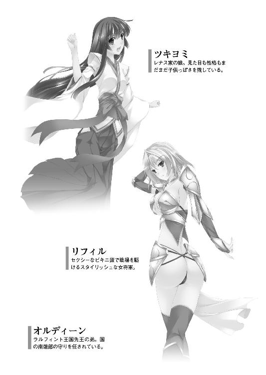

| ハーレムテンペスト (二次元ドリーム文庫) | |
| 竹内けん | |
| (2013) | |
※本作品の全部あるいは一部を無断で複製・転載・配信・送信したり、ホームページ上に転載することを禁止します。本作品の内容を無断で改変、改ざん等行うことも禁止します。また、有償・無償にかかわらず本作品を第三者に譲渡することはできません。

第一章 火種
「王宮では、我こそがラルフィント王国の社稷の臣と信じている廷臣どもが好き勝手言っているらしい」
山間部の都市バーミアから始まったラルフィント王国は、八百年の歳月と、百代に迫ろうかという国王を輩出し、ついには大陸の東の大半を支配するに至っていた。
他の追随を許さない歴史と伝統、経済力と軍事力。そして多様な文化を持ったこの王国は、いまや爛熟期を迎えていた。
世界最大の国家であることは誰もが認めており、周辺諸国とは一線を画した国力ゆえに、帝国などと呼称されることもある。
そんな我が世の春を満喫する超大国であったが、決して平穏というわけではない。その豊かな富は、隣国から見ると涎が溢れんばかりに魅力的だ。
だから、辺境の蛮族たちが絶えず挑戦してくる。それらをうち払うための拠点の一つとして、南の防衛の要となっているのは、バルザック城。ここは現在、オルディーン府という通称で呼ばれている。
そのオルディーン府の書斎にて、指示を出しているのは、弱冠二十八歳の若者だ。
しかし、その地位に就いてすでに、十年になる。
その若さでこのような要職に就けたのは、当然、血筋ゆえのことだ。
彼は先々王の第五子に当たる。
それが生まれてすぐ、有力将軍オゴタイの養子に入った。
そこで教育された結果、類稀なる才能を開花させたのである。
背が高く、逞しい身体つきで、目に力が溢れる姿は、その年齢に相応しく、恐れを知らない自負心と、他者を圧倒する烈気に満ちていた。まさに見るからに英雄然としている。
将軍の風采というものが、兵士たちの士気に与える影響力というものも、無視できない時代であったから、兵士たちからの人望も絶大だ。
「若の力を恐れているんでしょう」
そう応じたのは、大柄な女だった。
飴色に日焼けした肌に、赤い豊かな長髪。肩幅が広く、二つの乳房も大きく、腹部はくびれ、尻も大きく張り詰めるといった、女性的な凹凸に恵まれた体躯である。
そして、そんな肉体美を誇るかのように、金糸の入った黒いビスチェに、大胆なスリットが入った黒いスカートを纏っていた。足下はサンダルであり、いかにもワイルドだ。
顔立ちも、目鼻立ちがくっきりしていて、唇もぽってり厚い情熱的な美貌。そこに、ニヒルな笑みをたたえている。
そして、なによりも彼女を特長づけているのが、右目につけている黒革に金縁の眼帯だ。このせいで、なんとも言えない険呑さを見る者に与える。
彼女の名前はゲリュオン。年齢は三十四歳。オゴタイ家の家宰である。
家の宰相。すなわち、オゴタイ家の筆頭家人である。
オゴタイ家というのは、ラルフィント王国の建国から続くという武門の名流だ。
彼女はこの一族の代々の家宰を務めていた家の娘であり、女の身でそのような地位に就くだけあって、大変な軍略家として知られている。
オゴタイ家の養子に入ったオルディーンをつきっきりで、育成したのが彼女だ。
武芸、軍略、そして、女も彼女が教えた。
「先日は大将軍モーレまでもが、国王陛下に進言したそうだよ。オルディーンは、いずれ謀叛を起こすから、その前に滅ぼしてしまえ、とね」
「くっくっくっ、あの老人らしい。ここまで相互不信が広がってしまったら、行きつくところまで行くしかない、と覚悟を決めたということでしょうね。しかし、今の王都に、殿下を滅ぼせる力があるかどうか」
ゲリュオンはかつて王都ゴットリープにいて、モーレに軍略を学んだことがある。
いわば師匠筋に当たるのだが、まったく気にするでもなく、肩を揺らして嘲笑する姿に、今一人の幕僚が批判的な視線を横目で送りながら、口を開く。
「非は王宮にあります。義兄さんは、何も悪いことをしてないのに、追い詰めるようなことばかりしてくる。王宮の方々は、無益無用な戦役をあえて起こそうとしています」
水色の長髪に、白い肌。知的で洒落な眼鏡をかけて、生真面目で神経質そうな表情をたたえている。
ゲリュオンとは対照的に、軍服もきっちりと着こなしている。カフスボタンまで曇りなく磨かれているさまは、彼女の性格をよく表しているだろう。
黒い軍服のミニスカートから伸びる、黒いタイツに包まれた脚線美が眩しい。
彼女の名前はオルフェ。オルディーンの義理の妹である。年齢は二十四歳。
オルディーンの養父が、名もなきメイドに手をつけて産ませた娘だ。
当初、先代のオゴタイ家当主は、オルディーンに遠慮して、彼女を認知しないどころか、顔を合わそうとさえしなかった。しかし、その存在を知ったオルディーンは、彼女を引き取り、屋敷で妹として暮らさせたのである。
この処置に、先代のオゴタイ家当主が感動したことは言うまでもないし、オルフェもまた、義理の兄に大変な恩義を感じた。
義兄の役に立ちたいと欲した彼女だが、残念ながら腕力も魔力も並以下であり、戦士としてはものの役に立ちそうもなかった。また軍略にしても、素直すぎる性格が災いして、あまり優秀とは言えない。
しかし、真面目で根気のある性格であったし、数字に明るかったので、後方支援を担う存在へと成長した。
「俺としては、ギャナックに恨みも、含むところもまるでないのだがな」
ギャナックというのは、現在のラルフィント王国の国王だ。それを呼び捨てにするのは、不敬の極みのようではあるが、オルディーンとしてはいまだ六歳の甥に親しみを表したつもりだ。
ことの発端は、先王チムールの御代のことにさかのぼる。
オルディーンの長兄であるチムールは、庶民の生活をよりよくしようと努力した名君と言っていいだろう。
優秀な弟たちを四方に配して、盤石の治世を敷いた。
ただ、欠点はいささか病弱だったことである。そのせいか、長く子供ができなかった。
オルディーンもまた、兄の役に立とうと張りきって仕事をしたものだ。
幾度となく侵略軍や反乱軍を鎮圧した。
そんな頼もしい末弟を、兄王チムールは歓び、より多くの権力と財産を与えたものだ。
チムールの、オルディーンに対する期待と信頼は大変なもので、いつしか南方方面軍は、ラルフィント王国最大最強の軍隊となっていた。
そしてついには、
「予は病弱だ。これから子供ができるとも思えぬ。オルディーンを予の後継者にしようと思う」
とまで言い出した。
しかしながら、これに廷臣たちが反対する。時の宰相アマリスが代表して諌めた。
「恐れながら陛下、それはなりません」
「なぜだ。オルディーンはまだ若いが、才能も功績もある。次の王として相応しい人物ではないか？」
「オルディーン様には、まだ三人の兄がおります。もしオルディーン様が王になられたら、三人の兄をいかように遇すればよろしいのですか？」
三人の兄も決して、無能ではなく、北と東と西の守りを任されており、それぞれ強大な軍隊を有していたのだ。
そして、なによりも、オルディーンの母親は、オルディーンを産んだ後、有力将軍オゴタイに下賜されていた。
つまり、王家からは一度離れた身である。いくら優秀だと思っても、それを再び王家に戻すのは問題がある。
チムールは黙り込んだ。国王といえども踏み外してはならない道がある。国王自らが規律を破ったのでは、国全体の規律が緩むことになってしまうからだ。
そうやって、後継者の問題をうやむやにしている間に、チムールの寵妃ミレディとの間に、男子が生まれた。
我が子ギャナックを抱きかかえ、頬を緩めたチムールは、弟を後継者にしないでよかった、と胸を撫で下ろしただろう。
しかし、自分は病弱であり、子供は幼かった。
この子が、成人するまで、自分はとても生きていられない。
そう考えたチムールは、次の瞬間、優秀な弟たちが怖くなった。
自分が死んだ後、弟たちが、この幼子に取って代わるのではないか、という恐怖に駆られたのだ。
このときから、優しくて温和であったチムールは激変する。
軍権を持つ弟たちに難癖をつけて、粛清を始めたのだ。
最初に手がつけられたのは、北の軍権を預かる一番上の弟であった。
弟が病死したと知ったチムールは、その領地を五人の息子に分割させ相続させた。
これはまず、温和なやり方であった、と言っていいだろう。
しかし、こののちのチムールの行動からして、その弟は暗殺だったのではないか、という疑いはかなり濃い。
次いで東海を預かっていた二番目の弟を呼び出し、王宮で監禁してしまった。
「子供が生まれて、兄上は変わってしまった」
身の危険を感じた西の弟が激発。謀叛の兵を上げた。
しかし、これはチムールの方でも、十分に予期していたことである。予め用意していた軍隊を派遣して、あっという間に反乱を鎮圧した。
そして、いよいよ末弟オルディーンの権力を奪おうとした矢先に、チムールは亡くなってしまったのだ。
いくら可愛い息子のためとはいえ、罪なき弟たちを次々と粛清していくのは、元々身体の弱いチムールにとって、ストレスが大きすぎたのだろう。
こうして、問題なく、チムールの愛息ギャナックが即位した。
オルディーンは、親子の情愛に狂った長兄の狂気を紙一重で逃れることができた、と言えるだろう。
しかしながら、チムールの残した廷臣たちが、王宮で権力を握り、幼帝を操っているのである。チムールの政策を継承している、と考えて間違いなかった。
実際、刺客がひそかに送られたことがある。
オルディーンが軍病院の慰問に行ったところで、花束を贈呈してきた少女が含み針を放ち、とっさにゲリュオンが身代わりになった。オルディーンは事なきを得たが、代わりにゲリュオンは右目を失った。
調べてみると、この少女は暗殺教団『罪華』の構成員だとわかったが、その依頼主まではわかっていない。
「いっそ、彼らの期待に応えて差し上げてはどうですか？」
そう嘯くゲリュオンは、右目の傷を意図的に治していない。
魔法の技術が発達したこの世界では、治せない怪我はないのだが、彼女はあえて治さないでいる。
これは彼女なりの願かけであるらしい。すなわち、オルディーンを王座に据えるまで、治さないと決めているのだ。
「キミがそういう不穏な言動をするから、俺はますます悪者だ」
肩を竦めるオルディーンに、ゲリュオンは人食い獅子のような笑みで応じる。
「だいたい、今の都に若に敵う者などいませんよ」
「はぁ～、王宮がその気になれば、十万の討伐軍を編成できるぞ。数は力だ。この兵力差の前では、多少の用兵の優劣なんて問題にならない。それに俺に従う兵士が幾人いるか」
溜息まじりのオルディーンの懸念に、オルフェが勢い込んで申し出た。
「義兄さんが立たれるのでしたら、この南方方面軍の兵士たちは全員従います。それはわたしが保証いたします」
それを片手で制しながら、オルディーンは苦笑する。
「まったくキミたちは物騒だな。俺はラルフィント王国の民の幸せを誰よりも願っているのだ。無益無用の戦などしたくない」
「......まぁ、今立つのは時期尚早かもしれませんね。先王チムールが健在であったときの方が、まだ戦いやすかった。子供が相手というのは、厄介だ」
背もたれに身を預けながらゲリュオンは、天を仰いで慨嘆した。
それを受けてオルフェも、不本意そうな顔で頷く。
「たしかに大衆というのは、無条件に王子様や王女様が好きですからね」
それに現在のラルフィント王国の政治状況は悪いとは言えなかった。
外に対しては連戦連勝。国内の政治にしても、宰相アマリスの下、国民に対しては、公平な裁判を行い、農業などの育成に努めていた。
さすがに名君であったチムールに信任され、後事を任されるだけあって、個人としては清廉潔白で、私腹を肥やすこともなく、ただひたすらに国家のために身を粉にして働いている。そして、私心ではなく、国家のためにオルディーンは邪魔だ、殺すべきだ、と考えているのだ。
本気で、自分の正義を信じている。そんな男であるから、ギャナックの生母であるミレディも全面的に信頼している。
もっとも、オルディーンの身からすると、何も悪いことをしていないのに、国家のありように邪魔だから、死んでください、と言われているようなもので、はいそうですか、とはとても受け入れられない。
生きるためには、王位を簒奪して、自らが王になるしかないのだ。そこまで追い詰められている、とも言える。
「とりあえず、国母ミレディと宰相アマリスが不義密通をしている、という噂を国中にばらまいている。これで何かしらのボロが出るといいのだが......」
葉巻に火をつけて一服しようとしているゲリュオンを横目に見ながら、オルフェは小首を傾げた。
「それって証拠も何もない話でしょ。そのような根も葉もない噂話を信じる者がいるでしょうか？」
「真偽なんてこのさいどうでもいいのさ。大衆というものは、ゲスな噂ほど好むものだ」
傲慢なゲリュオンの言い分に、オルフェはイヤな顔をする。
潔癖性の彼女にとって、この手の謀略は好むところではない。しかし、その有効性を理解できないほどに、子供でもないので、無理やり飲み込む。
義妹の心情を気遣ったオルディーンは、話題を変える。
「それに我々には当面の敵、ガルシャールの王がいる。かの蛮勇なる王がいる限り、俺はこの南方から動けないよ」
王宮が恐れるオルディーンをもっとも簡単に葬る手段。それは三兄を葬ったときのように、王都に呼び出して、適当な罪状を作り上げて、有無を言わさず監禁するなり、処刑するなりしてしまえばいいのだ。
オルディーンもそれがわかっているから、決して王都ゴットリープには出向かない。
その口実としているのが、熱帯雨林の国の覇者ガルシャールの存在である。
かの国の王は、ラルフィント王国の混乱を見て取り、幾度となくバルザック城に挑んできていた。
「ガルシャールなど、その気になればいつでも葬れましょう」
ゲリュオンが険呑に笑ったところに、秘書が入ってきてオルフェに耳打ちをした。
「その件についてはお断りしたはずです。お引き取り願ってください」
不快げなオルフェとは違って、取り次ぎの秘書はなんとか説得しようという熱意が感じられたので、オルディーンが興味を示す。
「何か厄介事かい？」
「いえ、レナス領主の娘というのが来ていまして。しきりに義兄さんと会わせろと煩いのです。用件は何か、と聞いても、義兄さん相手ではないと話さないとの一点張り。あまりにも無礼なのでお断りしたのですが、しつこいのなんの」
オルフェは心底からウザいと言いたげに、肩を竦めて溜息をつく。
「レナスというと、西国の領主だね。規模としては、弱小といったところか？」
領地の位置、規模ともに、たしかに重要とは思えない立ち位置の領主からの使者だ。そんな者が用件も告げずに、会いたいなどと言ってきたら、不信に思って追い返すオルフェの対応は正しいだろう。
しかし、このときオルディーンは気紛れを起こした。
「そんなところの領主の娘が、俺になんの用かな？ 面白い。会ってやろう」
「義兄さん、そんな、得体の知れない者と会う必要はありません。義兄さんと面会したい者など、それこそごまんといるのですから」
「はるばる遠くからやってきたのに、手ぶらで帰らせるのも忍びないだろう」
義兄の酔狂に呆れたオルフェは、次いで取り次いだ秘書を睨む。
彼がオルフェでは埒が明かないということで、オルフェに取り次ぐふりをして、直接、オルディーンの耳に入れようと企んだ、と邪推したのだ。
とにかくも、オルディーンは茶飲み話の余興として、レナス家の姫君とやらと面会することにした。
※
「オルディーン殿下。お目通り叶って光栄です。初めて御意を得ます。わたくしレナス家の娘でツキヨミと申します」
トコトコと入室してきたのは、まだ十代の半ばと思える少女であった。
いまだ成長期なのだろう背は低い。胸の膨らみも推して知るべし。
艶やかな黒い長髪に、温かみを感じさせる色白の肌。プニプニと柔らかそうな頬をしており、あどけなさを残す顔立ちには、愛らしい笑顔をたたえている。
オルフェの副官が思わず、骨折りしたくなるのがわかるような保護欲を掻き立てる少女だ。
「で、何用かな？ お嬢さん、俺以外には言えない用件だそうだが」
オルディーンが椅子を勧めると、少女は行儀よく「失礼します」とお礼を言ってから素直に腰を下ろす。
いまだ幼くとも使者に選ばれるだけあって、礼儀作法も行き届いているようだ。
「わたくしをオルディーン様の側仕えにしていただきたいのです」
「ほぉ」
オルディーンはラルフィント王国のナンバーツーだ。その侍女になりたいという者は少なくない。
そんな用件か、ということでオルディーンの興味が失せようとしたとき、ツキヨミは続けた。
「はい。来るべき内戦に際して、我が父はオルディーン殿下にお味方することを表明しに参りました。その人質と思ってくださって結構です」
「大胆なことをおっしゃる」
軽く驚くオルディーンに、ツキヨミはにっこりと笑顔で返す。
「ですから、オルディーン様以外の方には言えませんでしたの」
思わず釣られて笑顔を返しながら、オルディーンは質問する。
「キミは内乱が起こると言うが、どんな内乱が起こると考えているんだい」
「もちろん、オルディーン殿下が王宮の逆臣たちを討伐するための戦ですわ」
「王宮の逆臣？」
なかなか微妙な言い回しである。
「ええ、オルディーン殿下は国王陛下には謀叛するはずがありません。だって、ラルフィント王国の忠実な臣下ですものね。でも、その側近たちはよくありませんわ」
いまだ幼子であるギャナックに政治的な判断が下せないのは自明のことだ。それを名指しで暗君を討つ、というわけにはいかない。
掲げられる戦争の大義名分は「君側の奸を討つ」というものになるだろう。
正直、それしか大義名分の作りようがなかったのだ。
「お嬢さんはなかなか頭がいいね」
「はい。よく言われます」
しれっと返されたオルディーンは、軽く噴く。
「面白い。なかなかに面白いお嬢さんだ」
「もし、気に入られたのでしたら、わたくしを閨にお連れになってもよろしいですよ」
「......」
さすがに唖然とするオルディーンを前に、ツキヨミは勢い込む。
「わたくし、男を知らないまっさらな身体です。この身のすべてをオルディーン様に捧げる覚悟で来ました。って、痛い、痛い、痛い」
「可愛い顔して何言っているのかな？ この娘は」
無言でツキヨミの背後に回り込んだオルフェが、両拳をコメカミに当てて、グリグリと締め上げたのだ。
「義兄さんは、あんたみたいな小便臭い小娘を相手にするほど、女性に不自由はしていません」
「あぅ、女は若ければ、若いほどに価値があるんです。年増は僻まないでください」
「胸もなければ、あそこの毛も生えてなさそうな小娘がぁ」
オルフェはさらにグリグリと、ツキヨミのコメカミを締め上げる。
「はぅ～～～、ヒステリーを起こさないでください。オバサン」
「誰がオバサンだぁ。このこまっしゃくれペチャパイチビ」
オルフェとツキヨミでは、結構な年の差がありそうだが、精神年齢は同じ程度のようだ。
同レベルで喧嘩している。
オルディーンとゲリュオンは思わず、顔を見合わせて肩を竦めた。
そこに伝令が駆け込んでくる。
「ガルシャール軍が現れました！」
「いいタイミングだな。処女娘どもの喜劇を見ていても仕方がない」
葉巻を灰皿で揉み消しながら、ゲリュオンは大儀そうに立ち上がった。
「それにしても蛮王殿は、痺れを切らしているようですな」
ガルシャールの王は、野戦に絶対の自信があるようで、幾度も野戦を挑んできたが、オルディーンは決して乗らなかった。
城壁に籠もっている。
そこをどうにもできないガルシャール王は、いつも虚しく帰っていくわけだが、その間隔が次第に短くなってきているようだ。
オルディーンが野戦に応じないのは、臆したからではない。戦えば勝つ、という自信はあった。
しかし、勝ちたくなかったのだ。
ここ最近のオルディーンは、意図的にガルシャールの王をのさばらせていたと言える。
「キミの方こそ、焦れているように見えるぞ。油断をするな」
「わかっていますよ。では、いつも通り、適当に追い払ってやりましょう」
釘を刺されたゲリュオンは投げやりに手を振って、部屋を出る。
「ああ、頼んだ。オルフェは兵士たちの弓矢魔法が滞ることのないように手配してくれ」
「承知しました」
ツキヨミと遊んでいたオルフェは、真顔に戻って神経質なまでに完璧な敬礼をして、部屋を出る。
そこに頭を押さえて蹲っているツキヨミが声を出す。
「わたくしも何かお役に......」
「お嬢さん、今は部屋で大人しくしてなさい」
「しょ、承知いたしました」
こうして、オルディーンもまた部屋を出た。
※
「まったく、毎度毎度、元気な猿どもだね」
高楼に出たゲリュオンは、階梯をかけ、必死に城壁を登ってくる敵兵を見て苦笑を浮かべた。
血の匂いの混じる強風を受けて、赤い豊かな髪が棚引く。
眼帯をつけた女丈夫が、その雄姿を現すと、城壁の上で奮闘していた兵士たちの士気は明らかに上がる。
畏怖されつつも、彼女がいれば勝てる、と思わせる強烈な存在感だ。
女とはいえ、いかにも前線の将帥らしく、片目を鷲のような眼差しにして、戦局をじっと見ていた。
「おい、自称天才魔術師。準備はできているね」
「その言い方は心外だなぁ。ぼくほどの才能を持った魔術師は空前絶後だよ。その気になれば、不老不死にだってなれる」
灰色のローブで身を包んだ魔術師は意外と若々しい声で応じた。
しかしながら、その高尚な主張を、ゲリュオンは話半分に聞いているようだ。
「能書きはいい、準備はできているんだね」
「ああ、いつでもいいよ。なんだってぼくはこう粗雑に扱われるのかな。天才はいつも孤立する」
なにやらぼやいている魔術師をウザ、と言いたげに一瞥したゲリュオンは、敵を十分に引きつけたことを確認。右手を振るった。
「撃てえっ」
ゴゴゴ───！！！
雷鳴のような音がした。それは一つではない。三十もの雷が一度に落ちた音だ。
三十門からなる魔法砲が、一度に火を噴いたのだ。
ラルフィント王国の中でも、南方軍が最強と言われる所以は、その魔法具の強さにある。
特にオルディーンは、魔法具の存在を重視し、性格に難があるとして王宮魔術師の地位を追われた者を登用して、多大な研究開発費を湯水のように与えた。
その成果の一つが、この魔法砲というわけである。
たまらずガルシャールは崩れたが、ガルシャールの王は勇猛であり、その兵士たちも勇敢だった。
すぐに軍を立てなおして、さらに突撃してくる。
しかし、バルザック城の城壁は鉄壁だ。三度突入して三度撃退されたところで、攻勢の限界点を迎えた。
「よし、追撃しろ！」
敵が崩れたところに、追い討ちをかける。
専守防衛が任務とはいえ、敵が崩れたのに見逃してやる必要はない。次回のためにも、損害を与えられるときには、与えておくべきだ。
ゲリュオンは、奇をてらったことは何一つしていない。要塞防御の基本通りの作戦をしただけだ。
しかし、基本なればこそ、強い。
バルザック城の城門が開き、ラルフィント勢は打って出た。
このとき先陣を切ったのは、白い鷹であった。
「ミラージュが領主リフィルが一番乗り！」
白馬にまたがった、非常に華やかな女武者である。
胸や腰回りといった、女として隠すべき最低限のところを隠しただけで、ほとんどスタイルが丸わかりになってしまう、俗に言うビキニ鎧を纏っている。
戦装束というのは死に装束であるから、できるだけ着飾りたい、というのは誰しも持つ心理だ。
特に若い女は自らの肉体美を見せつけたいものらしい。男に比べて女は、魔法の地力が優れていると言われ、強力な魔法防壁を纏えるならば、極端な話、裸でも問題はないのだ。
そして、この女は、そういう装いをするに相応しいスタイルを誇る美人であった。
輝くようなブロンドに、青い瞳。細身だが、女として出るべきところはしっかりと出ている。特にくびれた腹部から腰のラインなど絶品だ。
彼女が弦を鳴らして矢を放つと、敵はばったばったと倒れていく。
「リフィルか、いいタイミングで出る」
前線指揮をゲリュオンに任せて、高みの見物を決め込んでいたオルディーンも、思わず目を細めた。
いや、オルディーンだけではない。ラルフィント王国軍の将兵たちが一気に華やいだ。
現在のラルフィント王国の貴族における人気投票というものがあったなら、彼女が断トツの一位になると思われる。
彼女は元々王都の騎士の家に生まれたが、母方の伯父の跡を継いで、貴族になった。
多くの血縁の中から彼女が後継者に選ばれたのは、その豊かな才能を認められたからだ。
元々騎士時代から有名な女である。なにせその美貌は、一度見たら、忘れたくとも忘れられない。
その上、歌を唄わせれば鳥が恥じらい、笛を吹かせれば馬が躍る、ダンスを踊れば月も見惚れると言われるほどに、多芸多才。それでいて、現在の年齢は二十八歳。若さと色気が絶妙にブレンドされた、女としてもっとも美しい盛りであろう。
この美と芸術の女神に愛された、いや、化身と言っていい女騎士が最前線で奮戦したことで、ラルフィント軍の士気は大いに上がった。
そして、このときオルディーン、そして、ゲリュオンといった軍才に絶対の自信を持った人々の予想を超える事態が起きる。
リフィルに触発されて、士気が上がりすぎたのだ。いや、立て続けの出兵で、ガルシャールの内実が脆くなっていたのかもしれない。
「ガルシャール国王が首級、ドライムが領主、カンマルクが討ち取った───っ！！！」
その誇らしげな大音響を耳にし、オルディーンは絶句した。
カンマルクというのは、地方貴族の当主で、身分としてはリフィルと同じだ。ただし、父親が名将として知られた人物であり、それだけに過剰に勇猛なところがある。
オルディーンの評価としては「あいつの作戦はたいしたことはないが、とにかく強い。やつが指揮をすると、兵士たちの勇気が倍増する」というものだ。
まさに猛将というやつだろう。
その猛将が、なんと敵の総大将、それも国王の首を挙げてしまったのだ。
茫然とするオルディーンに、やってきたゲリュオンが慇懃に頭を下げる。
「大勝利、おめでとうございます」
「何がめでたいものか」
王宮が、オルディーンの力を疎ましく思いながらも、後回しにしてきたのは、南の覇者ガルシャールの国王カハシャールの存在が大きい。
強大な敵がいる前線から、誰もが認める実績ある将軍を外すのは難しい。
しかし、このたびの大勝利でガルシャール王国の脅威は完全に消え去った。
これを知った王宮の廷臣たちは、嬉々としてオルディーンを排する計画を実行しようとするだろう。
「お前の右目。治す日も近いかもしれないな......」
そう言い捨てて、オルディーンは城内に消えた。
※
「おお、カンマルク将軍。お前こそ、国一番の勇者だ」
カハシャール王の首級を持ってきたカンマルク将軍を、オルディーンは口を極めて称賛した。
実際、戦場で主将を、それも国王を討ち取るなどということは滅多にあることではない。それをやってのけたのだ。いくら褒めても褒めすぎということはないだろう。
兵士たちも大いに盛り上がった。
オルディーン自身は、このような大勝利を望んでいたわけではないが、少なくとも大勝利を歓んでいる演技をしないわけにはいかない。
主将の複雑な思いなど知らず、バルザック城内は大いに盛り上がった。
オルディーンも、義妹オルフェに命じて酒蔵を解放させ、兵士たちに好きなだけ飲むように促した。
「キャー、リフィルお姉様～素敵ぃぃぃ♪」
どんちゃん騒ぎの中、人々の中心で大いに盛り上げているのは、華やかな女貴族である。
彼女が両腕を上げて、なめらかな白い腋の下を晒し腰をくねらせながら踊るセクシーな仕草に、多くの男たちの視線は釘づけになり、女たちは黄色い歓声を上げる。
絶世の美人であるリフィルだ。男に人気があるのは当然だろうが、女性にも人気があるのだ。
武芸、芸術、容姿に優れた彼女は、人生を大いに謳歌している。
多くの男と浮名を流しているだけではなく、女とも浮名を流している艶福家なのだ。
ここまで凄いと、嫉妬の対象にならず、ただ憧れの対象にしかならないらしい。女として理想の生き方と思われているようだ。
享楽的なラルフィント王国の貴族の中で、その最先端と言っていいだろう。
「そういえば、レナス家の娘とやらはどうした？」
オルディーンの側女になりたいと主張していたのだ。このような席ではさぞや積極的にアピールしてくると思えたのに、姿を見せないことに、オルディーンは疑問を呈した。
オルフェが不機嫌そうに応じる。
「なんでも、戦場ではお役に立てなかったので、負傷兵の面倒を見たいとのことです」
「ほぉ～」
「なかなか地に足がついたお姫様だね」
オルディーンは感嘆の声を漏らし、ゲリュオンも好感を持ったようだ。
予想通りの反応に、オルフェはますます不機嫌になる。
「あぁ～もぉ～、南国はジメジメしてイヤね」
ひと踊り終えたリフィルは、裸と見紛うビキニ鎧から晒した肌が汗で濡れ輝くことで、いっそう色っぽくなっている。
「おい、リフィル。俺と踊らないか？」
敵王の首級を取った今夜の主役であるカンマルクが、生唾を飲みながら、申し出た。
「うふふ、王を討ち取った男の味、たしかに興味深いけど。今夜はやめておくわ。あなたに抱かれたがっている女は、他にいくらでもいるじゃない」
あっさりと振ったリフィルは、オルディーンの下に歩みよった。
「殿下、わたくしと一曲、踊っていただけないかしら？」
オルディーンの傍らに控えていたオルフェは、ムッとした顔を浮かべたが、オルディーンは両手を広げて応じる。
「俺のような不調法な者をお誘いいただけるとは、光栄ですね」
「うふふ、何をおっしゃられるやら、こちらこそよろしく」
オルディーンとリフィルは会場の中央でダンスを踊った。
美男美女の踊りに、会場は大いに湧く。
オルディーンの胸板に、自らの乳房を押しつけながら、リフィルは嫣然と微笑む。
「戦の後って、身体が火照るわ」
「......」
美しい顔の青い瞳が、オルディーンの顔を見上げてくる。
オルディーンの視線は、白い胸の谷間に吸い寄せられた。
男の視線を十分に意識している女は、不意に男の股間を鷲掴みにする。
「うっ」
「これで静めてもらいたいんだけど？」
リフィルのこの誘いに落ちない男はいない。そして、オルディーンすら、例外ではなかった。
「努力いたしましょう」
苦笑したオルディーンは、嫣然と笑うリフィルの手を取って、そっと会場を後にする。
その姿を見送りオルフェは、歯がみをする。
「キィ───ッ、義兄さん、なんだって、あんな尻軽女と」
見かねたゲリュオンが宥める。
「若も男だからな。仕方あるまい」
堂々たる美女であるゲリュオンだが、彼女に声をかけるような勇気のある者は、この城には一人もいない。
なにせオルディーンの情婦とも噂される女であるし、下手に声をかけたら最後、男として立ちなおれないほどの衝撃を食らいそうであった。
よって暇を持て余したゲリュオンは、水割りを片手に、一人葉巻を燻らせていた。
一方、オルフェは、ゲリュオンとは別の意味で、男を近寄らせない雰囲気をプンプン発散している。
彼女の目は、常に義兄を見ており、他の男など眼中にないのが見え見えなのだ。
性格がまるで合わない二人なのだが、会場で浮いているという意味では、同じであったし、なんとなく近くにいた。
「そりゃ、義兄さんも木石ではないことは心得ています。義兄さんはまだ独身なのですし、女性と楽しまれるのもよろしいでしょう。しかし、相手は選ぶべきだと思います。何もよりにもよってあんな女と」
憤懣やるかたないといったオルフェの様子に、ゲリュオンはからかいの声をかける。
「お嬢は若と通じる女はすべて嫌いなのだろ？」
「そうは言いません。でも、勇気胆力思慮、すべてを持っておられる義兄さんだけど、女を見る目だけは持っておられない。それが悲しいのです！」
苛立たしげに自らの右手の親指を、形のいい唇で噛むオルフェは、暗にゲリュオンをも非難しているようだ。
「......」
言葉もなく肩を竦めるゲリュオンなど気にも留めず、一人自分の世界に入ってしまったオルフェはブツブツと呟く。
「義兄さんもいいかげん、身を固めればいいのに......」
「お嬢の目に適う嫁というのも大変だな」
苦笑しながら杯を呷るゲリュオンに、オルフェはきっとなって叫ぶ。
「女の人格などどうでもいいのです。結婚すれば、義兄さんの味方が増える。そうなれば戦が有利になる」
どうやら、この甘ちゃんの娘でも、オルディーンと王宮との戦争は避けられないと感じているようだ。
「なるほど政略結婚ね......。それも手だな」
ゲリュオンは意表を突かれた自分に驚いた。
（やれやれ、あたしも女だね。政略結婚なんて基本中の基本だというのに、思いつかなかった。若が他の女と一緒になることを、無意識に避けていた、ということか）
やり手の女軍師は、葉巻を燻らせながら、自らの甘さを自嘲した。
一方、報われぬ恋に悶々としている娘を横目に見て、からかってやる。
「お嬢もいいかげんに兄離れをして、恋人の一つも作ったらどうだ。二十代も半ばにさしかかって、いまだに男の前で股を開いたことがない、というのは、結構、恥ずかしいぞ」
「ぐっ」
絶句させられたオルフェは、白い薔薇のようであった頬を、ぼっと赤い薔薇のように色づかせた。
「余計なお世話です！ 貞淑であることを非難される謂れはありません！」
眼鏡が落ちそうなほどの勢いで、血相を変えて叫んだオルフェは、もう顔も見たくない、と言いたげにスタスタと会場から歩み去ってしまった。
「お嬢はいつまでもガキだねぇ」
オルフェが、義兄であるオルディーンを昔から大好きだ、ということは近くにいる者なら、誰にでもわかっていることだ。
義兄の役に立ちたいと、健気に振る舞うさまは見ていていじましいほどだ。
当然、オルディーンだって、義妹の気持ちに気づいているだろう。
しかし、いまだに手をつけようとしないのは、つけるつもりがないからだ。いいかげん脈がないと諦めるのが本人のためだろう。
「まぁ、あたしも人のことは言えないか......。若が女と消えたんで、やつあたりしているわ」
想像すると気分の悪くなることはとりあえず忘れて、片目の女軍師は、葉巻を燻らせながら、来るべき動乱に思いを馳せた。
※
「あん、そんながっつかなくても、ああん♪」
側近たちがいろいろと気を揉んでいることなど、気にも留めずオルディーンは、国一番の美女と寝室に入った。
寝室の扉が閉まるのももどかしく、同じ年の恋多き美男美女は、抱きあい、唇を重ねる。
お互い多くの恋人を持つ身だ。
接吻も手慣れている。
リフィルは両腕を、オルディーンの首に回し、その胸板に自らの乳房を押しつける。
オルディーンの方は両手で、リフィルの尻を両側から握り締め、自らの昂りを、股間に押しつけてやった。
そうして、二人はもつれるようにして、寝台に転がり込んだ。
接吻しながら互いの衣装を脱がしていく。
「はぁ、はぁ、はぁ......、いよいよね」
互いに裸になったところで、二人は横向きになり向かい合った状態で接吻を離す。
至近距離で瞳を合わせてくるリフィルに、オルディーンは惚ける。
「なんのことだ？」
「あなたの天下取り」
「物騒なことを言う。俺は、ラルフィント王国の忠実な臣下だよ」
ごく当たり前に応じるオルディーンの言葉に、ブルーサファイアの瞳を鋭く輝かせたリフィルは肩を竦める。
「わたしとあなたの仲じゃない。隠し事はなしにしてもらいたいわ」
「俺にとって、天下なんかより、キミの身体の方が魅力的だね」
嘯いたオルディーンは乳房を揉んでやる。
実際、多くの男にとって、この裸体はどんなものよりも価値を持つだろう。それほどに完璧な女体だ。
白く透明感があるお椀形の乳房は、横向きになっても型崩れしない弾力を保ち、その頂を飾る乳首も透明感があるピンク色。まさに極上の乳房だ。
「......」
作り笑顔のリフィルと、すっとぼけたオルディーンの瞳が正対していた。
リフィルとオルディーンは、いわばセックスフレンドであるわけだが、身内ではない。
リフィルはラルフィント王国貴族である。ゲリュオンやオルフェのような身内とは違って、国王に忠義を尽くす義務がある。
軽々しく謀叛の相談などできる相手ではない。
やがてリフィルの方も、自らの立ち位置を理解したのか、諦めたように視線を外した。
「あくまでも惚けるのね。まぁ、いいわ。いずれ、遠くない将来に正体を見せてもらえるんだろうしね。......無粋なことを言って悪かったわ。続けましょう」
気を取り直したリフィルは、再びオルディーンの唇を奪った。
二人は接吻をしながら抱きあって、互いの身体をまさぐる。
オルディーンの右腕が、リフィルの背中を回って右の乳房を取り、左手でもう一方の乳房を弄ぶ。
リフィルの方は、両手を下半身に伸ばして、オルディーンの逸物を握る。
逸物を両手に包んで、シコシコと扱くだけでなく、亀頭部を掌の窪みで捏ね回したり、肉袋を揉んだりと、巧みな逸物弄りだ。
しかし、イかせようとはしていない。あくまでも、男を感じさせ、楽しませようとしているのだ。
このあたり、さすがは男慣れした女の技である。
「ふん、うむ、うむ......」
同年齢の美男美女は、唇を開き、舌を絡ませ、唾液で顎を濡らしながら夢中になって接吻を続ける。
オルディーンの両手は、こんもりと盛り上がった白い肉の塊を、ピンクの手の跡が残るほどに揉みしだき、乳首が硬く勃起してくると、それを抓んで集中的に捏ね回す。
「ああぁん♪」
たまらず大きくのけぞったリフィルは、接吻を終えて大きく喘いだ。
「相変わらず、キミは乳首が弱いな」
接吻の我慢比べに勝ったオルディーンがからかうと、リフィルは頬を染めながら応じる。
「あなただからよ。あなたがわたしを淫乱に育てたのよ」
リフィルとオルディーンの出会いは、実はかなり古い。
リフィルが貴族の地位を継ぐなどとは誰も想像していなかった頃。王都を守る単なる一騎士であった彼女と、オルディーンは王都で出会った。
そして、彼女の初めての男になったのがオルディーンである。そして、その後、女として、牝としていろいろと仕込まれたリフィルだが、オルディーンが南方の防衛軍の総司令官に抜擢されると、あっさりと捨てられた。
ようするに貴族の坊っちゃんが、女騎士を抓み食いしたわけだ。
どこにでもあるようなお話で、オルディーンから見れば、一時の火遊びである。いい思い出だ、と過去のことになっていたところに、貴族の当主となった彼女が、援軍として南方に派遣されてきたのである。
そのような過去があることを、リフィルもオルディーンも特に公言していない。
だから、艶福家の男と女が適当に遊んでいるだけ、と周りの者たちは思っている。
オルディーンのことはなんでも知っていると思っているゲリュオンやオルフェですら知らない。二人とも、王都にいたときのオルディーンに女騎士の恋人がいたことは知っているかもしれないが、リフィルだとは思いもしないだろう。
「人のせいにするのはよくないな。キミは自分の身体をそういう風に育てたんだよ」
リフィルには多くのセックスフレンドがいる。オルディーンもまた、その中の一人に過ぎないのだ。
オルディーンは、左手を下ろし、リフィルの股間に入れた。
クチュリ......。
「あん♪」
悶えるリフィルの前に、左手を翳す。
「いい濡れっぷりだ」
リフィルの鼻先で、オルディーンは左手の親指と人差し指の間に粘着質な糸を引く。
赤面するリフィルだが、負けなかった。
逸物を握っていた両手を、オルディーンの鼻先に翳す。
「あなただって、こんなに先走りの液出しちゃって、イヤらしい」
「っ」
思わず鼻白むオルディーンの顔を見て笑ったリフィルは、両掌を返すと、舌を伸ばし、自らの掌をペロペロ舐める。
「うふふ、美味しい♪」
負けん気を刺激されたオルディーンは、この淫乱女を徹底的に感じさせたくなった。
リフィルの乳房に顔を埋めたオルディーンは、その乳首を吸い上げながら、右手の親指でクリトリスを押し、人差し指と中指を膣穴にぶち込んだ。
「あ、いきなり......」
ザラザラの襞肉が絡みついてくる熱い肉壺を、グリグリと捩じり回しながら、ジュポジュポと、意図的に卑猥な水音を立てて出入りさせる。
「ああ」
リフィルは、両腕を頭上に上げて、腋の下を晒しながら、男にすべてを任した。
やがて、オルディーンの二指の腹は上を向けられて、膣の入口近くを掻きむしる。
「あ、それ......するの......」
男の意図を察したリフィルの顔に緊張が走る。
しかし、逃げようとはせずに、諦めたように身を任せた。
オルディーンの方は委細構わず、女の膣の入口近くの腹側を、集中的に刺激する。
プッシュ───。
「ああ」
気の抜けた声とともに、スタイリッシュな美女の股間から、透明な飛沫が上がった。
いわゆるＧスポットを刺激して、潮噴きをさせられたのだ。
長い足をだらしなく蟹股開きにさせたリフィルは、顔を紅潮させて溜息をつく。
「まったく、負けん気強いんだから......」
ひと仕事終えたオルディーンは、満足げに笑う。
「キミの身体は磨きがかかって、敏感になっているね」
「いい女に育っているって言って欲しいわ」
諦めたように溜息をついたリフィルは、気を取り直して口を開く。
「もう前戯はいいわ。早く入れて」
軽く頭髪を掻き上げたリフィルは長い両足を立てると、Ｍ字にして、自ら両手の指で肉割れを開いてみせた。
濡れた鮮紅色の媚肉が、ヒクヒクと痙攣している。
「欲しいの。あなたのその逞しいおちんちん」
このスタイリッシュな痴女の誘惑に抗し得る男などいるのだろうか。
決して女に不自由していないオルディーンですら無理であった。
男の意思など関係なく、まるで逸物自身に意思があるかの如く、女の穴に吸い込まれていく。
「それじゃ、入れるぞ」
「ええ、お願い......あぁ」
牡としての本能を揺さぶられたオルディーンは、美しい牝獣に覆いかぶさると、いきり立つ逸物を押し込んだ。
「うふふ、でっかい。熱くて硬くて、ゴツゴツしていて、最高♪」
「くっ」
外見が美しい女は、膣内の形もまた優れている。
ザラザラでキュッキュッと締めてくる、その襞肉は、入れただけで男を搾り取りそうだ。
必死に下腹部に力を入れて我慢するオルディーンを見下ろしながら、奔放な女は両手を男の首にかけて、挑発してくる。
「このおちんちんで満足させてくれないと、わたし王様に讒言しちゃうわよ。オルディーンのやつはやっぱり謀叛を企んでいますって」
「そりゃ、大変だ」
リフィルの冗談だとは心得ているが、満足させてやらなくては男が廃るというものだ。
何よりも、彼女の上を通りすぎていったであろう多くの男たちより、自分が劣ると思われるのは癪だ。
どんな男よりも、リフィルにとって、もっとも楽しめる男は自分なのだと、刻み込んでおきたい。
牡としてのプライドを刺激されながらオルディーンはゆっくりと腰を引いた。そして、抜け落ちる直前、力強く押し込む。
ドスン！
「あん」
コリコリしている子宮口まで一気に貫いた。
リフィルの豊かな白い乳房が、たぷんと揺れる。
「オルディーンは誠心誠意、国王陛下に忠誠を尽くしている、と言ってもらえるよう、キミをイかしまくることとしよう」
「あは、楽しみ、あん」
ズッコ、ズッコ、ズッコ。
オルディーンは力強く腰を幾度も落とし、子宮口まで幾度も穿った。リフィルの方もまた、長い両足を男の尻に絡めて、自ら巧みに腰を突き上げてきた。
絶世の美貌を誇りながら、性欲も強い。まったく、男好きのする女である。
「あはっ、やっぱり、戦に勝った後のセックスって最高だわ。あ、気持ちいい、気持ちいい、気持ちいい」
さすがは唄の名手。聴かせる喘ぎ声だ。
こんなにも美しくも色っぽい喘ぎ声を聴かされては、男は我を忘れて、掘削に夢中にならざるをえないだろう。
オルディーンもまた、野獣となって腰を使った。
「ひぃ、ひぃ、ひぃ、ひぃ、激しい。激しくていい。そんな激しくされたら、わたし、もう、イク、イク、イク、イっちゃう───ッ」
男にしがみつきながら、リフィルは激しく痙攣した。ザラザラの膣洞もまた、ギュッギュッと締めて、男の射精を促す。
しかし、オルディーンは丹田に力を込めて、射精を止めた。
「ああ～～～♪」
男にしがみついていた両手足を離したリフィルは、ぐったりと脱力する。
「はぁ、はぁ、はぁ......」
荒い呼吸をしていたリフィルは、理性を取り戻すと、不満げに自らを貫く男の顔を見る。
「女だけ、一方的にイかせるのはマナー違反よ」
「今夜は、徹底的に楽しもうと思ってね。キミがもうやめて、と泣いて縋るまでやってあげるよ」
そう嘯いたオルディーンは、結合部はそのままに、リフィルの右足を抱えて持ち上げた。
「あん」
ズルリ。
膣洞がねじれて、逸物を絞る。
リフィルの長い右足を抱え上げ、左太腿を跨ぐ。いわゆる横位になった。
女の膣というのは、基本的に腹と背の間で締まるものだ。それが横になったことで、逸物にくる刺激もまた、横になる。
この姿勢で掘削を再開する。
「ああ、ダメ、そんな連続だなんて、あ、でも、いい、このおちんちん、いい♪」
淫らな女はたちまちのうちに、快感の波に飲まれて理性を失う。
そのまま絶頂してしまったが、オルディーンは射精しない。さらにリフィルの身体を半回転させて、今度はうつ伏せにして尻を差し出させる。後背位となった。
「はぁ、はぁ、はぁ......また、わたしだけイかせた」
「まだまだ、これからだ」
オルディーンは、リフィルの尻を抱き、ますますいきり立つ逸物で掘削を始める。
「はぐ、ふぐ、びく」
連続絶頂で肉体的にかなり追い詰めているのだろう。リフィルはシーツに顔を埋めて悶える。
もう自分から腰を使う余裕はない。
ただ一方的に男に犯される。
オルディーンの視界では、リフィルの薄紅色の肛門がヒクヒクと痙攣していた。
そして、三度リフィルを一方的に絶頂させることに成功した。
「ひぃぃぃぃぃ......」
ビクン、ビクン、ビクン。
晒された白い尻が、痙攣している。
しかし、オルディーンは射精しない。それと悟ったリフィルは悔しげに肩を震わせる。
「はぁ......はぁ......はぁ......女だけ先に三度もイかせるだなんて、性悪な性格がよく出ているわ」
「ごめん、ごめん、次こそ、俺も射精するよ」
「絶対だからね、絶対よ。もし約束破ったらわたし、帰るわ」
膣内射精の快感を知ってしまった女体にとって、単にイかされるだけでは真の満足感を得られないものらしい。
「わかった。俺ももう限界だから、次は我慢できない」
オルディーンはリフィルの背中に抱きつくと、両腕を腋の下から回して、豊かな乳房を鷲掴みにした。
それからぐるりと半回転して、二人して仰向けになる。
背面の女性上位の姿勢となった。
この体位のまま下から、突き上げてやる。
「ひぃ、ひぃ、ひぃ......、今度こそお願い、ナカにちょうだい！ 妊娠させちゃってもいいから！ あなたの子供なら、産む、産んじゃう！」
膣内射精して欲しさに、完全に理性を失ってしまったのだろう。あらぬことを叫んでいる痴女の子宮に向かって、オルディーンは溜めに溜めた欲望を放った。
ドビュ！ ドビュッ！ ドビュビュ！
「ああああぁぁぁぁぁ～～～」
念願の膣内射精をしてもらって、リフィルの理性は焼き切れたようだ。
現在のラルフィント王国を代表する、淫らで美しき女貴族は、大口を開けて、涎を垂らしながら、舌を出し、完全に白目を剥きながら、涙を流した。
リフィルが身も世もなく絶頂するさまに、オルディーンは満足した。
艶福家の二人にとって、セックスは男と女の意地をかけての勝負という側面がある。
その勝負に勝ったと思ったのだ。
しかし、落ち着くとリフィルは膣内に入った逸物を愛しげに締め上げながら、挑発的に男の顔を覗き込む。
「まさか、もう終わりとか言わないわよね。夜はまだまだ長いわよ」
「まったく、キミとやっていると飽きないな」
かくして、今をときめく、スタイリッシュな美人貴族と、なにかと話題の将軍は、その後も、互いの性器が擦り切れそうになるまで頑張った。
第二章 蟄居
「な、なんですか!? この命令は」
王都からの命令書を見て、オルフェの両腕がわなわなと震えた。
「さっそく来たわね。手回しのよさに感心するわ」
軽く命令書を取り上げて目を通したゲリュオンも、いささか呆れ気味に応じる。
オルディーンがガルシャール国王を討ち取ったことを、ラルフィント王国の王宮はことのほか歓んだ。
それに報いるために、南方軍の諸侯に一時的な休暇をくれるという。つまり、リフィルやカンマルクといったオルディーンの馴染み深い諸侯を領国に帰らせて、代わりにガルシャール王国の対策として、グエン将軍が二万もの大軍を率いてやってくるというのだ。
つまり、オルディーンの手元には直属軍しか残らず、他の指揮系統を持った大軍隊が駐留するというのだから、南方軍の総司令官としては、有名無実化されたのである。
「グエン将軍というのは、王族ではないから、若に比べると格は落ちるとはいえ、歴戦の武人だ。十分に名将と言っていい実績があり、先代国王チムールの信頼厚い側近の一人だった。今まで王都の近衛長官を務めていた者が、辺境の最前線に飛ばされてくるなんて降格人事だ。こんな人事が通るってあたり、意図が見え透いているね」
現在の王宮の主流派。それはとりもなおさず、バリバリのオルディーン粛清派という意味だ。
ゲリュオンの解説を聞いたオルフェは、顔を真っ赤にし、眼鏡をずり落とさんばかりの勢いで、叫んだ。
「このような理不尽な命令、断固拒否すべきです」
椅子に座ったままオルディーンは肩を竦める。
「どこが理不尽なんだ。正式な手続きを踏んで発せられた命令を、無視するわけにはいかないだろう。拒んだら、逆賊だ」
長い間、前線に置かれていた兵士たちが、故郷に帰れるというのを歓ばないはずがない。これをオルディーンが強引に引きとめたら、オルディーンの人気が落ちるであろう。
また、王宮の方では、オルディーンが拒否して謀叛することを、予測している。いや、期待している、と言っていいほどだ。
派遣されてくるグエン将軍の二万だけではなく、オルディーンが謀叛したら即座に鎮圧しようと、軍を四方に配して、万全の布陣を敷いていた。
「仕掛けてきたのは王宮です。本来なら、義兄さんが王座についていてしかるべきなのです。だいたい、ギャナックが本当に、先王陛下の子供であるかも怪しい。長く子供ができなかったのに、なぜミレディとかいう女だけが妊娠できたかのか」
激昂して言いたい放題の義妹を、オルディーンは強く窘めた。
「オルフェ！ それは言いすぎだよ。ギャナックは俺の兄が正式に認めた嫡子だ。この事実は揺るがない」
我に返ったオルフェは、軽く咳払いをして謝罪する。
「失礼。いささか口が過ぎました。とにかく、今なら南方軍を率いて戦えます！」
「キミは過激だね」
「義兄さんの命を守るためなら、手段など選んでいられません！」
オルフェの必死の主張に、オルディーンは首を横に振るった。
「まぁ、そう熱くならないで。いくら俺を煩わしく思っても、罪なくして、処断することはできないさ」
「そうでしょうか？」
オルディーンの落ち着きを見て、オルフェは懐疑的な顔をする。
権力を持った者が、誰が見ても間違っている、と思えることを強引に推し進めた例は多い。
「王都に行けば、また違うだろうけどね。ここでは無理だよ」
オルディーンは自信を持って答える。
もしオルディーンが王都ゴットリープにいれば、有無を言わさず、牢屋にでもぶち込んで、拷問して罪をでっち上げるという手を使ってくる可能性はある。
主の危機を救おうにも、オルディーンの兵は、主将のいない状態で、王都を攻略する大遠征をしなくてはならず、そんなことは事実上不可能だ。
また、オルディーンの命を人質にされては、手も足もでなくなってしまう。
しかし、この南方はオルディーンの地盤だ。
十年以上もこの地にいて馴染んでいるし、なによりも養家の代々の領地でもある。
グエン将軍が、いくら大軍を率いてやってくるといっても、領民の数に比べればゴミだ。
オルディーンを捕えられたとなれば、家臣領民は一体となってあらゆる手段を駆使して救出、改めて謀叛の兵を挙げさせるだろう。
明らかに王宮に非があるとなれば、他の諸侯も同情する。そして、王宮の権力者たちは、恣意的に領主たちを罰してくるという前例を見せつけられた彼らの中からは、明日は我が身かと考えて、オルディーンに同心してくる者も現れよう。
「ではどうしても、兵は挙げないのですね」
眼鏡の奥、オルフェは泣きそうな瞳で確認を取る。
「ああ、俺はこの十年休みなく働いてきた。そうだな。せっかく頂いた休暇だ。思いっきり羽を伸ばすとするか」
「それもよろしいでしょう」
動揺しまくっているオルフェとは対照的に、ゲリュオンはゆっくりと葉巻に火をつけながら応じる。
「あなたまで!?」
オルフェはゲリュオンを嫌っているが、オルディーンへの忠誠だけは信頼している。
彼女の悲願が、オルディーンを王座に就かせることだと信じて疑っていなかっただけに、この危機的な状況を甘んじて受け入れる態度に驚く。
一口、葉巻を吸った後、片目の美女は身を乗り出して提案した。
「若、どうせ休暇を楽しむのでしたら、美女を侍らせたらいかがですか？」
「美女と休暇か、それはいいな」
その魅惑的な提案に、オルディーンは食いついた。
「ちょ、何を言っているんですか、こんな大変なときに!?」
戸惑うオルフェを他所に、オルディーンとゲリュオンは盛り上がる。
「一人二人では面白くありません。ここは派手にどぉ～んと十人くらい侍らせてはいかがですか」
「おお、それはまた男の夢だね。この際だやってみるか」
顔を輝かせるオルディーンに、ゲリュオンは苦言を呈する。
「しかし、夫や恋人がいる女はやめてくださいよ。相手の男に恨まれて、無用な敵を作ります」
「そりゃそうだ。とりあえず、二十歳前、処女を選んでおけば問題ないだろ。しかし、処女だとあまりエッチに通じてなくて楽しくないかもしれないが......」
「その点はお任せください。どんな清純派気取りの女がきても、あたしが若好みのど淫乱に育ててみせますよ」
その昔、オルディーンの筆下ろしをした女は、胸を張って応じる。
「それは頼もしい。期待しているぞ」
「もっとも、この南方の女なら、若の寵愛を受けられると知った時点で、大喜びでパンツを脱いで、大股開き。オマ○コだろうが、アナルだろうが、お好きなだけどうぞってやつばかりでしょうがね」
南方軍の主将と軍師は、なにやら物凄く下卑た話題で大いに盛り上がった。
一人取り残されて茫然としているオルフェに、話がまとまったオルディーンは命じる。
「ということだから、オルフェ。領内の娘の中から、綺麗どころを十人ばかり集めてくれ」
「あの......義兄さん、ご冗談ですよね......？」
大滝のような汗を流しながら、オルフェは疑義を質す。
オルディーンは、かつて義妹が見たことのないようなさわやかな笑顔で応じた。
「いや～楽しみだな。十人もの美女を侍らせての休暇か。あ、おっぱいは大きくても小さくてもよし、俺はおっぱいを差別しない主義なんだ。でも、くびれは大事だぞ。あ、当然のことだが、容姿さえ優れていれば、身分は問わないから」
「いや、そういうことではなく......」
悪夢なら覚めてくれ、と言いたげなオルフェに、ゲリュオンが助け舟を出す。
「お嬢がやりたくないって言うなら、あたしが直接、美女たちを物色してくるけど」
頬を引き攣らせるオルフェはなんとか首を横に振るった。
「い、いえ......裏方はわたしの仕事ですから......わ、わかりました。わたしが用意いたします。身分は問わず、若い美人の処女を十人集めてくればいいんですね」
相手は端倪すべからざる義兄である。さぞや深遠な思惑があるのだろうと信じて、オルフェは飲めない要求を飲み込んだ。
※
「それじゃ、名残惜しいけど、じぁ～ねぇ～♪」
城門前でオルディーンと別れの抱擁をしたリフィルは明るく別れの挨拶をした。
「お前も元気でな」
南方の国境を守るバルザック城から、リフィルやカンマルクといった、オルディーンと馴染み深い諸侯が、次々に領国に帰っていく。
「リフィルさんは、冷たい。これから義兄さんがどれだけ大変な目に遭うか、想像つくでしょうに、あんなにあっさりと......」
「......」
不満を隠しきれないオルフェを横目に、オルディーンは軽く肩を竦める。
そこに元気な少女の声がした。
「オルディーンさま～」
パタパタと子犬のように駆けよってきた少女は、ハアハアと呼吸を整える。
「これはツキヨミ姫。あなたは故郷に帰らないのですか？」
彼女はオルディーンの部下ではない。地方豪族レナス家からの密使だ。いつまでも、この城に留まる理由はない。
オルディーンの質問に、ツキヨミは答えるまでもない、と言いたげに応じる。
「帰りません。オルディーン様の側にいます。そんなことよりもお聞きしました。未婚で処女の見目麗しい女性を探しておられるとか」
「うん」
「美女を探してどうなさるのですか？」
真剣な顔で睨みつけてくるツキヨミに、オルディーンは気楽に応えた。
「これから仕事も激減するだろうし、愛妾でも持とうかな、と思ってね」
「酷いです。なぜ、わたくしに声をかけてくださらないのですか!?」
「それは......」
責任者であるオルフェの顔を見る。意図を察したのかツキヨミも怖い顔で、オルフェの顔を見る。
オルフェはいささか動揺しながらも、言下に宣言した。
「あんたはダメ」
「なんでですか!? わたくしこの通り可愛いですし、未婚、処女。条件にぴったりじゃありませんか？ あ、もしかして、わたしがオバサンって言ったことを根に持っているんですか？ ......陰険」
愛らしい頬を膨らませて、ツキヨミは不満をあらわにする。
オルフェは飛び跳ねて反論する。
「誰が陰険なのよ！ まだ、毛も生えてないようなガキは対象外ってだけよ！」
「毛ぐらい生えています！」
意地になって叫ぶツキヨミに向かってオルフェは、問題外と言いたげに手をしっしっと払う。
「はいはい、見栄張らなくていいから」
「見てくれればわかります」
そう宣言すると同時にツキヨミは、その場でいきなりスカートをたくし上げにかかった。
「うわ、あんた、こんなところで何しているのよ！」
驚いたオルフェは慌ててスカートを下ろさせる。
「もう、これだからお子様は」
疲れたように肩を落とすオルフェに、ツキヨミはムッとした顔で応じる。
「子供じゃありません。ちゃんと初潮だってきましたから、いつだってオルディーン様の子供を産めます」
「って、あんた、義兄さんの子供産む気だったの!?」
呆れるオルフェを前に、ツキヨミは両手で頬を押さえながらクネクネと腰をくねらせる。
「もちろん、オルディーン様に女の楽しみを徹底的に仕込んでいただいた後の、最後のお楽しみだとは心得ています」
「このマセガキっ!?」
噛みつくように叫ぶオルフェに対して、ツキヨミは余裕の態度で応じる。
「とにかく、陰毛が生えていることを確認してくだされば、オルディーン様の愛妾候補になれるのでしょ、早く確認してください」
「ちょ、ちょっと」
自信満々のツキヨミは、オルフェの手を引いて消えた。
※
「お待たせしました。オルディーン様。わたくし晴れてオルディーン様の愛妾候補に名乗りを上げますわ」
オルディーンが執務室で引き継ぎの準備をしていると、満面の笑顔のツキヨミが意気揚々と入ってきた。
その後ろにがっくりと肩を落としたオルフェがフラフラとついてくる。
「ほんの二、三本ちょろ～んと生えているだけじゃない。あんなの陰毛とは言わないわ」
「陰毛は陰毛ですわ。オルディーン様の副官たる方に、まさか二言はありませんわよね」
若い娘たちが、人目もはばからず、陰毛陰毛と連呼するのはどうかと思うな、と内心で苦笑しながら、オルディーンは口を開く。
「それじゃ、ツキヨミ姫。俺の側室になるかい？」
「はい。歓んで♪」
「ちょ、ちょっと義兄さん。本気でそんな子供を!?」
オルフェの泣き声に近い悲鳴は聞き流し、椅子から立ち上がったオルディーンは机を回って、ツキヨミを抱き締める。
「この決意、子供にはできないよ。それにリフィルがいなくなって、俺としては一刻も早く新しい女が欲しいと思っていてね。それじゃ行こうか？」
「はい♪」
満面の笑みを浮かべたツキヨミをお姫様だっこしたオルディーンは、執務室にオルフェを残して、寝室へと足を運んだ。
先日、リフィルと思いっきり楽しんだ寝台に腰を下ろしたオルディーンは、腕の中の少女の顔を背後から覗き込む。
「さて、お姫様、キミは俺に調教されてもいいんだね」
「う、うん......あ、でも、痛いのはちょっとイヤかな......。できたら、最高に気持ちよくしてもらいたい......」
「でも、初めておちんちんを入れるときは、物凄く痛いよ」
目を見開き、ゴクリと喉を鳴らしたツキヨミは、なんとか頷く。
「そ、それは......我慢する」
「いい娘だ」
初体験を前に緊張している少女の唇を、オルディーンは奪った。
「......はぅ」
両手を赤ん坊のようにぎゅっと握り締めたまま、ツキヨミは目を強く閉じた。
「う、うむ、うむ」
唇も強く閉じていたので、強引に割ることはせず、存分に唇の表面だけを貪ってから、オルディーンは唇を離した。
そして、ツキヨミが恐る恐る瞼を開いたところで、いささか焦点の合っていない黒い瞳を覗き込みながら質問する。
「どお、ファーストキスの味は？」
「レモンの味はしなかったけど、なんか、凄い幸せな味がした」
「そっか」
初体験を前に物凄く緊張しているだけで、嫌がってはいないと確信したオルディーンは、彼女の着物の胸元をはだけさせた。
「はう」
いきなり小さな膨らみがあらわとなった。
ブラジャーをつけてない。この着物という服装のとき、女はブラジャーやショーツといった下着をつけないのが、正式な作法なのだ。
もっとも、彼女の体型では今のところ、ブラジャーを必要としていない、ということもあるだろう。
心持ち膨らんだ双丘の頂には、桜色の突起がある。乳輪も小さい。まるで小さな花の蕾のようだ。
左右の腋の下から両手を入れたオルディーンは、その二つの小さな突起を人差し指をあてがい、優しく撫で回す。
はじめは柔らかかった乳輪にだんだんと張りが出てきて、やがてにょきっと小さな角のように飛び出した。
「はぅ」
その勃起した乳首を親指と人差し指で抓んだオルディーンは、捩じり込むようにして、揉み上げる。
クリクリクリクリ。
「あ、ああ......はぁ～、な、何これ......へん、怖い、おっぱいが、おっぱいが、いやぁぁぁぁぁぁ」
ビクビクビクビク......。
小柄な少女の身体はあっけなく絶頂してしまったようだ。
「キミはおませさんのわりに、あまり自分で慰めるということはしてないんだね」
「う、うん」
ツキヨミは意味がよくわからないのか、はにかむように頷く。
「ということは、今のがキミにとっての、初めての絶頂だったのかな？」
「絶頂？」
「気持ちよくなることだよ。でも、まだまだ、大人への階段は序の口だ」
そう嘯いたオルディーンは、ツキヨミの両足首を持って、ぐいっと持ち上げる。Ｖ字開脚にしてしまった。
袴がたくし上げられる。
ブラジャーをしていないように、ショーツもまた穿いていなかった。
おかげでいきなり、恥丘があらわになってしまう。
（何も穿いていないのに、野外で袴をまくろうとしたのか）
オルディーンの側女になるために、そこまでする決意にオルディーンはいまさらながら驚いた。
もっとも、それは処女ゆえの恥じらいのなさなのかもしれない。
それでも、彼女に対する認識がいささか変わった。
（本気で、俺に賭ける気なんだな）
正直、今のオルディーンはかなり追い詰められている。内乱が起きると予測する人は多いだろうが、オルディーンが勝つと確信している者は少ないだろう。
それなのに、揺るぎない信念で、全身全霊をもってぶつかってきたのだ。
いささか風変わりであるが、野心家ゆえに近づいてきた少女に、愛しさが芽生えた。
「どお、この格好は恥ずかしい？」
「は、はい......」
今までガンガンに迫ってきた少女も、はにかみながら頷く。初めての性的な体験に晒されて羞恥心が芽生えてきたようである。
（つまり、今まで恥じらいもなく迫ってこられたのは、お子様だった証拠ということなんだろうな）
性的に未熟すぎる少女を辱める、暗い歓びに目覚めたオルディーンは、わざと露悪的に囁く。
「でも我慢しないとダメだ。愛妾というのは肉便器だよ。男の都合のいいように弄ばれる。キミは望んで、それになりたいと言ったんだからね」
「......うん」
「自分で足を抱えているんだ」
オルディーンの指示に従って、ツキヨミはひしと自らの両足を、それぞれの腕に抱える。
こうして両手の自由を得たオルディーンは、その両腕を伸ばして、ぷっくりと膨らんだ恥丘を撫でる。
「なるほど陰毛が生えているね。キミは大人だ」
「はぅ」
恥じらいの呻き声を漏らす少女の土手からは、オルフェが嘆いたように、三本ほどチョロンと細い毛が伸びている。
それを根元から先端まで軽く撫でてから、オルディーンはやおら、肉割れを開く。
綺麗なピンク色だ。姫貝という例えがまさにぴったりであろう。表面がしっとりと濡れ輝くさまは、新鮮そのものの姫貝であり、ツルリと飲み込めてしまいそうな美味しそうな造形美だ。
その表面に、オルディーンはそっと指を下ろす。
「ひぃあぅ......」
表面を優しく撫でながら、少女のパーツを確認する。
（幼くても、ここはしっかり女をしているな）
小さな膣穴がヒクヒクと収縮し、尿道口も確認できた。淫核は完全に包茎のようである。まったく見ることができない。
プニプニした粘膜から指を上げると、ツーと透明な糸を引いた。
「いい濡れっぷりだ」
「は、恥ずかしい......」
恥じらう美少女の表情を堪能しつつ、オルディーンは淫核があると思しき、肉割れの先端に指を添える。
「あっ」
柔らかい包皮の向こう側に、コリコリとしたものを感じた。
なりは小さくとも、中には女の急所が隠されているのだろう。それと察したオルディーンは包皮の上から、優しく揉み込んでやる。
熱でもあるかのように顔を真っ赤にさせたツキヨミは、熱い湿った吐息を漏らす。
「あう、そ、そこ、変、痺れる。身体中が熱い」
「ここも触れたことはないのかい？」
オルディーンの質問に、ツキヨミは無言で頷いた。
「そっか、まぁ、任しておきなさい。気持ちよくしてあげるから」
子供を騙す悪い大人そのものといった態度で、オルディーンは包皮の中の陰核を弄り倒す。
「ひぃ、ひぃ、ひぃ......」
快感に慣れていない少女は、啜り泣きながら身悶える。
同時に小さな膣穴が収縮して、ドプドプと濃い体液を吐き出してきた。
（凄いなこれは。もしかして、これはもうイってしまっているのか。包皮の上から淫核を弄られただけで、イキっぱなしの状態に入ってしまったのか。なんて敏感な身体なんだ）
嬉しくなってしまったオルディーンは、彼女をさらなる高みに連れていきたくなった。
そこで包皮を掻き上げて、中からピンク色の陰核を取り出した。
「ひぃぃぃぃぃ」
初剥きされた淫核は敏感すぎて、空気に触れただけでも痛いのだろう。
みるみるうちに真っ赤に染まっていった。
（うわ、これは見るからに敏感そうだ。これに触れたら、彼女、どうなってしまうかな）
少しかわいそうな気もしたが、ここまできたら彼女を思いっきり感じさせてやりたい、という欲求の方が勝った。
そこでオルディーンは剥き出しの陰核を、濡れた指先で抓んだ。
「あがっ!?」
しかも引っ張り上げた。
「あががががががぁぁぁぁ！！！」
純真可憐な少女には、想像を絶した刺激が淫核から全身へと駆け抜けたのだろう。
腰を上げたツキヨミの、目からは涙が、口からは涎が、そして、抓み上げられた淫核のすぐ下からは、ブシュッと勢いよく液体が噴出した。
肉体が耐えられる感覚の許容範囲を越えてしまったのだろう。
（これは派手なイきっぷりだ）
心は野心家、身体は可憐な少女の身も世もないイキっぷりを堪能してから、オルディーンは指を離した。
「ひくっ、ひっく、ひっく......」
「大丈夫か？」
啜り泣く少女を前に、さすがにやりすぎた、と反省したオルディーンは気遣う。
「ごめんなさい。こんな粗相をしてしまう女は、オルディーン様の閨に侍るには相応しくありませんよね」
思わずオルディーンは瞬きした。
どうやら、ツキヨミ的には、弄ばれたことで泣いているのではなく、失禁してしまったことで、自分が愛妾試験に落ちた、と思って泣いているらしい。
（まったく、このまま成長したら、末はとんでもない妖女に育つんじゃないか。これは仕込みがいがあるな）
オルディーンは嬉しくなってしまった。
「何、もう終わったようなこと言っているんだい。ここからが本番だぞ」
「えっ!?」
戸惑うツキヨミを、裏返して、その場でうつ伏せにすると、小さな尻を抱え上げた。
「初めてのときは、うつ伏せの方が、多少、痛みが少なくて済むと言うからな」
「お気遣い、ありがとうございます」
いわゆる後背位。ワンワンスタイルになったお姫様の小さな尻を見下ろす。
まだ若いからか、ツヤツヤの磨き上げられた真珠のような尻である。その肉朶を割れば、肛門が見え、さらにはひくつく姫貝が見える。
そこにオルディーンはいきり立つ逸物を添えた。
「それでは、いくぞ」
「はい。わたくしの貞操、もらってください」
両肘をついたツキヨミは決死の声で頷く。
「あまり気張るなよ。ただでさえ、お前の身体はまだ小さいんだからな。下手に踏ん張ると、本当に裂けるぞ」
「はい！」
初体験を前に高揚してしまっているのだろう。とてもではないが力を抜ける状態ではない。
それと察してオルディーンは、優しく語りかける。
「息を吐け。ゆっくりとだ」
「ふぅ......」
思いがけない指示に戸惑いながらも、ツキヨミは言われた通りに、素直に息を吐く。それに合わせて身体が沈む。
ツキヨミが息を吐ききる寸前に、オルディーンは逸物を押し込んだ。
「ひぎっ」
ぶちっ。
少女の処女膜はあっけなく破れた。人間、息を吐ききる寸前というのは、力が入らないものだ。その瞬間を狙ったのである。
驚いたツキヨミは慌てて息を吸うが、間に合わない。
処女膜さえ打ち破ってしまえば、後は道なりだ。オルディーンは容赦なく、最深部まで押し込んだ。
「あう、あう......」
白い艶やかな尻がピクピクと震えて、その白い内腿を赤い雫が垂れていった。
（くっ、さすがに狭いな）
女に不自由したことのないオルディーンだが、ここまで狭く硬い、そして、ザラザラの膣洞に入ったのは初めてだ。
逸物はかなりのところ余っているが、それを補って余りある刺激だ。
（まったく末恐ろしい女の子だ。このまま成長したら、男を誑かす、とんでもない妖女が誕生しそうだ）
そういう妖女を自分の手で育てるのも面白かろうと、興が乗ったオルディーンは、少女の小さな尻を捕まえて、腰を動かす。
「あぅ、あぅ、あぅ......」
子宮口を容赦なく突き回されて、ツキヨミの身体はピクピクと震えている。
必死に悲鳴を上げまいとしているのは、伝わってくるが、同時にかなり痛いのだろうな、ということも察することはできた。

（可愛いな）
睾丸から噴き出した精液が、肉棒の先端まで駆け上がってきた。
我慢しようと思えば、まだまだ我慢できたが、あまり破瓜中の乙女を苛めるのもかわいそうだ、と感じたオルディーンは、すぐに放ってやることにする。
「それじゃ、中に出すぞ」
「え、なんか、なんか、ドックンドックンしている！」
意味がわからず生返事をしたツキヨミだが、直後に体内に咥え込んだ逸物の変化に驚いたのだろう。驚愕の声を張り上げる。
そこでオルディーンは、ツキヨミの尻をがっちりと捕まえたまま、先端を子宮口にがっちりと嵌めながら射精する。
ドビュ！ ドビュッ！ ドビビュ───ッ！！！
「はぅぅぅぅ！ 入ってくる！ なんか入ってくる！ いっぱい、いっぱい、入ってくるぅぅぅぅぅぅ！！！」
ピクピクピクピク......。
膣内射精をされる気持ちよさは、女になったばかりの少女にとってもたまらないものがあるのだろう。
気持ちよさそうに身悶えている。
やがてオルディーンは、非道なる肉刀を、少女の柔肌から引き抜いた。
「あぁ、暖かい。オルディーン様のものがお大事の中にいっぱい入っている。気持ちいい、あ、ダメ、でちゃう！」
四つん這いで余韻に浸っていた少女は、必死に肉門を閉めたようだが、我慢できなかったらしい。たちまち決壊。膝立ちの間からは、白とピンクの液体が滝のように流れ落ちた。
オルディーンが彼女を背中から抱き締めてやると、ツキヨミは夢中になって身体を反転。男の胸に顔を埋めてきた。
（ほんと可愛いな。しばらくは暇だし。その間を使って、彼女を徹底的にエッチな女に育て上げるかな）
オルディーンは、自分よりもかなり年下の少女との情事に溺れることにした。
※
「これはグエン将軍、遠いところよく参られた。陛下はご息災かな」
南方軍の解体に伴って、入れ替わりにグエン将軍の率いる二万もの大軍が入城してきた。
「はい。日々健やかに成長なされ、末頼もしく存ずる」
グエン将軍は、五十代の男だ。重厚な面持ちをしており、完全武装をしていることもあるだろうが、武将以外の職業を想像できないタイプだ。
背後にもいかにも手だれと思しき騎士を三十人ばかり従えている。
そんな警戒感丸出しのグエンとオルディーンは挨拶を交わして、引き継ぎを済ませる。
「では、ガルシャール王国とのことは貴殿に任せた。俺は羽を伸ばさせてもらおう」
オルディーンの手元に残った兵は千人以下である。対するグエンは、二万人を連れてきているのだから、事実上、オルディーンの軍権は取り上げられ、城の一室に軟禁されたも同じである。
することのないオルディーンとしては、お気に入りの愛妾であるツキヨミを仕込むくらいしかやることがない。
「ああ、なかなかいい感じだ。ツキヨミはほんと、頭のいい娘だね。何をやらせてもすぐに期待以上のことをしてくる」
執務机に着いたオルディーンの机の下には、ツキヨミが潜り込んで、口いっぱいに逸物を頬張っている。
オルディーンの右手が、その黒い艶やかな頭髪を撫でてやっていると、目を細めて、実に嬉しそうだ。
「うむ、うむ、ふむ......」
好きこそものの上手なれ、という言葉通り。
オルディーンに仕込まれたツキヨミは、さながら砂が水を吸い込むように、エッチな技を覚えていく。
オルディーンがその口戯を堪能していると、オルフェがおずおずと顔を出した。
「あ、あの......義兄さん......、言われた者を揃えました......けど......？」
騙しあいなどは苦手なオルフェだが、言われたことを計画通りに実行するのは、実に優秀だ。
不本意そうな義妹を前に、椅子に座ったままオルディーンは気楽に質問する。
「指示通りかい？」
「はい。いずれも見目麗しい未婚女性です。恋人もいないとのことです。念のためゲリュオンにお願いして、全員処女であることを確認してもらいました」
ツキヨミの口戯を楽しみながらオルディーンは、楽しげに指示を出した。
「うん、それでいい。では、入ってもらって」
「それでは、ゲリュオン。連れてきてください」
オルディーンの執務室に、ゲリュオンに先導されて、華やかな美女たちが、緊張した面持ちで入ってきた。
綺麗なお姉さん風の娘、情熱的な美貌の娘、知的な雰囲気の娘、真面目そうな娘、貞淑そうな娘、元気が有り余っていそうな娘、いかにも武芸を嗜んでいそうな娘などなどさまざまであったが、いずれもしかるべき身分の教育の行き届いた娘たちのようだ。
十人もの美女美少女たちが、執務机につくオルディーンの前に整列する。
「彼女たちで、よろしいのでしょうか？」
恐る恐る確認を取ってくるオルフェに、オルディーンは満足げに頷く。
「う～む、いいね。いずれ劣らぬ綺麗な娘たちだ。よく集めてくれたね。やはりオルフェに任せて正解だった」
「はい。義兄さんのお役に立てて嬉しいです」
不本意な仕事だったとはいえ、義兄の役に立つことが無上の歓びである娘は、顔を輝かせる。
それからもう一度確認を取った。
「あの～義兄さん、それで彼女たちを集めて、本当は何をなさるのですか？」
「ん？ 美女を集めたら、やることは一つだろう」
「はぁ？」
そう言われても理解できない、と言いたげな義妹は放置して、集まった美女たちに向かってオルディーンは、両手を広げてさわやかな笑顔で呼びかけた。
「キミたち、俺の愛妾にならないかい？」
「えっ!?」
予想はしていたが、それだけはないだろう、という言葉に、オルフェの顎がカクンと外れそうになる。
一方、オルディーンの呼びかけは、期待通りの言葉だったらしく、集められた女たちは頬を火照らせて歓喜した。
「なります！ なります！」
「オルディーン様の愛妾になれるだなんて、夢のようです」
「はい。オルディーン様のお役に立てるなら歓んで操を捧げます」
我先にと申し出る女たちに、オルディーンは笑いながら応じる。
「よかった。全員に断られたら、どうしようか、と胸がドキドキしたよ」
それに対する女たちはイヤイヤするように首を横に振るう。
「オルディーン様の愛妾になれるというのに、断る女性はおりませんわ」
「はい。オルディーン様のご寵愛を受けることが、わたくしの夢でした」
「あぁ、まさかオルディーン様のお情けを頂ける日が来ようなんて、女に生まれてよかった」
中には感動のあまり泣き出す女までいた。
そこにゲリュオンが口を挟む。
「では、オルディーン様の愛妾になる気があるやつらは、みんな、この場で服を脱げ」
ざわ。
さすがに女たちに躊躇いの空気が流れる。
そんな娘たちに、皮肉げな笑みを浮かべたゲリュオンが、理由を説明する。
「どの女から寵愛するか、オルディーン様に選んでもらうんだよ」
みながオルディーンの顔を見る。椅子に座ったままオルディーンがにっこりと頷くと、納得した女たちは我先として、衣装を脱ぎ始める。
ショーツまで躊躇いなく脱ぎ捨てると、それぞれ誇らしげに胸を張った。
いずれもさすがといった裸体である。手足も長く、抜群のスタイルだ。
撫で肩、いかり肩、色白の肌、健康的な日焼けした肌、凶器のように前方に突き出した乳房、乳首が上を向いている乳房、左右に開いている乳房、炎のように逆巻いている陰毛、三角形に整えられている陰毛、台形に整えられている陰毛、卵型に整えられている陰毛、短く斑に生えている陰毛など千差万別。
個性の違いこそあるが、いずれ劣らぬ特上の美女美少女たちだ。それぞれいままで生きてきた環境では、蝶よ花よと扱われてきて、己が美貌には絶対の自信があるのだろう。
「いやはや、みんな綺麗だね。目移りしてしまうよ」
机に座ったままオルディーンが眼福を楽しんでいる傍らで、ゲリュオンは茫然としているオルフェに声をかけた。
「お嬢は参加しないのか？」
「ふざけないでください！ なんでわたしがこんな恥知らずな真似をしなくてはならないのですかっ!?」
血相を変えて叫ぶオルフェに、苦笑したゲリュオンは肩を竦める。
「ふっ、せっかくのチャンスを棒に振ったな」
「ぐっ」
言葉に詰まるオルフェは無視して、ゲリュオンは裸の女たちに命じる。
「さて、お前ら、アピールタイムだ。その場でオナニーしろ」
ざわ、自らの裸体には自信がある美女たちも、さすがに躊躇う。
ゲリュオンは笑いながら応じた。
「気取るな。お前らが毎日、指遊びをしていることなんて、殿下はとっくにご存知だよ。それから殿下の好みは、淫乱な女だ。より淫らな痴態を晒した方が、殿下の寵愛は深まるぞ」
裸の女たちは、執務机から悠然と見学しているオルディーンの顔色を窺う。
オルディーンが頷くと、恐る恐る自らの胸元や股間へと手を這わせ始めた。
はじめは躊躇いながらであったが、周りの女たちも始めていることに気づくと、どんどんと過激になっていく。
素早く淫核を弄り始めた女がいれば、乳房を持ち上げて自らの乳首を舐めてみせた者もいる。
いわゆる集団心理というやつだろう。ここまできたら、周りの女に負けていられない。
「ああ、ああ、ああ......」
喘ぎ声も漏れだし、それが相乗効果をもたらして、どんどん大きくなっていく。
たいして広くもない執務室には、女たちの湿った喘ぎ声と、むせ返るような性臭が溢れ返った。
立っていられなくなった女たちはその場でしゃがみ込み、オルディーンに見せつけるオナニーをする。
処女検査を受けたばかりの女たちが、躊躇いもなく大股を開き、陰唇をぱっくり開いて、尻を淫らに振るう。
「オルディーン様のためなら、この身、何をされても構いません。処女はもちろん、アナルセックスにだって応じてみせます」
「わたしだって、オルディーン様に前も後ろも差し上げます。縛られ鞭打たれようと構いません」
「わたしなんて、オルディーン様になら、裸にされ、首輪をつけられ、街中を散歩させられたって平気ですわ」
「ああ、わたくしをオルディーン様の犬に、牝犬にしてくださいませ」
競いあって自涜に励み、逸物を懇願する乙女たち。
それは処女ゆえのことだったかもしれない。本当の恋を知らないがゆえに、恥じらいがなく、大胆に振る舞えるのだ。
そんな光景を、オルディーンは机に肘をついて堪能した。机の下ではツキヨミが、実に巧みな技で逸物を舐めしゃぶっている。
「くっくっくっ、これはたまらないな。では、遠慮なくキミたちの貞操を頂くとしようか......」
牡として我慢の限界に達したオルディーンが椅子から立ち上がるところを、オルフェが止めた。
「お待ちください。義兄さん」
「ん？」
「ほっ!? ほほ......本当にただ愛妾にするためだけに美女を集めさせたんですか!?」
あまりの事態に、オルフェはわなわなと震えながら確認を取ってくる。
しかし、オルディーンは気楽に応じる。
「そうだよ。最初からそう言っていたじゃないか？」
「いや、しかし、義兄さんのことだから、きっと深遠な思惑があるのだとばかり」
「そんな勝手に勘違いされて、怒られても困るな」
肩を竦めたオルディーンは、今度こそ椅子から立ち上がった。
ツキヨミの口腔から逸物を取り上げる。
ブルン！
「っ!?」
濡れ輝く逸物の勇姿を前に、オルフェは目を剥く。
まさか机の下で、義兄がツキヨミと遊んでいたとは思わなかったのだろう。目が点である。
彼女は子供の頃、義兄と風呂に入ったり、水浴びをしたり、したことはあった。
しかし、成人して、勃起した状態のものを見たのは初めてである。
「......」
オルフェとツキヨミの視線が正対した。茫然としているオルフェに向かって、ツキヨミは妖艶に笑う。
自分よりもはるかに年下の娘に笑われて、オルフェの頬は紅潮する。
そんな義妹の心理などにはお構いなしに、オルディーンは机を回って、狂ったようにオナニーしている美女たちの前に立った。
「ああ」
オナニーに夢中になっていた処女娘たちもまた、オルディーンの逸物を前に目を剥いた。
いずれも臨戦態勢になっている逸物を見るのは初めてであろう。
乙女たちの視線を局部に浴びて、オルディーンはいささか恥じたように頬を染め、視線を逸らしながら訥々と語る。
「俺は王宮に嫌われてしまってね。仕事もなくなり、やることがないんだ。その無聊をキミたちに慰めてもらいたい、と思っているんだよ。いいかな？」
濡れた股を開いた美女たちの答えは決まっている。
「ああ、オルディーン様のような英雄を、そのような不遇に置くなんて、王宮の方たち本当に酷いです。どうか、わたしの身体を使って癒されてください」
「ああ、おかわいそうに、傷心を慰めて差し上げたい。わたしなんかの身体でよろしければ、お好きなようにお使いください」
「はい。わたくし、オルディーン様のためなら何でもします。オマ○コでも、アナルでも、お口でも、すべての穴を使ってご奉仕する覚悟です」
「わたしだってっ!? 身も心もすべて差し上げます」
口々にアピールする女たちに、オルディーンは極上の笑顔で報いる。
「ありがとう。キミたちのようないい娘と巡りあえて、俺は幸せだよ」
満面の笑みを浮かべたオルディーンは、淫らな女体の森へと飛び込んでいった。
そして、手当たりしだい美少女たちの尻を捕まえると、その未開の蜜壺を穿っていったのである。
ブツ!
「ひぃあ～......最初に選んでいただけるなんて幸せ」
ズブブ！！！
破瓜の血に濡れ輝く、逸物が外界に姿を現す。
オルディーンはただちに隣のお尻を捕まえると、その中にぐいっと押し込む。
「あぁ、さすがは英雄と呼ばれる方は豪快ですわ。ささ、わたくしの中にも早く」
くぽっ!
オルディーンは一突きごとに処女膜を打ち破り、狭い隧道を押し広げて、根元まで貫くと、一気に引き抜いた。
「ああ、オルディーン様のお大事が、お大事が入っている。夢のよう」
十人もの選び抜かれた美女美少女の処女のいっき食いである。
十枚の処女膜を破りきったところでオルディーンは、限界を迎えた。
「ああ、みんな最高のオマ○コだった」
血塗られた逸物を掲げて、仁王立ちするオルディーンの切っ先から白濁液が噴き出す。
「ああ、オルディーン様」
股から内腿にかけてを破瓜の血で汚した女性たちは、恍惚とその慈雨を全身に浴びた。
ヒクヒクヒクヒクヒク。
一連の行為を見守っていたオルフェのこめかみが痙攣する。
「み、醜い。権力にものを言わせて、美女を集め、その貞操を奪うだなんて、義兄さんのこんな姿見たくなかった！」
そう叫ぶと同時にオルフェは泣きながら出て行ってしまった。
「ふっ」
ゲリュオンは鼻で溜息をつきながら、肩を竦める。
一方、大人への階段を上った愛妾たちは、オルディーンの足下に侍りつつ、オルフェの態度の意味がわからない、と言いたげに笑いあった。
「何あれ、いやねぇ～ケラケラケラケラ♪」
第三章 決起
「財力にものを言わせて、美女を集めて侍らせるだなんて、まるでアホ貴族。義兄さんに限って、まさか、あんなことをするだなんて......」
南方軍の指揮権をグエン将軍に奪われてしまったオルディーンは、毎日毎日、昼夜関係なく寝室に籠もって、お気に入りの美女美少女たちとランチキ騒ぎをしていた。
とはいっても、領地を奪われたわけではないのだから、領主としての仕事は残っている。
そのラルフィントでもっとも広大な領地の経営という仕事は、ナンバーツーのオルフェに丸投げされてしまった。
といっても、これまでは、これプラス南方軍の事務仕事を処理してきた身からすれば、物足りない仕事量である。
たいていのことはオルフェ一人でも問題なく処理できた。が、中にはどうしても、領主のサインが必要な書類などもある。
よって、オルフェはオルディーンの乱交パーティーの会場となっている寝室の隣の部屋で、仕事をする必要に迫られた。
「キャッキャッ、ウフフ、オルディーン様のエッチ～♪」
などという聞きたくもない嬌声を聞きながら、真面目娘は、どす黒い気炎を上げて黙々と執務を取っている。
おかげで補佐する秘書たちは、怖がって部屋には同席していない。オルフェが呼び鈴を鳴らしたときだけ入ってくるような状態である。
「くぅ～......あんな若くて、可愛いだけ、中身のない女たちにお情けをやるだなんて......まだ、リフィル将軍の方がマシだった......」
そんな怨念立ち込める部屋に、寝室からツキヨミが顔を出した。
「ふぅ～オルディーン様とご一緒していると、楽しくて、時間が過ぎるのを忘れてしまいますわ。あ、オルフェさん、お水、もらえますか？」
ツキヨミは薄物を一枚はおっただけで、下は裸体である。
白いなめらかな肌は、うっすらと汗ばみ上気しており、細い太腿の内側もぬらぬらと濡れ輝いていた。
「くっ」
ぴくっとコメカミの血管を浮き上がらせたオルフェだが、無言で呼び鈴を鳴らして、秘書に用意させる。
それを受け取って美味しそうに呷りながら、ツキヨミはしみじみと語る。
「なんでオルフェさんは参加しないんですか？ 妹といっても、血が繋がっているわけではないのでしょ」
「わたしはそんな破廉恥なマネはできません！ それに仕事がありますから」
オルフェはムキになって叫び、仕事に集中しようとする。
ツキヨミは呆れたような顔をしながらも、困ったように頬を押さえて溜息をついた。
「はぁ～、でももし、わたくしが、オルディーン様の正式な奥方様になった日には、オルフェさんはわたくしの義妹ということになるんですよね。年上の義妹って、なんか不思議です」
ピクピクピク......。
机に向かっていたオルフェは眼鏡の奥で、血管が切れそうなほどに両目を見開いて、強張る。
そんなオルフェの苛立ちに気づいているのかいないのか、綺麗に無視するツキヨミは小鳥のような軽やかな足取りで寝室に消える。
「それじゃ、オルフェさん、お仕事頑張ってくださいね～♪」
再び一人になったオルフェは、書類を握り潰して机に頭を突っ伏させる。
「改めて考えてみると、わたし、あんな若い娘に先を越されてしまったのね。ふ～んだ、どうせわたしは膜つき女ですよ。三十路になったって、四十歳になったって、恋とは無縁な鉄の女として生涯を全うするんです。別にいいんですよ。わたしは義兄さんの役に立てるなら、それでなんの不満もありません。あぁ～、義兄さんのためなら、なんでもする。そう決めたんです。義兄さんのためなら、面白くない仕事だって頑張るし、一日中、書類仕事だって引き受けますよ。義兄さんがバカ殿になろうが、悪代官になろうが、わたしだけは味方です。身体を求められれば、どんな女よりも誠心誠意ご奉仕する覚悟だってある......ふっ、所詮、わたしは妹ですからね。女扱いされないことは、とうの昔から承知していますよ～だ」
憤懣やるかたないオルフェは、机に突っ伏したまま独り、いじけたり、落ち込んだり、自棄になったりしていたが、やがて羽ペンを持つ右手を机の下にいそいそと下ろした。
そして、椅子に座ったまま、誰も見えないところで、両膝を思いっきり左右に開く。
当然、ミニスカートがたくし上げられる。
羽ペンを持った右手が、そっとパンストに包まれた股間に伸びた。羽ペンの先が、ショーツの上から肉割れをなぞる。
「あん、オルディーン様のおちんちん、気持ちいい、気持ちいい、気持ちいい」
「う、うう～ん」
聞きたくないのに聞こえてくる、義兄とその愛妾たちの睦言を聞きながら、オルフェは、こっそりと自涜に励む。
ツンツンツンツン。
羽ペンの先で、コットンの布地越しに淫核を小突き回す。
（わたしも、あのとき、服を脱いでいたら......あの女たちと同じように......いえ、わたしが義兄さんの役に立つのは、あんなことではない......。わたしはわたしにしかできないことで......役に立ちたい）
悶々とするオルフェは、いけないけないと思っていても、一人遊びがやめられない。
実際、仕事量が激減して暇ということもある。ついつい無駄なことを考えてしまう。
「ああ、義兄さん～。あの娘たち、義兄さんに、ここを貫かれているのよね。あの逞しいおちんちんで......」
羽ペンの切っ先が、パンストとショーツを貫いて、膣穴の中に入ってしまった。
処女膜があるといっても、完全に塞がっているわけではない。月経の血を出すためにも、ある程度の穴は空いているものなのだ。
緊張に身を固くしながらも、オルフェは細い羽ペンを膣穴に入れて、出し入れさせる。
「あぁ、義兄さん～、義兄さん～、義兄さん～」
人知れずオルフェが、夢中になって自涜に耽っていたときである。
「オルフェ、政務官。大変です！」
秘書の一人が物凄い勢いで、扉を開いて入ってきた。
「ひっ......な、なに!?」
驚いたオルフェは、机の下で膝をぴったりと閉じた。
重厚な机があったことをこのときほど感謝したことはない。
オルフェの動揺など気にすることなく、秘書は叫んだ。
「グエン将軍が、オルディーン様にご面会したいと、押しかけてきました」
「な、なんですって!?」
驚いたオルフェは立ち上がる。
「ただちに腕の立つ者を集めなさい！ わたしは義兄さんに伺いを立てますから、あなたたちはグエン将軍の足止めをしなさい！」
当面の敵の突然の来襲である。いったいどんな事態になるかわかったものではない。
最悪の場合を想定して、テキパキと指示を出すオルフェに、秘書が声をかける。
「政務官殿!?」
「なにっ!?」
この一大事に煩い。早く指示した通りに動きなさい、と言いたげにキッと睨んだオルフェに、秘書は赤面して視線を逸らしながら答えた。
「スカート、乱れています」
「え!?」
戸惑いながら自らの下半身に目を落としたオルフェは絶句する。
紺色のミニスカートがまくれて、腹巻き状態になっていたのだ。当然、黒いパンストに包まれた腰の部分が丸出しだ。
しかも股の間からは、なぜか羽ペンがぶら下がっているのだ。
「キャーっ！！！」
思わず悲鳴を上げて蹲ったオルフェは、死ぬよりも辛い恥辱というものがあることを、このとき理解した。
※
「お久しぶりです、オルディーン閣下」
オルディーンとグエン。二度目の対面の場は、オルディーンの屋敷の居間ということになった。
このときもグエン将軍はいささかも油断なく、三十人の手だれを従えている。
屋敷の周囲には千人の兵士。さらに二万人の兵が、臨戦態勢でバルザック城に待機している。
それに対抗するために、オルフェもひそかに手だれの者を集めたが、所詮はひそかに用意できる兵力だ。戦力の差は歴然である。
そんな一触即発の緊張した屋敷の中で、主は寛ぎきっていた。
「突然の訪問だったものでね。このような格好で失礼するよ」
鎧甲冑に身を固めたグエンとは対照的に、長椅子に座ったオルディーンは、ガウン姿だ。
それも胸元が大きくはだけている。どうやら素肌に直接纏っているだけなのだろう。
しかも、その左右には美女美少女が十人ほども侍っていた。
彼女たちの細腕が、オルディーンの身体をくまなく捕えている。
「お寛ぎ中のところ失礼いたします」
グエン将軍はなにげなく、オルディーンの左側にいる美女を見た。赤い煽情的なスリップドレスを纏った成熟した女だ。
いずれも若い女たちの中にあって、その存在感は別格だ。
背が高く、肩幅もあり、手足も程よく太く長い。肌は褐色で、堂々たる美女である。
その右目には眼帯がつけられていた。
（ゲリュオンっ!?）
思わずグエンは目を剥いた。
軍服姿が印象的な女なだけに、まるで娼婦のような装いに違和感を覚えたが、その特徴的な眼帯をしていることもあって、見間違いようがない。
（モーレ将軍の愛弟子。オルディーンの腹心で、もっとも警戒しなくてはならない女）
そんな要注意人物が、まさか、こんな娼婦のような格好で、男に侍っているさまを見ることになろうとは思わなかった。
（まぁ、元々オルディーンの女とは言われていたが......まさか、人前でこのような姿を見せるとは......）
よく見ると、オルディーンの右腕は、ゲリュオンの背後から回って、堂々と右の乳房を鷲掴みにしている。
どうやら、ドレスの下には何もつけていないらしく、薄い布越しに、大きな乳房の形が綺麗に浮き上がり、頂を飾る大きめの乳首がビンビンに勃っているさまがしっかりとわかる。
その他の少女たちは、いずれもグエンの記憶になかったが、とりわけ若い愛らしい顔をした少女に至っては、猫のようにオルディーンの足元に蹲り、黒い瞳を輝かせながら、両手をガウンの中に突っ込んでいる。
彼女の手が何を弄んでいるかは自明であろう。
美女美少女を侍らせたオルディーンの左後ろに、一人キチンとした身なりのオルフェが申し訳なさそうな顔で立っている。
「政務に励んでいるようだね。グエン将軍」
美女と美少女を侍らせながら、オルディーンが悠然と挨拶を返すと、グエンはいささか呆れたように、皮肉を言う。
「オルディーン閣下は、休暇を楽しんでいるようで」
「あぁ、俺は十代の頃から戦場しか知らぬ男だ。休暇を頂いて感謝している」
悪びれるどころか我が意を得たりとばかりに頷いたオルディーンは、右手でゲリュオンの乳房を揉みしだきつつ、左手でツキヨミの頭髪を撫でる。
「で、グエン将軍。今日はなんの用だい？」
「いえ、取り立てて何も。ご機嫌伺いに上がった次第です」
「あぁ、それはご苦労だね。俺はこの通り、ご機嫌に暮らしているよ」
ニヤリと笑ったオルディーンは、大勢の美女たちとの接吻を次々にした。
「う、う、うむ......」
美女と美少女は競うようにオルディーンの唇を貪る。
その光景に、グエンとその護衛たちは硬直してしまう。
やがてキスを終えたオルディーンは楽しげに語る。
「グエン将軍。未熟な俺はこの年になって実感したんだが、女はいいものだなぁ♪」
「はぁ......？」
その正直な感想に、グエン将軍はどう応えていいのかわからないようで、なんともあいまいな相槌を打つ。
オルディーンの方は一切構わず、右手に取った巨大な乳房の頂を、ぎゅっと抓む。
「あぁ......」
ゲリュオンが艶めかしい吐息を漏らして、頬を染める。
「......人目があります。このような場所では......♪」
「いいじゃないか。見せてやろうよ。キミはどうも、怖い女だ、と誤解されているようだからね。実はとっても淫らな女で、可愛い女なんだよって、教えてあげるといい」
衆人環視の中、勃起した乳首を扱かれたゲリュオンは、恥ずかしげに頬を染めながらも、切なげな吐息を漏らした。
オルディーンの家宰ゲリュオン。その名は、王都にまで聞こえた切れ者の女軍略家だ。
その一番警戒すべき相手、と教えられていた者の痴態に、兵士たちは困惑する。そして、困惑が去ると、目を離せなくなる。
熟女の恥じらうさまに、グエンはともかく、その護衛の若い兵士たちは生唾を飲む。
果実は腐る直前が、一番美味しいと言われるが、女もまたしかりなのだろうか。
熟しきった肉体を持つゲリュオンは、存在自体が卑猥だ。
自分の女を見せつけながら、オルディーンは楽しげに笑う。
「くっくっくっ......女の身体は十人十色。性格がみんな違うように、おっぱいの形も、オマ○コの形もみんな違うんだ。いやぁ、使い古された言葉だが、女体というのは神秘だね。男にとって永遠の謎だ。俺はこの魅惑的な謎に果敢に挑むつもりだ。これは男と生まれたからには、生涯を費やすにたるテーマだよ」
「はぁ」
今日、グエンがやってきたのは、オルディーンが女遊びにうつつを抜かしているという情報に接して、真偽を確かめるためだ。
まさか、と思っていたのに、予想以上に退廃を極めるオルディーンの姿に、困惑しているのが傍目にもよくわかる。
一方、オルディーンの下半身に侍っていた黒髪の少女は、ガウンの裾から手を入れたまま、顔を上げて瞳を輝かせた。
「オルディーン様のお大事に芯が戻ってきましたわ。これならまた、わたくしたちの中で大暴れできますわ」
「こらこら、俺はもう、今朝から三回も出しているぞ」
ツキヨミの奔放さには、オルディーンもいささか手を焼いているようだ。
窘めるオルディーンに、ツキヨミは可愛らしく頬を膨らませる。
「あら、まだ三回ではありませんか。大半の女は、本日、まだオルディーン様のお情けを頂いていないということですよ。ねぇ、オルディーン様のおちんちんをしゃぶりたい。ねぇ、いいでしょ～♪」
「まったく、キミは淫乱だなぁ。そうだ、これでもしゃぶってなさい」
オルディーンはたまたま手前のテーブルに置かれていた赤い実が二つついたサクランボの蔓を抓むと、それをツキヨミの鼻先にぶら下げた。
「食べるんじゃないよ。舌を出して舐めるんだ」
「こうですか？」
ツキヨミは素直にピンク色の舌を出すと、ペロリペロリとサクランボの実を舐め回した。
一見、無垢な美少女に見えるツキヨミが、濡れた舌を差し出すさまは、なぜか卑猥であった。
二つのサクランボの実を舐め回す仕草。それが何を暗喩しているのか、すぐにわかったであろう。
間違いなく、二つのサクランボの実を、男の睾丸に見立てて舐めているのだ。
純真無垢な顔で、なんて卑猥なことを嬉々としてやっているのか。見物人たちは呆れると同時に魅せられた。
右手で熟女を辱め、左手で幼女を仕込みながらオルディーンは口を開く。
「あ、そうだ、グエン将軍。人生の先輩として聞きたいのだが、女は若いのと、年増とどちらがいいものだろうか？」
グエンは、目の前で繰り広げられる女たちの痴態を交互に見た。そして、恥じらうゲリュオンの痴態を見ながら、どうにか答えた。
「この年になると、若い娘はいささか手に余りますな」
「なるほど、将軍は熟女が好みか、覚えておこう」
オルディーンが満足げに頷いたときである。
「あっ......」
小さな舌で舐め転がされていた赤い実が、蔦からポロリと取れてしまったのだ。
ピンク色の唇の先に赤い実を咥えたままツキヨミは硬直する。オルディーンは優しく、口から出ている実を押し込んでやる。
「食べていいよ」
ツキヨミは前歯を、果実に立てた。
ブシュッ～。
赤い皮が裂けて溢れ出した果汁が、ツキヨミの頬を濡らす。それからムシャムシャと咀嚼して、種を吐きだす。
「あぁ、甘くて美味しい～。でも、やっぱり本物、舐めたいです」
その甘く媚びた、おねだりの表情の卑猥さに、見ている者たちは目を逸らす。
下手に外見が清純派美少女なだけに、その仕草の卑猥さは正視に耐えないものがある。
その可愛くも卑猥な懇願に、オルディーンは屈した。
「仕方ないな。俺の可愛い仔猫ちゃんは、本当にエッチが好きだねぇ。......ということで、グエン将軍。俺はこれでも結構、忙しいんだ。たいした用事がないのなら、そろそろお引き取り願えないかな？」
「......」
ツキヨミをはじめとした大勢の女たちに、「邪魔だから、早く帰れ」と無言に睨まれたグエンは慌てて席を立つ。
「こ、これは失礼しました。お美しい女たちに慕われて、羨ましいことですな」
完全に毒気を抜かれたグエンは、早々に退散する。
廊下を歩くグエンに、オルフェは必死に謝罪していた。
「すいません。最近の義兄さんは、ずっとあの調子で、わたしがいくら注意しても聞いてくれないのです」
「噂には聞いていたが、殿下はすっかり腑抜けになられたな。百万の敵にもくじけぬ心も、女の柔肌の前にはたやすく崩れるということか？ ......いや」
違うな。
グエンはオルディーンの痴態の真意に気づく。いや、気づいた気になった。
（敗北を認めたということか。さすがにオルディーン公は聡い方だ。わざと女色に溺れたふりをして、みなの警戒を解く努力をしている。ラルフィント王国安泰のために、自ら進んで、名声を貶めるためにあえて女に溺れているのだろう）
もったいない。これほどの逸材を主君と仰げたならば、ラルフィント王国は世界を征服して、絶対の平和を築くこともまた、できたのではなかろうか。
グエンは頭を横に振るった。
（詮ないことだ。今はギャナック陛下の世だ。両雄は並び立たぬ。ラルフィント王国百年の安寧のためには、オルディーン殿下の突出した権力は削がねばならない）
憮然とした表情のグエン将軍を見送ったオルフェは、寝室に引き返してくると、寝台の傍らに立って泣きそうな顔で苦言を呈する。
「グエン将軍は呆れた顔で帰っていきましたよ。いつまでこんな生活を続けるのですか？ いくらわたしが隠しても、義兄さんが女色に耽っていることは、領内はもちろん、国内外に知れ渡っています。義兄さんの名声がどんどん落ちていきます」
オルディーンの方は、女たちの温もりに浸りながら応じる。
「結構なことじゃないか。俺の名声が下がれば、俺の危険性も下がる。王宮も俺を殺そうなんて考えなくなるよ」
「義兄さん、それは負け犬の思考です！」
大声で叫んだオルフェは、泣きながら部屋を出て行った。
※
それからさらに一週間が過ぎた。
オルディーンは寝室に籠もりきり、ひたすら美女たちと戯れている。
各地で臨戦態勢であった王宮軍も、やがてはそれぞれの任地に戻っていった。
一触即発と思われたオルディーンの反乱も、どうやら回避された、とみなが胸を撫で下ろし、オルフェのストレスだけがひたすら溜まる日々が続いたあるときである。
オルディーンは提案した。
「グエン将軍の慰労をしたいから、我が屋敷に招待しなさい」
オルフェは機械的に、招待状を出す。グエンの方も、機械的に受けた。
グエンとしても、無用な波風を立てたくはない。平和なら、それに越したことはないのだ。
すっかりオルディーンが腑抜けになってしまっている、と知っているグエン将軍は、このとき護衛を五人に減らしていた。
居間で待たされているグエンの下に、目の下にクマを作ったオルフェがやってきた。
（お嬢さん、心労が溜まっているな）
と思わず同情したくなるグエンに向かって、オルフェは提案する。
「義兄が、寝室に来て欲しいとのことです」
「いや、しかし、よろしいのか？」
思いもかけなかった申し出に、グエンはいささか慌てる。
寝室に入れる、というのは極めて信頼している、という証だ。
オルディーンの存在は危険だから排除すべきと考えているグエンではあるが、オルディーン個人に恨みがあるわけではない。
ラルフィント王国に忠誠を誓う臣下である。もし、オルディーンが国王になっていたら、身命を賭して働いたであろう。だから、王族の一員として、敬意を持っている。
それはグエンに限らない。ラルフィント王国の大半の者がそうであろう。
「グエン将軍は信頼できる方だから、入ってもらってもいいだろう、とのことです」
寝室に入るのに護衛を伴っては不敬だと感じたグエンは、身一つで恐縮しながら寝室に入った。
天蓋つきの寝台の向こうから、オルディーンの声がかかる。
「あ、グレン将軍。申し訳ないが、少し待ってくれ」
キャッキャッ、ウフウフといった女たちの嬌声とともに、ギシッギシッギシッと寝台がきしんで悲鳴を上げている。
まさに行為の真っ最中だったと察したグエンは慌てた。
「失礼。出直して参る」
踵を返そうとするグエンを、オルディーンは呼び止める。
「いや、どうせだから、彼女の痴態を見学していってくれ。どうやら、彼女は見られている方が、感じるみたいだ」
オルディーンの指示で、若い娘の手によって天蓋が開かれた。
そこには大勢の美しくも若い女たちが、所狭しと侍っている。
そのせいでオルディーンの姿を確認するのは難しいが、どうやら仰向けになっているようである。
グエンから見て真っ正面には、褐色の肌をした大柄な女がこちらに身体を向けて、両手を頭上に上げて腋の下を晒し、赤毛を掻き上げながら上体を起こしていた。
「あっ、あっ、あっ」
彼女は素っ裸だった。よって巨大な乳房が丸出しである。
チョコレート色をした乳輪は大きく、乳頭もニョッキリと鬼の角のように突起している。
それで豪快に腰を振るっているものだから、重量感たっぷりの双乳が揺れ動き、全身から噴き出した汗が、真珠のように飛び散る。
乳首も大きく、股間を彩る赤い陰毛は逆巻き炎のようだ。
一瞬誰かわからなかったが、右目に眼帯をつけているので正体がわかった。オルディーンの腹心と名高い家宰ゲリュオンだ。
どうやら、現在、オルディーンのお情けを賜っているのは彼女のようだ。
「グエン将軍。このような姿で失礼するよ。なにせ女たちが離してくれなくてね」
「やっと、あたしの番なのに、お預けだなんて、我慢できませんわ」
恥も外聞もなく、ゲリュオンは鬼のように豪快に腰を振るっている。
大きな乳房がたゆんたゆんと上下し、結合部からは飛沫が出るほどの荒腰だ。
「というわけなんだ。熟女というのは、ねちっこくてね。一度入れたら離してくれない」
「熟女とは酷いですわ。このおっぱいが、このオマ○コが殿下を育てたんですよ。それなのに、最近は若い娘にばかりうつつを抜かす。たまにお情けを頂くときぐらい、思いっきり楽しませていただきませんと」
三十路過ぎのゲリュオンだが、いまだに結婚をしていない。特に確認しなくとも、彼女がオルディーンの愛人であることは、誰でも簡単に想像がつくことだろう。
グエンもそう認識していた。
（オゴタイ家の家宰ゲリュオン。先代のオゴタイ当主の時代から勇名を馳せたなかなかの軍略家と一目置いていたが、所詮は女か。若い娘たちに寵愛を取られそうで焦っているな）
グエンは生粋の武人だ。中級貴族の三男坊に生まれ、ラルフィント王国の繁栄のために長年働いてきた。
その武勲と才能を、先代の国王に認められて、近衛長官に抜擢されたことに恩義も感じている。
当然、妻子もいる。功なり名を遂げてからは、愛人と呼ばれる女も幾人か囲っていた。
それでもなおゲリュオンの痴態に魅入ってしまう。
「あぁ、若のちんぽ、いぃぃぃぃぃぃ」
女も果物も、腐る直前が一番美味いという。
三十四歳のゲリュオンは、女としての盛りは過ぎているはずだが、まさに腐る直前の、毒々しいまでの色香である。
単に若さに任せた美しさだけではない。成熟した女の卑猥さが見る者を圧倒する。
いや、グエンが魅せられたのは、単なる外見的な情報のせいばかりではないだろう。
単に美しいとか、色っぽいというだけではない。オルディーンの腹心として知られ、南方軍の兵士たちには畏怖されていた女軍略家が、いまや白目を剥き、涎を噴きながら乱れているのだ。
己にも軍略家としての自負があるだけに、よりいっそう、興味をそそられたのだ。
「ああ、イきます。あたし、イきます、イクぅぅぅぅ」
五十代の男の食い入るような視線に晒されたゲリュオンは、それゆえにまた興奮してしまっているのだろう。
大股開きになり、結合部を見せつけながら腰を振るう。
逸物が出入りするたびに、内臓物がまくれて溢れる。そして、飛沫が舞った。
腰使いはまさに鬼だ。そんな激しい荒腰に晒されては、どんな男とて悲鳴を上げるのだろう。
オルディーンもまた限界を訴える。
「ゲリュオン、そんなに激しくされたら、も、もう、持たないよ」
「あ、あたしも、もう、イきます。欲しいのです。奥に、奥に、あたしの奥にたっぷりと......若様のお情けがっ!?」
我を忘れたゲリュオンは観客などお構いなし、それどころか見せつけるように大股開きになって絶頂した。
充実した女体が激しく脈打つ。
「くっ、でる！」
「イクゥゥゥゥゥゥゥゥゥ！！！」
オルディーンの呻き声とともに、肉袋から肉棒までが脈打つ。
同時にゲリュオンの引き締まった下腹部もまた、激しく脈打った。
ドクン、ドクン、ドクン。
大きくのけぞったゲリュオンは結合部を見せつけるように大股を開きながら、絶頂した。
「あああああぁぁぁぁぁ」
逸物の脈打ちとともに、女体は激しくのたうった。そして、飛沫となった大量の液体を撒き散らす。
ブシューッ！！！
（うわ、この女、小便漏らしながら、イっている）
恐ろしい女として、もっとも警戒していた女の痴態っぷりに、見てはいけないものを見てしまったような恐怖を感じて、目を逸らす。
そして、ゲリュオンはうつ伏せに倒れた。逆にオルディーンは女体の森から身を起こし、ゲリュオンの充実した褐色の尻を撫で回しながら、グエンに声をかける。
「はぁ......はぁ......はぁ......どうだい、グエン将軍。こいつはいい女だろ？」
「その......大変結構なものを見せていただきました」
生粋の武人であるグエンとしては、そうとしか答えようがない。
「ゲリュオンが淫乱だ、というのは軍事機密だぞ。こいつの本性が知れたら兵士たちの士気に関わる」
「さ、左様ですな」
オルディーンの冗談に、グエンは喘ぎながら頷く。
すっかり気を飲まれているグエンに向かって、オルディーンはニヤリと笑った。
「実は今日来てもらったのは、他でもない。こいつをグエン将軍にもらってもらいたいと思ったからだ」
「なんとっ!?」
思いもかけない提案に、グエンは目を剥いた。
「最前線の無聊を慰めるためにも、女は必要だろう」
「しかし、ゲリュオン殿は、閣下の腹心と心得ていましたが......」
喘ぎながら応じるグエンに、オルディーンは両手を伸ばし、ゲリュオンの大きな乳房を揉みしだきながら、肩を竦める。
「ああ、でも、もう俺が彼女の軍略を必要とすることはないだろうし、第一、少し女を増やしすぎてしまったからね。少し整理しなくてはならないと感じたんだ。俺とグエン将軍の間には、不幸な行き違いがあったと思う。俺のことを王宮にとりなしてもらうためにも、彼女を譲渡しようと思うんだ」
オルディーンが王宮に目をつけられていることは自明のことだ。実際、グエンはその対策のために派遣されてきた。
いわばそのグエンを懐柔するための賄賂だろう。
愛馬を下賜するように、自分の愛妾を下賜しようというのだ。
「しかし、それでは彼女の気持ちは......」
思わず口走ったグエンの言葉に、気持ちよさそうに腰をくねらせながらゲリュオンはけだるげに応じる。
「ああ、この身をグエン将軍に預けることで、少しでも若様のお役に立てるなら、それを最後のご奉公と致します......」
「と、いうことだよ」
オルディーンはあっさりと頷く。
ゲリュオンの言動が健気すぎて哀れに思ったグエンは、思わず皮肉を言う。
「女となんとかは新しいほどいい、ということですか？」
「そうあからさまに言わないでくれよ。俺だって惜しいんだ。ゲリュオンは俺が長年かけて育てた女だよ。でも、グエン将軍のお好みのようだからね。特別に譲ろうと考えたんだ」
「あ、また大きく......」
四つん這いのゲリュオンは表情を輝かせた。いまだに繋がっていた逸物が再び隆起してきたのだろう。
さすがに若い。男盛りの逸物だ。
ゲリュオンは四つん這いのまま、腰をクネクネと動かし始めた。
思わずオルディーンは、気持ちよさそうに顔を歪める。
「くぅ......まぁ、いささか年は食っているがね。まだまだいけるだろ。見た目もいいが中も凄いぞ。こいつのオマ○コはタコツボだ。逸物を咥え込んだら、もう決して離さない。ほら、こんな具合に」
四つん這いのワンワンスタイルになりながらゲリュオンの腰使いは、実にスムーズでイヤらしい。
まさに完全調教済みの女だ。
単なる美女ではない。男を楽しませる方法を骨の髄まで心得ている痴女ならではの腰使いだろう。
「こいつの楽しみ方はオマ○コだけじゃないんだよ」
そう嘯いたオルディーンは、自らの右手の人差し指と中指を口に含み、唾液を乗せてから、ゲリュオンの肛門に添えた。
そして、押し込む。
「ひぃ、そ、そこは......!?」
ゲリュオンは慌てるが、オルディーンの方は委細構わず二本の指をズッポリと押し込んだ。
「ひぃ、ひぃぃぃぃ......」
口元をだらしなく開いたゲリュオンは、涎を噴き、涙を垂らして悶絶する。
オルディーンは二本の指を閉じたり開いたりして、肛門を弄ぶ。
「キミはちんぽをぶち込まれた状態で、アナルを穿られるのが好きだね。締まる力が一気に倍増する」
「だ、だって、若様が、あたしの身体を、そういう風に調教したから♪」
三十代も半ばに達した女。ただ若いだけで何も持っていない、恥知らずな女ではない。
地位も名声もある軍略家の女が、見せ物にされているのだ。屈辱と恥辱で顔を真っ赤にしているが、同時に陶酔の色が色濃く浮かんでいる。
「くっ、もう我慢できない。最後はこちらの穴で楽しませてもらおう」
そう叫んだオルディーンは、膣穴からいきり立つ逸物を取り出すと、そのまま肛門にぶち込んだ。
「あ、そんな最後がアナルだなんて......ああ」
過去に何度もアナルセックスをされているのだろう。
逸物は難なく、充実した女体の肛門に入ってしまった。
しかし、肛門は肛門だ。逸物を入れるための器官ではない。
女の身からすると、羞恥こそ凄まじいが、それほど気持ちよくはないはずだ。
ゲリュオンは顔を真っ赤にして、必死に耐える。
「あっ、あっ、あっ、あっ」
オルディーンの方は、ゲリュオンの背中に覆いかぶさり、両手を腋の下から入れて、うつ伏せになり、さらに存在感を増した乳房を揉みしだく。
そうしながら、オルディーンはゲリュオンの耳元でなにやら囁く。
「ああ、恥ずかしい。あたし、アナルでも感じてしまう。アナルでもイケる変態女なんです。こんな変態女でもよろしかったら、もらってくださ～いぃぃぃぃぃぃ！！！」
間違いなくオルディーンに、そう叫ぶように命じられたのだろう。
美貌と才能を兼ね備えた気高い女の正体が、完全な牝犬であるということを、いやがおうにも見せつけられる。
「それじゃ、お尻の穴にくれてやるぞ」
「はい、ください。お尻の穴にくださいぃぃぃ」
「くっ」
充実した牝の尻の穴に向かって、オルディーンは思う存分に射精する。
ドビュ！ ドビュ！ どぷぷぷ！！！
「ああ、ああ、あぁぁぁぁぁ！！！」
自己申告通り肛門でも絶頂できるように調教されてしまった女は、口腔から舌を突き出し、涎を噴き、眼帯のない左目は上を向け白目を晒すという、およそ女軍師とは思えぬ、締まりのない忘我の表情になってしまった。
「ふぅ」
心行くまで己が側近を辱めたオルディーンは、満足の溜息とともに小さくなった逸物を引き抜く。
「ああ、ああ......」
充実した女体がだらしなくベッドに潰れて、ピクピクピクと痙攣を繰り返している。
そのさまを愛しげに見下ろしてオルディーンは笑う。
「まったく、最後に二回も気をやってしまった。ほんと手放すのが惜しいな」
「......」
「どうかな、グエン将軍。この城に滞在している間の遊び相手としてだけでも、手元に置かないか？」
言葉もないグエンをちらりと見た後、オルディーンは脱力しているゲリュオンの尻を叩く。
「さぁ、キミからもアピールしなさい」
ご主人様に命じられた性奴隷は、けだるげに身を起こすと、四つん這いのままベッドの端まで来た。
そして、グエンに見られていることを意識した婀娜っぽい動作で、腰をかけるとＭ字開脚になった。
当然、陰唇と肛門が丸晒しになり、どちらの穴からも白い液体が溢れ返っている。
「殿下にやり尽くされて、飽きられてしまったお古ですけど、サービスしますわよ。よろしかったら、ご使用になりませんか？」
大柄な女だ。
肩幅があって、前後の厚みもある。乳房は大きく、腹部は引き締まり、尻は張っている。
五十代のグエンにとって、三十四歳のゲリュオンは十分に若い娘だ。
男と思いっきり楽しんだ直後の女だけが見せる退廃的な雰囲気のまま、女の恥部を晒した熟女は、右手の人差し指と中指と薬指を膣穴に突っ込んだ。
「あぁ......」
官能的な牝声を漏らしたゲリュオンは、自らの膣穴を存分にかき混ぜて、白いドロドロとした液体を掬い出し、同じく官能的な唇でペロリと舐めた。
「ゴクリ」
そのあまりの卑猥さに、思わずグエンは生唾を飲んだ。
「殿下を精通に導いたのはこの身体。殿下の筆下ろしをしたのもこの身体。殿下に処女を捧げ、アナルも掘られました。口から胃に流れた精液の量は、日々の食事のようでしたわ。そして、この目も殿下のために捧げました。でも、もう殿下はいらない、というのです」
まさにすべてを捧げたということだろう。それなのに捨てられる女の悲劇。
（貴人は情が薄い、というからな）
もちろん、政治的に追い詰められていなければ、オルディーンも彼女を手放そうなどとは考えなかっただろう。
政争に敗れた者に与した末路だ。グエンは同情を禁じえなかった。
「わかった。おぬしの面倒はわしが見よう」
ラルフィント王国に忠義を尽くすグエンは、オルディーンの権力を排さねばならない、という思いにいささかも変わりはなかった。
しかし、相手が全面降伏する、と言っているのだ。
ことを荒立てることはない。できるだけ平和裏にオルディーンの存在が無力化されるように尽力しようと心に決めた。
「さぁ、今はとにかく服を着なさい」
グエンは自らの軍服の上着を脱ぎ、ゲリュオンの肩にかけてやろうとする。
「まぁ、嬉しい。歴戦の勇者のおちんぽ、楽しみですわ」
顔を輝かせたゲリュオンは、寝台から降り立ちグエンの胸に飛び込んだ。グエンもまた抱き締めた。
次の瞬間である。
シャン......ドス！
「案外優しい方だったようで」
「き、貴様......」
素っ裸で痴態を晒しきった女に、グエンは油断しきっていた。
グエンの腰剣を引き抜いたゲリュオンは、それで持ち主の腹部を貫いたのだ。
「あなたに囲われたら、それはそれで女は幸せになれたでしょうね。でも、残念。この身体は、オルディーン様専用の肉便器ですの」
「オルディーン、......やはり......謀叛」
グエンは口から血を吐きながら、寝台の上で若い娘に囲まれた若い男を睨む。
死にゆく男を見ながら、オルディーンは心情を吐露する。
「俺ははじめから王になりたかったわけではない。兄上の忠実な手足で十分だった。ギャナックに対してだって恨みはない。しかし、俺が王になる以外に、生きる道がないのなら、立つしかないだろう」
現場のグエンを懐柔したとして、上はオルディーンの存在を許容する気がない。妻子を王都に残している以上、命じられれば、心情的には反対でも、不本意ながら、と実行することは目に見えている。
「騙してごめんなさいね♪ せめてものお詫びに、死ぬほどのエクスタシーをあげる」
魅惑的な低音で嘯いたゲリュオンは刃をえぐるとともに、引き抜いた。
ドバッ！
盛大に血飛沫が上がり、充実した裸体を染め上げる。
「キャ───ッ！！！」
政治などには興味のなかった若い女たちも、これには驚いて悲鳴を上げる。
その女体の森から身を起こしたオルディーンは、寝台から素足を下ろすと、ゆっくりと歩を進め、そして、寝室の扉を開く。
「さてと、オルフェ、待たせたな。......休暇は終わりだ」
第四章 死闘
「オルディーン、謀叛！」
この報に接したとき、意外だ、と思った者は一人もいなかった。
「ついに始まった！」
というのが、誰しもの脳裏に浮かんだ、偽らざる感想であっただろう。
追い詰めれば、オルディーンは謀叛する。それは誰もが予測したことであった。
わかっていて追い詰めたのだ。
謀叛させたがっていた人々の中でも、その中心である宰相アマリスは小躍りして歓んだ。
「ついにオルディーンを謀叛に追い込んだぞ。これでラルフィント王国は安泰だ」
と自らの知恵を誇った。
オルディーンの存在は、現在のラルフィント王国にとって癌である。
その実績と名声は圧倒的で、他の家臣たちよりも頭一つ抜けていた。まして、いまだ幼子である国王ギャナックとは比べ物にならない。
押しも押されもせぬラルフィント王国の不動のナンバーツーだ。
その権威と実力は、家臣としての分を越えたもので、彼が治める南国は王宮からもおいそれと手の出せない治外法権のようになってしまっている。いわば国家の中に国家があるような状態で、このようなありようが健全だとは言わない。
なにせ前国王チムールが、自分の後継者にしようとそう育てたのだから、当然である。
しかし、時世は変わった。国王ギャナックが即位し、オルディーンの即位の道が閉ざされた以上、オルディーンの存在は邪魔なだけである。
その膨れ上がった権力を解体するには、武力による討伐が一番手っ取り早い。
しかし、名目もなく討伐するわけにはいかないのだから、オルディーンに謀叛の旗を挙げてもらうように、さまざまな工作をしてきたわけだ。
謀叛の旗さえ挙げてもらえば、すなわち逆賊だ。
いかに家臣として、頭抜けた領国を持とうと、所詮は家臣である。広大な版図の支配者であるラルフィント王国から見れば、ただの一領主だ。
「謀叛人に向けてただちに討伐軍を派遣せよ」
アマリスは嬉々として叫んだ。
同じ報告に接して大将軍モーレは慨嘆した。
「眠れる獅子を無理やり起こしてしまった。寝ているうちに殺せればよかったのだが、今から狩るのは大変だぞ」
多大な危機感を持ったモーレは、宰相アマリスの全面協力の下、ただちにオルディーン掃討軍を編成する。
元々、オルディーンを謀叛させよう、と挑発していたのだから、準備はできている。対応は素早かった。
用意された兵力は十万人。率いる総大将は、大将軍たるモーレが自ら務めた。
「急げ、この戦は速度がすべてだ。時間をかけると、それだけオルディーンの力が増す。その前にひねり潰す」
十万の軍を三分したモーレ将軍は、それこそ怒涛の勢いで進軍してきた。
※
「モーレの爺さんは本気だな」
バルザック城にて報告を受けてオルディーンは、苦笑した。
モーレはこのとき六十五歳。若いときから武将として活躍し、武名を天下に鳴り響かせていた老将である。
王宮側の自信は、圧倒的な兵力とともに、この歴戦の武人の存在が大きい。
たしかにオルディーンの活躍は華やかだが、その戦歴は十年余りだ。一方のモーレはオルディーンが生まれる前から名将と呼ばれていた。
ラルフィント王国の生ける軍神と言っていいだろう。また、生粋の武人であり、政治的な権限や、領土などを欲することはなかった。そんなところが信頼されている。
敵は国を代表する当代一流の将軍。率いる兵力は十万人。
迎え撃つオルディーンの兵力は一万人である。
ちなみにグエン将軍の率いてきた精鋭二万人は、故郷に家族がいるから、とオルディーンへの帰順を拒否。
そこでオルディーンは寛大に、彼らを解放した。
「まさか二万人を殺害するわけにはいかないし、捕虜として留めおくための場所も食料もないからな」
というのがオルディーンの言い分である。
オルフェは不満そうであったが、ゲリュオンは積極的に同意した。
「数は力と言える状態ではないからな。やる気がない者に居られると迷惑だ」
そこでなんとか自分を納得させたオルフェが口を開く。
「代わりと言ってはなんですが、義兄さんの挙兵の報に、南国の領民が我先と志願兵としてやってきています。この調子なら、五万人を上回ると思われます」
ゲリュオンは肩を竦める。
「まぁ、大半は女子供老人だろうからね。戦力として期待できるのは、いいところ二万人かな」
過去に徴兵などに応じて、それなりの戦闘訓練を受けている者もいるかもしれないが、あまり過度な期待はできない。
「しかし、頭数が揃うというのは、心強い」
オルディーンの声に、オルフェは我が意を得たり、と言いたげに頷く。
「はい。義兄さんの人望がいかに篤いか。民の期待の顕れです」
気をよくしたオルフェは兼ねてから温めていただろう戦略を披露する。
「さて、これからの策ですが、南下する北軍を各個撃破。基本戦略はこれしかないでしょう」
それを聞いたゲリュオンが首を横に振るった。
「残念ながらそれは不可能だな。我々の野戦のできる兵力は一万といったところだ。対する敵は十万だ。敵が十個に別れても十回勝利しなくてはならない」
敵が十分裂することも、十回圧勝するというのも、非現実的だ。
「それではどうしろと」
「まぁ、籠城だね」
ゲリュオンの消極策に、オルフェは目を剥いた。
「しかし、援軍なき籠城は緩慢な死を意味するとよく言われるところです」
腹心二人の言い争いに、オルディーンが口を挟む。
「それは戦を知らない人間の戯言だよ。古来、戦の大半は防衛側が勝つ。地の利という意味はそれだけ大きいんだ」
敵を奥地へと誘い込む。すなわち補給路を長くさせる戦略は、兵力的に劣勢な陣営の採る基本戦略である。
「はぁ......」
今一つ得心がいかない、と言いたげなオルフェであったが、敬愛する義兄の作戦には異議を挟まなかった。
「では、ただちに籠城戦の準備に入ります」
「ああ、頼む」
志願兵をすべてバルザック城に収容しての籠城戦となる。その手間暇は大変なものだ。
しかしながら、目標を決められてさえいれば、道順を決め、実行するのはオルフェのもっとも得意とするところである。
「その間に我々は出撃する。オルフェ、留守を頼むぞ」
敵の遠征軍が自国の領土あるいは支配地域を進撃してきたとき、これを途中のどこかで奇襲しない手はない。
遠征軍は行軍で疲労し、地理不案内なものだ。そこを衝いて攻撃を加えれば、味方に数倍する損害を与えることもできる。
「ご武運をお祈り申し上げます」
「オルフェ、このバルザック城は間違いなく、包囲される」
「承知しております」
戦で敵の本拠地を潰すのは基本だ。モーレはなにはさておき、このバルザック城を落としにくるはずである。
その最激戦地に文官肌のオルフェを残すのは不適当な人事にも思えるが、この場合、他の選択肢はなかった。
籠城戦となったとき、オルディーンが助けに来てくれるか、兵士たちはどうしても疑心暗鬼になる。
そのとき、いくら有能であっても、ゲリュオンではダメだ。
親族のオルフェならばこそ、オルディーンは見捨てない、という安心感を与えることができるのである。
「十日だ。十日間だけ耐えろ。さすれば、俺が必ず敵を打ち破る」
「はい。義兄さんの期待に、必ず応えてご覧に入れます」
決死の覚悟のオルフェを残して、オルディーンはゲリュオンたち精鋭を率いて、出撃する。
※
ラルフィント王国の国土は、多くの河川と盆地に分断されている。
よって、大軍の運用には向かない。
そこでモーレ大将軍は、兵を三分割させて、オルディーンの領土に攻め込んだ。
圧倒的な大軍を擁して、さながら津波のような進撃。まさに大国の名将の貫禄だ。
その隙のない用兵の前には、オルディーンのつけ入る隙はないかに思われた。
しかしながら、多大な危機意識を持って臨んでいる総大将ほどに、末端の兵士たちは危機感を持っていなかった。
「オルディーン殿下も気の毒になぁ。世が世なら、至尊の冠を得られたんだろうに。人間、ボタンを一つかけ違えると堕ちるものだね」
「あぁ、俺もあの人ならいい王様になると思ったんだけどなぁ」
王宮の方が、オルディーンを煽って、無理やり謀叛に追い込んだ、というのが見え透いていただけに、兵士たちは同情してしまっていた。
それになんと言っても、ラルフィント王国は絶対無敵の超大国である。
八百年前にバーミアという高山地帯から起こったという王国。さすがにその頃の記録はほとんど残っていないが、そこから少しずつ少しずつ領土を広げてきた。
現在の世界帝国と言っていい規模になったのはごく最近とはいえ、それまでほとんど負け知らずだ。
このたびも、簡単に決着はつくと思っていたのだ。
「それにしても、熱いな」
「ああ、ムシムシして敵わん」
真夏の炎天下である。ラルフィント王国は盆地が多いこともあって、非常に蒸し暑い。
「あちぃー......。とてもじゃないが、鎧なんて着てらんねぇぜ」
「お、河があるじゃないか。ちょっと水浴びしようぜ」
下級兵士たちは、鎧を脱いで水浴びを始めた。それを将校たちは止めなかったのである。これは許可と同義だ。
かくして、気持ちのいい水浴びに浮かれた兵士たちは、酒まで飲み始めた。
そんな様子を見て、ゲリュオンは嗤笑した。
「愚か者どもが、ここが敵地だってことを忘れてやがる。やれ！」
彼女が右手を突き出すと、一斉に矢が放たれる。
「敵襲だ！」
慌てふためく敵陣に、ゲリュオンの率いる二百人の騎馬隊が凄まじい勢いで突入した。
北軍は油断しきっていた上に、鎧を着ていない。
戦いは一方的な展開となり、この別働隊の主将を務めていたエルヴィーラ領主もゲリュオンに斬られた。
しかし、報告を受けたモーレに動揺はなかった。
「我らが相手にするのは、あのオルディーンだ。一勝ぐらいはするであろう。しかし、これが最後のあがきだ。我らは構わずバルザック城を包囲する」
オルディーンが遊撃を仕掛けてくることは、織り込み済みであったのだ。
構わず進軍して、たちまちのうちにバルザック城を包囲してしまった。
それは蟻も通れぬ完璧な布陣である。
「ひぃ......」
城壁に登ったオルフェの眼下で、戦旗と兵士の群れによって、山野が埋め尽くされていた。
思わず引き攣った悲鳴を漏らしそうになったオルフェだが、なんとか自分では落ち着いていると思える声を絞り出し、傍らの軍事参謀に質問する。
「敵は幾ほどと目算しますか？」
「五万、いや八万人はいるかもしれません」
「そう......」
元々白い頬から血の気を失いながら、オルフェは頷く。
ちなみにこのときバルザック城にいた兵士は五千人。残りは女子供老人といった非戦闘員扱いの義勇兵が三万人である。
ガクガクと震える足を煩わしく思いながらも、なんとか声を絞り出す。
「義兄さんの予想された通りの展開です。義兄さんの指示通り、十日。十日間守りきるのです。さすれば我らの勝利です」
「はっ」
城内の騎士たちは、この頼りないお嬢様を盛り立てようと必死である。
南国地方でオルディーンは圧倒的な人気があるが、二番目に人気があるのは、このオルフェだ。
なんと言っても、先の領主の実の娘である。
敬愛する義兄のために健気に奮闘する姿は、多くの人々の保護欲をそそらずにはおかない。
畏怖されるゲリュオンなどとは対照的に、オルフェは愛されているのだ。もっとも、本人にはその自覚はまったくないのだが......。
かくして、バルザック城の攻防戦が始まった。
本来、外敵に備えた城が、味方だった者から攻められる。
攻めるは百戦錬磨の老将。守るは戦下手で知られた小娘。とはいえ、城攻めというのは難しいものだ。
まして、オルフェはこのときがある、と承知で必死に準備をしてきたのである。
「ふぅ......」
どうにか第一波を退けることに成功したオルフェは、思わず安堵の溜息を大きくついた。
（これなら、なんとかなるかも......）
その拍子に見覚えのある旗を見出した。
「あれは、カンマルク将軍に、リフィル将軍......」
かつて南方軍の下にあって奮戦した人々の姿を見つけて、オルフェは鼻白んだ。
（あの人たちがいる、ということは、当然、こちらの地の利もわかっているということ......。でも、知らぬ仲ではないし、手心を加えてくれるかも......）
オルフェのその甘い期待は儚く打ち砕かれた。
元南方軍の諸将は、敵に内通しているかもしれない、という疑惑を打ち消すためにも、他の諸将以上に必死に攻撃してきたのだ。
大将軍モーレは、意図的にオルディーンと親しい元南方軍の諸将を最前線に回して、猛攻をかけさせたのだ。
それは忠誠心の疑わしい者に先鋒を任すという意味で、正しい兵理である。
特にカンマルク将軍が陣頭指揮を開始したとき、空気が変わった。
先の戦で敵国の王を討ち取ったことで自信を持ったというか、カリスマが出た、ということなのかもしれない。
命知らずにも陣頭指揮を執るカンマルクの姿を見つけた城兵たちは、勇んで雨あられと矢や魔法、投石をするのだが、まったく怯む様子がない。
「なんなの、あれはっ!?」
城壁の上から、その光景を見ていたオルフェは戦慄した。
野獣とか、猛獣と言うべきだろう。遠くから見ているだけでも恐ろしい。
敵が戦慄するような将は、味方から見れば頼もしい軍神だ。彼の奮闘に釣られて、攻城軍の動きは活発化した。
そして、ついに。
「城壁、破れました」
「まだです。このときのために土俵を用意していたのでしょう。それを投げて塞ぎなさい。城内の女子供の手を総動員しても埋めなさい。なんとしても、耐えるのです。ここがこの戦の剣が峰です！」
オルフェがなりふり構わぬ防衛戦を指揮して、その日の攻防はなんとか事なきを得たが、その後も戦局は一進一退である。
（十日、たった十日なのに、なんて長いの......）
攻城軍は、昼夜の違いなく、猛攻を続けた。なにせ十万もの大軍を用意しているのだ。次々と新手を投入してくる。それを迎え撃つ城兵は不眠不休である。
疲労困憊で、眼鏡の下にクマを作ったオルフェは、眼下にまたも見知った顔を見つけた。
「あれは、リフィル将軍っ!?」
戦場にあって、白き薔薇でも咲いたかのような高貴なる華やかさだ。
正直、オルフェは彼女のことを嫌っていたが、思わず媚びるような笑みを浮かべてしまった。
一方、リフィルの方も、オルフェの姿を認識したのだろうが、にこりともせずに矢筒から白鷹の羽のついた矢を抜くと、弓につがえ、弦を引き絞った。
ピュッ！
矢音が短く聞こえた。
矢玉が自分とは関係ないところに放たれたとき、ピュ───ッと長く尾を引く。
逆に自分の近くに飛んできたとき、吸い込まれるような音であり、尾を引かない。
このとき、オルフェが聞いた音は、まさに吸い込まれる音だった。
風圧で左頬を歪ませた後、風切り音が聞こえた。
（う、うそ......）
あと数センチずれていたら、オルフェは即死していたことだろう。
それと実感したとき、腰が抜けた。
シャー......。
太腿の内側が生暖かくなり、次いで冷たくなった。
自分でも自覚しないうちに失禁していた。
（酷い。義兄さんとあんなに仲良かったのに......）
リフィルの立場なら、王家に忠誠を尽くして当然とはいえ、ここまで容赦なく命を狙われると、裏切られたという気分になる。
「城門、再び破られました。カンマルク将軍を止められません」
「......ここまで。義兄さん、ごめんなさい......」
城壁に両手をついたオルフェは、膝から崩れ落ちた。
そのとき、側近の者が叫ぶ。
「あれはなんだっ!? お嬢様、あれを!? 空をご覧ください!?」
「......なに？」
疲労のピークに達していたオルフェは、いまさら兵士たちが何を騒いでいるのか興味はなかったが、顔を上げる。
そこには満天の夜空があった。そして、それを割って赤い塊が降り注いできたのである。
※
「若、そろそろお嬢たちが限界だ」
ゲリュオンの声にオルディーンは頷く。
「今日で八日か。あのモーレの爺さん相手によく凌いだ、と褒めてやるべきだな」
十日持たせろと命じたが、相手が相手である。そうそう長いこと耐えられないだろうことは、十分に予想していた。
オルフェが決死の思いで、慣れない防衛戦の指揮を執っていたころ、オルディーンたちも遊んでいたわけではない。
後背からゲリラ戦を仕掛けていたのだ。
ラルフィント王国の国土は、河川や山間部が多い。つまり、奇襲や迂回攻撃をしやすい地形なのだ。
上手く輜重隊を破壊すれば、戦闘部隊の戦力を大きく削ぐこともできる。偵察部隊だけを潰しても、敵に与える心理的影響が大きい。
必ずしも主力に損害を与える必要はなかった。小さな部隊でも叩かれているとなると、軍の全体に大いにプレッシャーを与えていく。
山間の隘路では、先頭が通過し終える寸前に落石させて進路を塞ぎ、後方でもまた落石により退路を塞ぐ。それにより有利な位置から一定の時間にわたって、ほとんど一方的に攻撃を加えられる。
それに追い討ちをかけるように、輜重隊に全滅あるいは致命的な損害を与えると、平静さを保てる軍隊などまずない。いつか背後から攻撃されたり退路を断たれたりするのではと、疑心暗鬼に陥ってしまうのである。
遠征軍に補給線の問題はつきものだ。それは同時に退路でもあるから、もし脅威に晒されたとなると、全軍の士気に関わってくる。
これらのゲリラ戦を可能にしたのは、オルディーンの愛妾となったツキヨミたちの実家の存在であった。
そこに身を潜め、協力を得ながら、ほぼ一方的に荒らし回っていたのだ。
モーレとしても背後は気が気でないであろう。
遠征軍がバルザック城を落とすのが早いか、士気が崩壊するのが早いかのチキンレースとなっていたのだ。
オルディーンたちが遊撃戦を続けられたのは、オルフェがバルザック城で頑張っているからである。もし、バルザック城が落ちたら、敗北の象徴と見なされ、オルディーンに協力する者は皆無となるであろう。
十重二十重に包囲されたバルザック城を眺望して、オルディーンはとっておきの切り札を切る決意をした。
「ヴラッドヴェイン。いささか予定が早まったが、お前の出番だ」
「やれやれ、約束の日時まであと二日あるよ」
オルディーンお抱えの魔法使いはぼやいた。
シュン！
刀を抜いたゲリュオンが、その首筋に添える。
「戦場では何事も予定通りとはいかないものさ。今まで貴様が湯水の如く金を使えたのは、この日、このときのためと心得な」
「やれやれ、わかったよ。オルディーンに王様になってもらえると、ぼくの研究費はますます上がる。とっととこのつまらない仕事を終わらせるとしよう」
黒衣を纏った魔法使いは、けだるげに、しかし、意気揚々と進み出た。
かくして伝説の夜が訪れる。
夜空に赤い塊が浮き上がり、次々と北軍の陣営へと降り注いだのだ。
ドォン！ ドォン！ ドォン！
「なんだぁっ!? 何が起こったっ!? 隕石が降り注いでいるのかっ!?」
陣地の中に、突然まきおこった閃光と爆風と爆音。次々と巨大なクレーターができて、土砂と土煙が舞い上がる。
神の奇跡か、悪魔の呪いか、このありうべからざる事態に、攻城軍の人々は度肝を抜かれてしまった。
いわゆる大魔法と言われる荒技である。
この時代、まだ魔法の黎明期であった。のちに大魔法と言われるものは、その発生のために必要な時間や機材などを集めるのが大変であり、また、発動前の膨大な魔力の集積などが見咎められ、それに対抗するための防御魔法などが張られてしまうため、戦場で威力を発揮するものではなくなってしまう。
しかし、このときはまだ、こんなとんでもない魔法があり得るとは、あまり知られていなかったのだ。
対策がまったくされていない無防備なところに、これをやられると、本当に十万の大軍が崩れるのだ、ということを実証してみせることになる。
これだけ鮮やかに決まった大魔法というのは、空前絶後と言っていいほどに稀なことであった。
「あはははっ、よし、よくやった。あたしらも行くよ！」
高揚したゲリュオンは、哄笑しながら刀を掲げて突撃。
北軍は城攻めどころではなくなり、潰走を始めた。
とはいえ、さすがにモーレ将軍は、百戦錬磨の兵である。なす術もなく退却したように見えて、殿軍の守りは堅く、追撃は思うようにはできなかった。
しかし、絶体絶命であったバルザック城は、敵の撃退に成功したのである。
また、この『隕石落とし』の大魔法によって戦局を一変させたことにより、魔術師ヴラッドヴェインの名前が不動のものとなった瞬間でもある。
※
「義兄さんっ!?」
乾坤一擲の勝負に勝ったオルディーンは意気揚々と、バルザック城に凱旋した。
もうダメだ、と覚悟を決めた後に起こった奇跡の大勝利である。
敬愛する義兄がその姿を現すと、オルフェは体裁など投げ捨てて、その胸に抱きついた。
「おお、オルフェ、よくやった」
苦笑しながらもオルディーンは、素直に抱き返してやる。
「義兄さん、義兄さん......怖かった。怖かったです」
オルディーンの胸に顔を埋めたことで、緊張の糸が完全に切れたのだろう。オルフェは泣きじゃくっている。
軽く尻に触れ、濡れていることに気づいたオルディーンが苦笑した。
「小便漏らしながら頑張ったか」
「は、はい......」
いまさらながら自分が失禁してしまっていたことを思い出したのだろう。オルフェは赤面したが、否定することもできない。
「もう二度と危ない思いはさせないから安心しろ」
そう力強く請け負ったオルディーンは、オルフェをお姫様だっこで抱え上げる。
「身体、冷えただろ。風呂にでも入ってゆっくりしろ。たまには兄弟仲よく一緒に入るか？」
「え......!?」
驚くオルフェに、オルディーンは茶目っけたっぷりに片目を瞑ってみせる。
「何を驚く、昔はよく一緒に入ったろ」
「いや、で、でも、あ、はい......」
赤面しながらも、オルフェは頷いてしまう。
※
（なんで、わたし、風呂に入っているの。義兄さんと......）
湯船に入ったオルフェは、縁に抱きつきながら混乱していた。
すぐ横で愛しい義兄さんが悠然と風呂に入っているのである。当然、素っ裸で。
とてもではないが、そちらを見る勇気のないオルフェは眼鏡を湯気に曇らせながら、必死に思案を巡らせる。
（義兄さんにとって、わたしは妹。性欲の対象ではない。子供の頃と同じ。わたしを労おうとしているだけ、なんらやましいことはない。ないの。でも、わたしにとって、わたしにとっての義兄さんは......）
傍目にもかわいそうになるほどに動揺しているオルフェに、不意にオルディーンが声をかけてきた。
「おい、オルフェ」
「はぁひぃ!?」
完全に裏返った声で返事をするオルフェを前に、オルディーンは立ち上がった。
「背中を流してやろう」
「え、そんな恐れ多い」
慌てて遠慮しようとするオルフェに、オルディーンはさらに促す。
「いいからいいから、今回、頑張ったご褒美だ。俺からのお礼はこれぐらいしかできないからな」
「そ、それではお言葉に甘えて......」
徹頭徹尾、義兄ちゃん子であるオルフェは、素直に湯船から出た。
タオルで必死に胸元を隠すが、濡れたタオル越しに乳首が浮き出ていることに、本人は気づいていないようである。
オルディーンは内心で苦笑しつつ、木の椅子を勧める。
「ここに座りなさい」
背後に回ったオルディーンは、緊張して今にもぶっ倒れそうなオルフェの両肩を掴んで座らせた。
そして、石鹸をつけたタオルで、細い背中を洗ってやる。
「お前にはいつも迷惑ばかりかけているな」
「いえ、わたしは義兄さんにこの命を捧げようと決めておりますから」
動揺しながらも、ごく当たり前に応じるオルフェに、オルディーンは苦笑する。
「お前は俺にとって、現在、唯一気の許せる肉親だ。お前の命なんて欲しくない。お前には幸せになって欲しいと、本気で思っている」
「そんな......もったいないです......」
実の父親にも認知されず、生活能力のない母と極貧生活を送っていたところを、義理の兄に見つけてもらい、人がましい生活を与えられたばかりではなく、さまざまな教育を施してもらえた。
オルフェのオルディーンに対する感謝は、山よりも大きいようだ。
その信念は変えられそうもない、とはオルディーンも察していた。そこで細い背中をタオルで泡だてながら、いささか踏み込んだ質問をしてみる。
「お前は恋人とかいないのか？」
「おりません！ そんなもの作る気もありません！」
オルフェの頑なな返事に、義兄は困惑の声を出す。
「お前は先代の血を唯一引く存在だぞ。オゴタイ家のためにも、ちゃんと血を伝える義務がある」
「そ、それは......しかし、義兄さんがいるから問題ありません」
「家名は残っても、血は繋がらないぞ。俺にも義父さんに対する恩というものがあってな。お前にはぜひ幸せな結婚をして、子供を産んでもらわないと困るんだ」
肩甲骨が綺麗に浮き出た背中は美しい。顔だって十分な美人顔だ。その気になって化粧をすれば、たいていの男は見惚れるだろう。
母親の身分こそ低いが、超名門オゴタイ家の令嬢であり、その義兄は国王の座に手が届こうという存在である。
年齢も二十四歳と適齢期。いまだ婚姻歴なし。
こんな好条件の女はそういるはずがない。その気になれば男など掃いて捨てるほどに集まってきて、選び放題のはずである。
そんな恵まれた待遇を、自ら捨てようとしている義妹を、オルディーンは懇々と説得した。
「そうだ。例えば、ヴラッドヴェインなんて、どうだ。あいつはこの戦の功労者だ。少々、変わり者だが、頭はいい。年齢的にも、お前と釣りあうだろう」
「義兄さんは、そんなにわたしを遠ざけたいのですか？」
泣きそうなオルフェの声に、オルディーンは慌てる。
「何を言う、お前は俺にとって、何にも代えがたい宝だぞ。俺がこうやって、背中を流してやるのも、お前だからこそだ」
「だったら、だったら、義兄さんが、わたしを妊娠させてしまえば、万事解決です！」
そう叫んだオルフェは、勢いよく立ち上がると振り返り、タオルを取って両手を広げた。
「義兄さんの子種以外、いりません。わたし、義兄さんの子種が欲しいんです！ わたしにとっての最高のご褒美は、義兄さんに抱いてもらうことです！」
後ろで屈み込んでいたオルディーンの鼻先には、頭髪と同じ空色の陰毛がきた。仰ぎ見ると、決して大きいとは言えないが形のいい乳房の向こうに、黒縁のやぼったい眼鏡から覚悟を決めた瞳を覗かせる女の赤い顔がある。
思わず額を押さえたオルディーンは、ゆっくりと立ち上がる。
「実のところ、お前の気持ちはわかってはいたんだがな......。それに応えようとしなかったのは、俺は、大事なお前の婿が、俺みたいな男というのは絶対に反対だからだ。正直、お前がもし俺みたいな男を恋人として連れてきたら、そいつを暗殺してでも反対するね。しかし、お前がそこまで思い詰めているなら、仕方ないかなぁ」
「それじゃ義兄さん......」
顔を輝かせる義妹を前に、オルディーンは諦めたように一つ溜息をついてから頷いた。
「ああ、可愛い義妹は、俺が美味しく頂くとしよう」
そう嘯いたオルディーンは、オルフェの顎を取ると、その唇を奪った。
目を見開いたオルフェは、すぐに事態を察して歓喜すると、嬉々として細い両腕でオルディーンの首に抱きつく。
当然、オルフェの乳房はオルディーンの胸板に押しつけられ、同時に男の下半身の昂りが、女の下腹部を押す。
「う、うむ、うむ......ふむ」
二人の唇が自然と開き、互いの舌を出して絡みあわせる。
唾液が溢れて互いの顎を濡らす。
そんな濃厚な接吻を心行くまでした後でオルディーンから、唇を離した。
「あ、あの......義兄さん......」
チラリと下を見たオルフェは、すぐに顔を上げて、湯気に曇った眼鏡越しに上目遣いに見上げている。
期待と不安の入り混じった表情をしている義妹の耳元でオルディーンは甘く囁く。
「今回頑張ったご褒美に、オルフェには最高の快楽を教えてあげよう」
オルフェの向きを反対にしたオルディーンは、その背後から抱き締める。
「あ」
オルディーンは両手を腋の下から入れて、両の乳房を捕らえた。
スレンダーな体躯に相応しい、あっさりした膨らみだ。
ツキヨミよりはあるが、男の手の中にすっぽりと収まってしまう程度の大きさだ。
この姿勢だと当然、男の昂りが女の生尻に当たる。
尻の谷間に嵌まったものの存在を、十分に意識したのだろう。オルフェは熱い湿った吐息を吐く。
「ああ、義兄さんの手がわたしの胸を......触っている♪ ああ、こんなに揉みしだかれるだなんて......あぁ♪」
オルディーンは尻の谷間でグリグリと逸物を遊ばせながら、両手であっさりとした乳房を全体的に揉みしだく。
そうしているうちに、不意に逸物が、女の股の間を抜けた。
オルフェの細い太腿の間に逸物が嵌まる。
「ああ......義兄さん、義兄さんって、やっぱり......スケベ」
「スケベな義兄が好きで、スケベなことをされたかったんだろ。俺の可愛い義妹は？」
揶揄しながらオルディーンは、突起した葡萄色の乳首を、親指と中指の腹で抓んで引っ張った。
「ああ、はい。義兄さんにスケベなこと、されたかったです」
赤面しながらもオルフェは、認めた。
実際、股の間に入った逸物の上からは、ダラダラと止め処なく熱い液体が浴びせられている。
「なら、思いっきりスケベなことをしてやるからな」
莞爾と笑ったオルディーンは、素股をさせた状態で、執拗に両の乳首を弄ぶ。
女の乳首は勃起してからが本当に敏感なのだ、と知っている男ならではの責めである。
クリクリクリ。
親指と中指で抓まれた上に、先端を人差し指で捏ね回される執拗な乳首責めに晒された、生真面目な乙女の頬が紅潮する。
「あ、そんな、そこばっかり......ああ♪」
男の指に弄ばれた葡萄色の乳首が今にも弾けんばかりにビンビンにシコリ立ち、それをさらに弄り回されたオルフェは身悶える。
しかし、逃げることはできない。
「ひぃあ、もう、もうダメぇ、ひぃあぁぁぁぁ！！！」
ビク、ビクビクビクビク......。
背後から抱き締められたまま、痩身をくねらせたオルフェは、もはや立っていられずに、その場に崩れ落ちた。
そして、がっくりと脱力する身体を背後から抱き締めたオルディーンは、荒い吐息を繰り返す義妹の左の耳元で囁く。
「もうイったのかい。乳首だけでイってしまうなんて、俺の可愛い義妹は淫乱だな」
「だって、義兄さんが......」
湯船の縁に両手をついて、膝立ちになったオルフェは、白い小尻を突き出した姿勢である。
「オルフェは俺の義妹だからね。淫乱で当然なんだよ」
嘯いたオルディーンは、桃色に紅潮しているうなじに接吻し、細い背筋を舐め下ろしていき、尾骨にまで達した。
それから尻朶を割って、赤紫色の肛門と、頭髪と同じ空色の陰毛が茂る陰部を丸晒しにする。
神経質そうな顔立ちとは裏腹に、なかなかワイルドな茂みである。生涯、男に身を任せるつもりのなかった女である。手入れとかをまったくしていないのだろう。
その豊かな陰毛をくしけずって、その触り心地を楽しんだ。
「ああん♪」
濡れた筆のようになってしまった陰毛の先端から熱い雫をしたたらせながら、オルフェは焦れったそうに身悶える。
「それじゃ、オルフェのオマ○コの中身を見せてもらおうか」
いやらしく舌舐めずりをしたオルディーンは、両手で尻朶を割りながら、左右の親指で、肉割れを開いた。
「ああ......」
女の秘部を、敬愛する義兄の目に晒されてオルフェは、官能の吐息を漏らしながら、小さな尻をくねらせる。
あらわとなったサーモンピンクの媚肉を、覗き込みながらオルディーンが笑う。
「綺麗なオマ○コだ。これが欲しい男はたくさんいるだろうに、ついに兄離れのできない困った妹だ」
上から、肛門、会陰。そして、開いた肉門。中身はドロドロしていたが、ぽっかり開いた膣穴。尿道口は見えないが、淫核は大きい。
包皮から勝手に剥けた、大粒の赤い淫核だ。
オルディーンの言い分がいささかカチンときたらしく、オルフェは口元を尖らせて反論する。
「だって義兄さんは、わたしがいないと何もできないですもの......」
「くっくっくっ、言うようになったな」
オルディーンは苦笑しながらも、認めた。
「たしかにお前に去られると困る。お前はわたしの半身だ」
「はい。この身は義兄さんのものです。義兄さんに捧げたんです。だから、もう二度と嫁に行けとか、言わないでください」
オルフェの必死な訴えに、オルディーンは肩を竦めた。
「お前の人生だ。好きに生きるといい、俺はいつでもオルフェの味方だからな」
「はい。わたしも常に義兄さんの味方です。たとえ義兄さんが何をしたって、わたしはついていきます」
オルディーンとは一蓮托生。戦に敗れたら、あの世まで供をするし、もし暴君となっても、それを止めずに支える。
そういったいささか偏執的な忠義を感じて、オルディーンはぼやく。
「俺はお前に、自由に好きなことをやってもらいたい、と思っていたんだがなぁ」
「はい。好きなことをさせていただいています。義兄さんの役に立つということが、わたしの歓びなのです」
処置なし、と言いたげに肩を竦めたオルディーンは、そのまま義妹の小尻の中に顔を埋めた。
この姿勢では、男の鼻が女の肛門に嵌まってしまう。
風呂に入ったばかりであるし、特に匂いはしなかったが、女の身からするととんでもない羞恥なのだろう。今にも泣きそうだ。
ピチャリ、ピチャリ、ピチャリ......。
「あ、くぅ、くぅ～、き、汚い。そんなところを義兄さんに舐めさせるだなんて、わたし......でも、あぁ、気持ちいい♪」
風呂の縁にしがみつき、細い背筋をのけぞらしながら、オルフェは歓喜の悲鳴を上げる。
膣穴からは、トップリトップリと濃密な牝汁が溢れ出た。
その快感に真面目な娘は啜り泣く。
「ああ、義兄さんに、舐められている。わたしの汚いオマ○コを舐められている。これは夢、夢なんじゃないかしら？ 義兄さんに舐められるなんて、わたしなんてイヤらしい夢を、でも、夢なら楽しまないと、義兄さんに舐めてもらえるなんて、現実ではあり得ないもの。あぁ、義兄さん、いっぱい舐めてください。ああ、特にクリトリスを、クリトリスをお願いします。わたし、そこ弱いんです。クリトリス、好きなんです」
自分独りの世界で、なにやら変な現実逃避の妄想に浸ったオルフェは、嬉々として自分の性的弱点を、告白しだした。
それを受けて、オルディーンは、淫核を舌で舐め回すだけではなく、右手の人差し指と親指で抓んだ。
「あ、そこを引っ張っちゃ、らめぇぇぇぇぇ！！！」
自分で告白した通り、淫核が本当に弱かったらしい。
剥き出しになっていた大粒の陰核を抓まれて、グリグリと揉み潰されたオルフェは、小尻を突き出したまま、激しく上体を弓なりにさせた。
プルプルプル......。
細い身体を激しく痙攣させたオルフェは、そのままがっくりと脱力する。
「はぁ......、はぁ......、はぁ......」
風呂の縁に両手をついて、がっくりと脱力する義妹の尻を抱えながら、オルディーンは宣言した。
「それじゃ、入れるぞ」
「え、あ......はい。義兄さん。お願いします」
ヒクヒクと物欲しげに痙攣している膣穴に、いきり立つ逸物の先端が触れる。
（オルフェとやるのか......）
オルディーンの胸中に、なんとも言えない万感の思いが湧き上がる。
大事な大事な妹。血の繋がってない関係ではあるが、下手に血の繋がった本当の兄妹よりも、その絆は強固だった。
慕われていることは昔から承知していた。
しかし、彼女だけは手を出すまい、と自らに固く誓っていたところがある。
（オルフェが妹という立場だけでは満足しない、というのだから、仕方ないよな）
オルディーンは、親しい家族であるオルフェの願いならなんでも叶えてやりたい、と思っていた。
たとえ恋人がいようが、妻子がいようが、オルフェがその男がいい、と言ったなら、オルディーンはその権力を使って、有無を言わさず略奪婚をさせてやるくらい造作もない。
それなのにどうしても義兄がいいという、困った義妹の白く小さな尻を持ち、ゆっくりと逸物を進める。
「ああ......」
オルディーンの眼下で、ヒクヒクと肛門が痙攣し、その下で亀頭部が飲み込まれたようだ。
先端に硬いものを感じる。
（これがオルフェの処女膜だな）
それと確認したところで、一気に腰を進める。
「ひぃ」
念願の義兄から貫かれる歓びを感じていても、痛いものは痛いのだろう。オルフェは前のめりになり逃げようとした。
しかし、そこには風呂の縁があり、思うように動けない。
ブッ！
抜けた。そんなたしかな感触が伝わってきて、後は道なりにズブズブズブと逸物は沈んでいった。
「はぁぁぁぁぁぁぁ！！！」
オルフェは大口を開けて、涎を噴き、目からは涙を流して暴れようとする。それを背後から押さえつけながら、オルディーンは強引に進んだ。
ギューギューにきつい膣洞だった。
まさに破瓜中の女ならではの犯し心地だ。しかし、下手な情けをかけても意味はない。オルディーンは容赦なく最深部まで貫く。
先端にコリコリとした子宮口の存在を感じながら、オルフェが落ち着くのを待つ。
「はぁ......はぁ......はぁ......」
一時の肉棒を握り潰すようなきつい締めつけが収まったところで、オルディーンは愛しい義妹の耳元で囁く。
「オルフェ、俺はお前に幸せな結婚をして欲しかった。しかし、お前が恋人を連れてきたら、その男を八つ裂きにしていたかもな。このオマ○コが、おっぱいが、尻が、身体が、髪の一本に至るまで、他の男に愛でられている姿など許せん」
「あぁ、義兄さんったら、我儘。でも、ご心配なく、この身体は、オルフェは義兄さんだけのものです」
「では、俺のものだ、という証を刻み込んでやろう」
オルディーンは女に不自由しない身分の男である。その気になればどんな女とて思いのままだ。
しかし、たった一人の可愛い義妹を犯していると思うと、その昂りはかつてないほどのものだった。
あっという間に、二つの睾丸から溢れ出した昂りが先端まで詰まってしまい、それを我慢するのが大変だ。
「オルフェ、中に、出すぞ」
「はい。中にください。義兄さんの子供なら、わたし産みたいです」
「よく言った」
オルディーンは一気にスパートに入る。
パンパンパンパン！
男の腰と女の尻が激しく拍手音を上げる。
「あっ、あっ、あっ......」
破瓜中とはいえ、二十代も半ばにさしかかった女である。身体は男を迎え入れる器として完全に出来上がっていたのだろう。順応するのも早い。
苦悶の声の中に牝声が混じっている。
それと察したオルディーンは、牡としての欲望を暴走させた。
「くっ、いくぞぉぉぉぉ」
かつてない昂りに支配されたオルディーンは、野獣の如き雄叫びを上げると、義妹の体内で、欲望を爆発させた。
どっぷん、どっぷん、どっぷん。
「ああ、入ってくる。義兄さんの子種が、入ってくるぅぅぅ」
さすがに破瓜の最中に絶頂することは不可能であったが、愛しい男の精液を注ぎ込まれる歓びに、オルフェは恍惚とした。
心行くまで射精したところで、オルディーンは縮まった逸物を引き抜く。
逸物と陰唇の間に白い橋がかかり、次いで膣穴から、大量の白とピンクの液体が滝のように流れ落ちた。
「ああ、わたし、義兄さんにやられた。やられたんだ」
自分の膣穴から溢れ出す、義兄の残滓を見守り、オルフェは恍惚としていた。
※
「遅い処女消失、おめでとう」
風呂から上がったオルフェを、腕組みをした片目の女が出迎えた。
「いや、これは、その......」
動揺してあたふたするオルフェの姿に、ゲリュオンは苦笑する。
「兄妹といっても、義理だ、ということは誰でも知っていることだ。祝福こそすれ、責めるやつなんていないよ」
「そ、そうでしょうか？」
オルフェは眼鏡を下ろし、顔を隠しながら自信なさげに応じる。
「まぁ、なんにせよお嬢のオマ○コにカビが生える前でよかった。若は本当にお嬢を、妹として生涯扱うつもりなのかと、ヒヤヒヤしていたよ」
「もう、意地悪ですね」
心外だ、と頬を膨らませるオルフェに、いつの間にか顔を出したツキヨミが妖しく笑う。
「うふふ、オルフェさんは、ようやくわたくしたちと同じ土俵に立ちましたわね。これからオルディーン様の寵愛を競いましょう」
ツキヨミの言い分に、オルフェは瞬きをし、言われたことを理解すると慌てて否定する。
「わたしは別に寵愛を競うつもりはありませんよ。わたしは義妹ですから。あなたたちとは違うんです」
「あ、ずる～い」
ツキヨミは頬を膨らませる。ゲリュオンは苦笑した。
「まぁ、ようやくスタートラインに立ったというのは同意だな。戦もまだまだ、ここからが佳境だ」
第五章 決戦
「敗れたと申すのか！」
楽勝だと思っていた討伐戦に、負けたという報告を受けて宰相アマリスは、たまたま手にしていた書類を投げつけて激怒した。
「モーレ将軍は、年を取って耄碌したらしい。ここは若手に任せよう」
アマリスの立場から見ると、苦労して陰謀を巡らせ、オルディーンを謀叛に追い込み、待っていましたとばかりに用意していた十万の兵力を、国一番の名将に率いらせて、討伐に向かわせたのである。
いつ終わった、という報告がくるかを計算していたのに、まさか敗退したなどという報告を聞かされるとは心外の極みであった。
「ほぉ、モーレが更迭か。で、次の総大将は誰だ」
報告を受けたオルディーンは、さもありなんと頷いた。
あれだけの大敗をして誰も責任を取らない、というのは問題であろう。任命者であるアマリスが引責辞任するわけにはいかないのだから、現場指揮官に罪を負わせる、というのは十分に考えられる事態ではあった。
しかし、今回のモーレの敗因は用兵の失敗というよりも、予想を超える魔法攻撃を食らったゆえでのことである。
そして、なによりも実績や人望から考えてモーレ以上の将軍は、今のラルフィント王国にはいない。
そこを考慮して、雪辱戦に期待する、という形で続行させる手だってあったはずである。
それができないのが、アマリスの限界であろう。
オルディーンにとって、一番警戒していた相手はモーレであった。これが変わってくれるというのだから、嬉しい情報だ。
満足げな義兄を前に、オルフェはいささか言いにくそうに応じる。
「それが......カンマルク将軍だそうです」
「なにっ!?」
これにはオルディーンも、完全に意表を突かれた。
「カンマルク将軍は、先の戦でガルシャール国王の首級を挙げた大殊勲があります。長く義兄さんの下で戦っておられましたから、義兄さんの用兵をよく心得ております。また南国の地理にも詳しいと判断されたのでしょう」
たしかにカンマルクは、名門貴族ドライム家の出自である。
父親も名将として知られていた。まだ若いが実績を積めば、いずれラルフィント王国の柱石の一人として成長しただろう。
しかし、それはあくまでも将来の話である。現在のところいまだ十代の若造である。実績も中級指揮官として千人以下の兵を率いただけだ。
そんな人物にいきなり万単位の兵の差配を任せようとは、大抜擢というより、暴挙に近いであろう。
「アマリスも思いきったことをする。しかし、カンマルクは俺の下で長年戦ってきたのだ。調略に応じるのではないか？」
「それは無理だと思います」
神妙な顔をしたオルフェがきっぱりと否定したので、オルディーンは不思議そうに瞬きをした。
「なぜだ？」
「カンマルク将軍は、個人的に義兄さんを恨んでいます」
オルディーンは本気で意味がわからずまたも瞬きをする。義妹が怖い顔で睨んでいるので、首をひねって思い当たる節を必死に探す。
「俺は何かカンマルクに恨まれるようなことをしたかな。いつも公平に恩賞を与えていたつもりだが......」
「いえ、そういった類のことではありません。ただカンマルク将軍は、リフィル将軍が好きだったのです。そのリフィル将軍は義兄さんと懇ろだったわけで......」
理由を説明されてオルディーンは酢を飲んだような顔になった。
「なるほど、恋敵というわけか。それは知らなかった」
諦めたように椅子に背を預けたオルディーンは、しばし思案した後におもむろに口を開く。
「まぁ、たしかにカンマルクは強い。やつが指揮すると兵士たちの士気は何倍にも上がる。しかし、やつは用兵を知らん。所詮は猪武者だ。そんなやつに俺は負けないよ」
自信たっぷりに言いきったオルディーンは、攻勢に転じた。
※
圧倒的な大軍を退けたオルディーンは、勢いに乗って、一気に勢力を拡大した。
先王チムールによって粛清された王族の残党たちも、こぞってオルディーンの支持を表明。傘下に入ってきたので、その兵力は倍増する。
「次の狙いはラージングラードだ。ここを押さえれば、ゴットリープの喉元に刃を突きつけたことになる」
ラージングラードの地は、首都ゴットリープ、旧都バーミア、オルディーンの本拠地バルザックなどに通じる街道が交わるため、戦略上の要衝だ。
ここを攻略しようとしたとき、ようやく新体制を整えた王宮軍が、姿を現した。
その数は十万。モーレの率いた軍をそのまま引き継いだ形だ。一方の南軍の機動戦力は三万人に過ぎない。野戦をするには無理のある兵力差だと言えるだろう。
しかし、オルディーンは真正面から受けて立った。
「ようやく、カンマルクのお出ましか。やつに大将軍の肩書は重かろう」
かつて部下であったカンマルクを、オルディーンは格下だと思い侮っていた。
だから、そんなやつに率いられた軍勢など、いくら多くとも怖くなどない。
「オルディーン様、油断は禁物です」
見かねたツキヨミは忠告するが、オルディーンは肩を竦める。
「やつに十万の大軍を統率する器量はないさ。まぁ、見てろよ」
そう切って捨てたオルディーンは、おもむろに攻撃命令を出す。
こうして、戦いが始まった。のちの世に言う「第一次ラージングラードの戦い」である。
第一次と言うからには、第二次もある。それどころか、このラージングラードの地は、のちに兵家必争の地と言われ、これから続く長い戦乱の時代においても、もっとも多くの人血を吸った土地となる。
もちろん、そんなことを当事者たちが知るよしもない。
戦いが始まってみると、北軍は強かった。
まずカンマルクが騎兵を率いて、突進してきたのである。
オルディーン自らが認めた通り、二千人前後の中規模兵力を率いたカンマルクの才能はたしかに非凡であった。
南軍の前衛部隊は、たちまちのうちに蹴散らされてしまう。
「逆賊、オルディーンの首級を挙げよ！」
血塗られた大太刀を掲げたカンマルクは雄叫びを上げて、オルディーンを目指して突進してくる。
総大将が陣頭に立って奮闘しているのだ。北軍全体の士気が上がる。
蹴散らされている軍の最高司令官であるオルディーンは、呆れたように首を横に振るう。
「まったく、予想通りの行動をしてくれる」
半年前の中級指揮官時代とまるで変わらないカンマルクを、侮りきったオルディーンは、右手を振るった。
伏していた弓箭兵が立ち上がり、一斉に矢を放つ。
同時に十本を超える矢が、カンマルクに集中した。
「他愛ない。猪を狩るには、罠が一番だな」
余裕綽々のオルディーンが、「これでまたも総大将は交代か、次は誰かな」と一人ごちたときである。
弓矢の暴風雨を薙ぎ払い、鬼神が姿を現した。
全身鎧や馬鎧にも幾本もの矢が突き刺さった状態であったが、カンマルクはいささかも怯むことなく、陣頭に立って突撃してきたのである。
「なんと......っ!?」
さすがのオルディーンも驚く。
その光景に北軍の兵士たちの士気はいやが上にも上がった。
「カンマルク将軍に続け！」
逆に南軍の兵士たちの心には言いようもない畏怖が植えつけられる。
「やつは鬼神か」
半年前に敵国の王を自ら討った勇姿の記憶も生々しい。
武運に恵まれた男の持つオーラに腰が引けた。
一人がほんの少し畏怖されただけで、全体にも大きな影響が出る。それが集団の恐ろしいところだ。
南軍の前線が次々と崩壊していく。
「ちっ」
思わず舌打ちをしたオルディーンは、傍らの魔法使いに質問する。
「ヴラッドヴェイン。例の大魔法をまた使えないかっ!?」
胡散臭い魔術師は肩を竦める。
「無茶言わないでよ。大魔法は簡単にほいほい撃てるものじゃない。それに敵さんにはどうやら、トールが参加したみたいだ」
大賢者トール。現在のラルフィント王国の宮廷魔術師だ。つまり、ヴラッドヴェインの思想を危険である、と断じて中央から追った人物である。いわばヴラッドヴェインの師匠筋に当たるのだろう。
この傲慢な魔術師をして、唯一無視できない相手であるらしい。
「なぜわかる？」
「あの敵の先頭部隊。あれは明らかにトールの魔力剣を付与されている」
魔力剣というのは、魔法使いが一時的に武具などに魔法をかけることだ。別に珍しい技術ではない。
しかし、当然、力量の優れた魔法使いがやった方が威力は増すであろう。
「なるほど、カンマルクの無敵ぶりの秘密はそれか......」
魔法使いの技量の上下のほどをオルディーンは知らない。
ヴラッドヴェインを王宮から追っ払ったのは、政治の問題であり、魔力とは関係ないとはいえ、並の使い手であるはずがない。
ヴラッドヴェインは、自分の方が優れている、と言いたげだが、凡庸な魔法使いたちとは違う、高次元での世界での優劣の話だろう。
ちなみに、ヴラッドヴェインを優れた魔法使いとして認めて自らの側近としていたオルディーンは、この戦役に勝利した暁には、功労を称して彼を宮廷魔術師のトップに据えてやる予定である。
「ならば、やつらが大魔法を撃ってくる可能性はあるのか？」
「無理。あれはぼくの魔法だよ。誰よりもぼくがわかる」
ここはこいつを信じるしかないか。
覚悟を決めたオルディーンは命じる。
「ありったけの魔法と弓矢を使え！ カンマルクを討ち取るチャンスだ」
たしかに現在は、手当たり次第に蹴散らされているが、総大将が最前線にいることには間違いないのだ。
流れ矢の一本でも当たれば、敵を崩壊させるチャンスだ。
オルディーンの鼓舞に従って、功名心に釣られた勇者たちが次々にカンマルクに挑んでいくが、誰も彼も三合と持たずに切り捨てられた。
「止められません！ なんですか、あの人の強さは!?」
一騎当千という言葉を、現実に見せつけられたオルフェが悲鳴を上げる。
必死に平静を装っているオルディーンも、見えないところで認めたくない冷汗をたっぷりとかかされた。
「これが一頭の獅子に率いられた羊の群れってわけね」
ツキヨミの言葉に、オルディーンは一瞬、苛立ちを隠せなかった。
「あんな猪突がそうそう長い時間続くものか！ なんとしても止めろ！」
人間の体力には限界がある。どんな勇者といえども、最前線で武勇を振るえる時間などたかが知れているはずだ。
しかし、そのわずかな時間のなんと長いことか。南軍の前線はコマ切れに斬り裂かれた。
（ちっ、猛将というやつが、敵に回すとこうも厄介だとは思わなかった）
オルディーンはなんとか総力を挙げて、カンマルクの突撃を止めようとしたが、逆にさながら太刀で斬られるように、陣を切り裂かれた。
前衛部隊を突破したカンマルクはついに、オルディーンを射程に捕らえる。
なんと総大将同士の直属軍が激突する、という事態になった。
「......」
戦場にあってオルディーンの視線と、カンマルクの視線が正対した。
こうなってはオルディーンの親衛隊たちも必死だ。剣と剣、矛と矛が絡みあう肉弾戦となった。
「義兄さん、左右から敵が!?」
オルディーンとカンマルクの直属軍が激突して膠着状態になると、兵力の多寡がものを言う。北軍は兵力の多さにものを言わせて、左右両翼から包囲してきたのである。
ここに至ってオルディーンは我に返った。
（敵のペースに乗せられすぎだ。何を熱くなっているんだ、俺は）
こんな真正面からの潰しあいなど、消耗戦でしかない。そうなれば、兵力の少ない南軍の敗北は必死だ。
「いかん、一旦後退しろ。続きは明日だ」
「はい」
さすがに意地を張っている場合ではない、と悟ったオルディーンの指示を受けて南軍は撤退を開始した。
不利な態勢のまま無理に戦うことはないと、オルディーンは判断したわけだが、敵から見れば、有利な態勢を捨てる道理はない。
北軍は逃がすまいと食い下がってくる。
特にカンマルクの切っ先は見事だった。後退するオルディーンの本陣を的確に把握して、執拗に追いかけてきた。
「ええい、鬱陶しい！」
逃げるに逃げられないオルディーンの危機を見たゲリュオンが叫ぶ。
「いかん、若をお救いしろ」
カンマルクの鋭鋒を砕かんと、精鋭を率いたゲリュオンは、自ら刀を持って切り込む。
「邪魔だ、どけ。俺の敵はオルディーンだ。雑魚に用はない！」
「我が主君は、お前のような猪武者を相手にしているほど、暇ではないのだよ」
「ほざけ。俺はラルフィント王国の大将軍だ。頭が高いわ！」
吼えたカンマルクは、大太刀を掲げてゲリュオンに突っ込む。
それを受けるゲリュオンとしても、さすがに彼と一騎打ちをするほどに無謀ではなかった。
「射よ。坊やに戦のなんたるかを教育してあげるよ」
弓矢と槍衾をもって対応する。
「おのれ！ ババア！」
こうして、戦いは敵味方が入り乱れての乱戦になった。
やがて日は傾き、夕焼けの中、オルディーンはなんとかカンマルクの猛追を振りきった。
しかしながら、同時に味方の兵士たちとはぐれてしまったらしい。
ラルフィント王国というのは、多くの山があり、谷があり、河がある。そのため、視界が悪く、ちょっと道を外れるだけで、万余の軍が見えなくなってしまう。
（やれやれ、まずい戦いをしたものだ）
沈みゆく夕陽を右手に見て一人ごちたオルディーンが、すぐに軍勢と合流しなくてはと思ったところに、新たな脅威がきた。
「オルディーン、お覚悟！」
華やかな女武者が、白馬を駆って追いかけてきたのだ。
ピッ!
飛来した矢を、オルディーンは必死に身を低くして躱す。
「くっ、リフィルか」
相手の正体を悟って顔を綻ばせるオルディーンに、矢を弓につがえたままリフィルは華麗に笑う。
「ごめんね。わたしだって、自分の男に矢を向けるのは心が痛いのよ。でも、これもお仕事なのよ、わかって♪」
どこまでも軽いリフィルの言い分に、必死に馬を駆けさせながらオルディーンは叫ぶ。
「わかってたまるか!? 冗談はやめろ。弓を下ろせ！」
「冗談？ あなたこそ何を言っているの？ わたしはラルフィント王国の譜代の家臣であり、あなたは逆賊の頭目よ」
赤く染まった森の中、枝葉を避けながら馬で駆ける男女。どちらも並の技量ではない。まして、リフィルに至っては騎射をしながらの追尾である。
ピュン！ ピュン！
矢が続けざまに放たれるが、オルディーンの人馬には当たらない。ギリギリのところをかすめていく。
たしかに的に当てるには難しい射撃だが、リフィルほどの弓の達人が、会話のできる至近距離から何度も外すはずがない。
意図的に外しているのだ。それと悟りながら、オルディーンは必死に叫ぶ。
「俺は謀叛をしたくてしたわけではない。相手が仕掛けてきたのだ」
「陛下は悪政を敷いたわけではない。国民は陛下の政治に満足しているわよ」
「君側の奸を登用している！」
オルディーンの主張に、リフィルは皮肉げに笑う。
「アマリスだって悪政を敷いたわけではない。国家の中の癌を取り除くというのは、それはそれで立派な国家戦略よ」
必死に逃げるオルディーン、しつこく追いかけるリフィル。物騒な追いかけっこをしながら、オルディーンは必死に説得を試みる。
「リフィル、お前の立場上、ラルフィント王国に忠義を尽くすのは当然だ。しかし、その前に俺の女だろ」
「あなたの女。ふふ、あははっ、よく言うわ。人のことを散々玩具にして捨てたくせに」
「それは誤解だ。ちゃんっと、バルザック城で再会したじゃないか」
直後に放たれた矢は、オルディーンのマントに穴を空けた。
「うわ、危ないだろ」
オルディーンの言い方は、さながら痴話喧嘩の最中に、いささか暴走した女を窘めるような雰囲気である。
リフィルはいらっときたようだ。
「わたしはね、あなたに穴だらけにされて、ホロ雑巾のように捨てられたのよ。いつかあなたを見返してやろうという一心で女を磨いたの。だから、あなたがよりを戻したいと言ってきたときの勝利感といったらなかったわ」
狂気の笑みをたたえたリフィルは、弓の弦を引く。
「でも、それだけじゃ心は晴れなかったの。あなたを殺す。わたしの手で殺す」
ズバッ！
背中を射抜こうとした矢を、オルディーンは腹這いになって躱す。
（やばい。リフィルのやつ目がマジだ）
正直、ここまで恨まれているとは予測していなかった。女心というのは度し難い。
リフィルになら殺されてやってもいい、という気分もしないでもないが、今のオルディーンは多くのものを背負ってしまっている。
自分に同心してくれた人々のためにも、こんなところで死ぬわけにはいかない。
「リフィル、考えなおせ。俺が一番愛しているのはお前だ」
「あんたの薄っぺらい言葉は聞き飽きたわ。せめてもの情けでわたしが殺してあげる」
月明かりさえも遮るような深き森の中、逃げる男を追いかける女から、再び必殺の矢が放たれようとしたときである。男女のまたがる馬の脚が空を蹴った。
「っ!?」
同じ年の男女の追いかけっこは唐突に途切れた。
※
「いたた......」
軽い脳震盪になったリフィルは、意識を取り戻すと頭を振るう。それをオルディーンが気遣った。
「リフィル、大丈夫か？」
「ここは？」
困惑した様子のリフィルがあたりを窺う。
そこは薄暗いが何も見えないわけではない。オルディーンは肩を竦めながら頭上を見上げる。
穴の向こうに夜空があり、月がぽっかりと出ていた。
「たぶん、雨水が浸食してできた洞穴だな。二人してそこに落ちたのだろう」
お互い追いかけっこに夢中で、足下をおろそかにしていたので、まさか地面にこんな大穴があるとは予想もしなかった。
だいたい、夜の森の中を馬で全力疾走という時点で、いろいろと無謀である。
「なるほど......で、あんたは何しているの？」
リフィルはジト目を向けてくる。
オルディーンは大地に腰を下ろして胡坐をかいていた。その両膝の上にリフィルはうつ伏せに倒れていた。
そこまでは百歩譲っていいとして、突き出された形のリフィルの尻を、オルディーンの左手が撫で回していたのだ。
「いや、国宝級であるリフィルの尻が、スリ剥いていないか、心配で心配で。確認していた」
オルディーンは悪びれもせずに、介護にことよせて、リフィルの生尻を撫で回す。
「あん」
過剰なまでにお洒落なリフィルは、いわゆるビキニ鎧の愛好者である。下半身の前は前垂れをつけているが、後ろはＴバックの下着を丸出しにしている。
おかげでツルツルの生尻が丸出しだ。そこを撫でられたリフィルは不本意ながら艶めかしい悲鳴を上げてしまった。
「ちょ、ちょっとあんたわかっているの？ わたしたちは敵同士なのよっ!?」
血相を変えたリフィルは身を起こそうとしたが、オルディーンは尻の谷間にめり込んでいる股布を掴むと、ぐいっと引き上げた。
「ひっ、や、やめてぇ～♪」
股布が、キリキリと女の股に食い込んでいる。
布はどんどんと細くなり、紐状となって、女の股に食い込んでいく。
おかげでふさふさとした黄金の陰毛が左右からはみ出し、さらには陰唇も割れて剥き出しになる。
「お前は俺の敵じゃない。俺の女だ。そのことをきっちり思い出させてやる」
嘯いたオルディーンはただ股布を引いたわけではない。緩めては引き、緩めては引き、極上の牝馬の調教をする。
「......あ、......あ、ああ」
股に布が食い込んだリフィルは、たまらず無様な蟹股開きになって、プルプルと白い尻を震わせながら、被虐美に満ちた喘ぎ声を漏らす。
女の船底を擦り上げられ、淫核まで擂り潰されているのだから、否応なく股布が濡れてきた。
「ふっ」
気をよくしたオルディーンは、右手をリフィルの鎧の胸元から入れた。
そして、掌にしっかりと馴染む極上の乳房をモミモミと揉み込む。
「こんなときに何やっているのよ！ ......あん♪」
怒気をあらわにしようとしたリフィルだが、乳首を強く抓まれると、ビクンと身体を震わせる。
「こんなときでも、お前の乳首は勃っているじゃないか？ イヤらしい女だ」
「......くっ」
悔しげに呻くリフィルの股を思いっきり締め上げつつ、右手で極上の乳房の揉み心地を堪能しながら、オルディーンは質問する。
「なぁ、お前、カンマルクの女になったのか？」
「なに、嫉妬しているの？」
背筋をのけぞらせて、頬を赤く紅潮させながらも挑発的な眼差しで睨んでくるリフィルに、オルディーンは嘯く。
「嫉妬して悪いか？ この極上の淫乱な女体を作ったのは俺だぞ」
「一度は捨てたくせに......」
女の情念にも似た憎悪をぶつけられ、さすがに一瞬、鼻白んだオルディーンだが開きなおる。
「とにかく、この身体のことを一番よく知っているのは俺だ。考えなおせ」
紐状になった股布の上から、陰阜を人差し指と中指と薬指で押さえて激しく擦り上げる。
「ひぃ、ひぃあ......」
布越しにもぷっくりと膨らんでいることのわかる淫核を、執拗に弄り倒していると、完全調教済みの身体がヒクヒクと痙攣する。
健康な女体というのは、性的にも敏感なものだ。
股布の表面までぐっちょり濡れて、さらには左右から雫が滲み出る。
掌を温かい液体でぐっちょりと濡らしたオルディーンは、股に食い込んでいる布切れを左に寄せると、剥き出しになった膣穴に、人差し指と中指と薬指という三指も同時にぶち込んだ。
「はぁん♪ そこはダメ。嗚呼、そこはダメなのぉ」
リフィルはジタバタと抵抗しようとするが、オルディーンは容赦なく三指を使ってグリグリと捩じり捏ね回す。
グチュグチュグチュ......。
卑猥な水音が、狭い洞窟の中で反響する。
「いいオマ○コだよな。トロットロのマン汁を垂れ流しながら、キュッキュッ締まってきやがる。カンマルクのやつはさぞや夢中になっただろう」
「べ、別にわたしは、あいつの女じゃないわよ」
「じゃ、誰の女なんだ」
オルディーンは三指をぐいっと広げた。
膣穴はぱっくりと広げられて、中に大量の空気が入る。
それから膣穴を閉じてやり、指マンを再開した。すると、ブヒ、ブヒという空気の抜ける音がする。
俗に言うマン屁というやつだ。
オナラではないことは、男女ともにわかっているが、女の身からすれば、オナラ同然の音を無理やり立てさせられているのだ。お洒落な女であればあるほどに、その恥辱は耐えがたいものであろう。
リフィルは顔どころか、首筋、背中まで真っ赤になってしまった。
「だから、そこはダメだって」
「さっきから何がダメなんだ。オマ○コじゃなくて、こっちを弄られたいのか」
嗜虐的に笑ったオルディーンの親指が、菊座に添えられた。
「ひぃ！」
「お前は、ここを弄られるのも好きなんだよなぁ」
「す、好きじゃないわよ。や、やめて。それだけは......」
これから何が行われるか予想できたリフィルは慌てて懇願するが、オルディーンは容赦なく、親指に力を入れる。
ズブ、ズブズブズブ......。
男の太い親指が、華やかな女騎士の肛門へとめり込んでいく。
「いや、やめて、それやられたら、わたし......」
「気持ちいいんだろ」
嗜虐的に笑ったオルディーンは、肛門に入れた親指と、膣穴に入れた中指の腹を合わせるようにして、間の肉壁を抓み揉み込んだ。
「あぁ～♪」
ラルフィント王国の若き男女たちが憧れる理想のお姉様。凛々しい姫騎士は、背筋を大きくのけぞらせると、白目を剥き、だらしなく開いた口元から涎を垂らす。
彼女の性感帯は、オルディーンが徹底的に開発し、育てたのだ。どうすれば堕ちるかなど、すでに把握している。
「あへ、あへ、あへぇ......」
すっかり理性が飛び、痴女の笑みを浮かべて悶えるリフィルの姿に、オルディーンは満足する。
「いい表情だ。お前は昔っから、これやられるの好きだからな。お前をこんなアヘ顔にしてやれるのは、俺だけだぞ」
調子に乗ったオルディーンは、右手でリフィルの膣穴と肛門の間の肉壁を揉みしだきながら、左手の指をリフィルの半開きの唇の中に入れた。
リフィルはさながらフェラチオでもするように男の指にしゃぶりつき、愛しげに舌を絡めてくる。
昔、こうするようにオルディーンが仕込んでやったのだ。
しかし、オルディーンの目的はそれだけではない。指先で、女の上顎を撫でてやる。ここは男女を問わず性感帯だ。
ビク、ビクビクビク......。
股間からくる強い刺激と、口内からくる強い刺激。それが相乗効果をもたらして、淫乱痴女を桃源郷へと導く。
「あ、あぁぁぁぁぁぁ」
プシュー......。
突き出されたリフィルの白い尻から、盛大に飛沫が舞った。
「やれやれ、キミの下半身は相変わらずだらしないな。こんな狭い洞窟の中では、キミのケモノの匂いが凄く籠もる」
「ご、ごめんなさい......」
無理やりイかされたことで、昔の肉便器時代に逆行してしまったように、リフィルは急に従順になる。
「戦場でお漏らしするのはよくあることだ。恥じ入ることはないさ」
地面に蹲って落ち込んでいるリフィルを前に立ち上がったオルディーンは、ズボンの中からいきり立つ逸物を取り出す。
「さぁ、今度は俺にやっておくれ」
鼻先に翳された逸物を前に、惚けていたリフィルはいささか我に返って呆れ顔になる。
「あのね。たしかにわたしはあんたに身も心も調教された肉便器女よ。だからって、いきなりそんな急所を差し出していいわけ。ガブリって噛み切るかもしれないわよ」
「噛み切ってもいいぜ。お前に殺されるなら、本望だ」
一瞬、リフィルの顔が赤くなり、ぽっとした幸せそうな表情になる。
しかし、直後に騙されるものか、と言いたげに首を振るう。
「今まで命を狙われて、散々に逃げ回っていた男の台詞じゃないわね。ったく」
軽く前髪を払ったリフィルは、亀頭部にチュッと接吻した。
それから両手で肉幹を包み込むと、濡れた舌先でチロリチロリと亀頭部を舐め回し始めた。そして、チラリと上目遣いに男を見上げる。
「あぁ～美味しい。悔しいけどやっぱり、あたし、このおちんちん、大好物だわ」
「だろ。しゃぶりつくしていいぜ」
「敵の女に、急所を差し出すってことが、どれほど危険なことか思い知らせてあげるわ」
そう嘯いたリフィルは、手にした逸物を豪快に口に含んだ。
「ん、うん、ジュル、ジュルジュル......」
さすがは遊び慣れた女である。フェラチオのテクニックも超一流だ。
口内に唾液を溜め、舌で亀頭部の裏側を擦り、啜り上げながら、豪快に頭を前後させる。
おかげで、唇の裏側が鰓に引っかかり刺激する。それでいて、男を感じさせることと、イかせることの違いを把握している。
感じさせても、決してイかせようとはしない、なんとも絶妙な匙加減だ。
「くっ」
まさに男啼かせ。淫乱痴女のテクニックである。
男が歓んでいることに気をよくしたリフィルは、瞳を輝かせて、今度は口いっぱいに逸物を頬張った。そして、亀頭部を喉の奥にまで入れて、ゴクリゴクリと喉を鳴らす。
「おお......」
思わず身震いするほどの快感に襲われたオルディーンは、リフィルの金色の頭髪を両手で掴んで耐える。
男が追い詰められていることに気をよくしたリフィルは、さらに両手で肉袋を掴むと、中にある二つの睾丸をコネコネと弄んできた。
まさに男の生態を知り尽くしている女ならではの、テクニックだが、あまり調子に乗らせるのも面白くない。
そこでオルディーンは、頭を下げてリフィルの耳元で囁く。
「リフィル......、催してきた」
「っ!?」
思いもかけなかった言葉に、逸物を咥え込んだままリフィルは目を見開いて硬直する。
しかし、逃げないようにその頭髪を、オルディーンは両手でぐいっと押さえた。
「飲みな」
嗜虐的に笑ったオルディーンはなんと、亀頭部をリフィルの喉奥にまで突っ込んだ状態で放尿を開始した。
シャー......。
女の喉から胃に向かって、直接小水を注ぎ込む。
「う、うむ、うぐ、うぐ......」
このままでは窒息してしまうので、リフィルは屈辱に震えながらも必死に喉を鳴らして嚥下していく。
しかしながら、食道だけではなく気道にも入ってしまい、激しく咳き込む。
「ゲホゲホ」
液体が口元、鼻の穴、目からと溢れて、せっかくの美人顔が台なしだ。
やがて放尿が収まり、オルディーンが手を離してやると、うつ伏せになりひとしきり苦悶していたが、やがて人心地ついたところで顔を上げる。
「あんたって男は......わたしを徹底的に肉便器として扱うつもりなのね。絶対にろくな死に方しないわ。このろくでなし」
恨みがましい顔をしてくるリフィルに、オルディーンは莞爾と笑いながら、その頬を撫でてやる。
「それは少し違うな。俺はキミが大好きなのさ。だから、キミにはいつも輝いていてもらいたい。キミが一番輝くのは俺のちんちんに溺れているときだ、と確信しているからね」
オルディーンの手を振り払ったリフィルは、膝立ちになった。
そして、自らの胸鎧を外して、豊かな美乳を取り出すと、自慢げに持ち上げてみせた。そして、ルビーのように輝く乳首を交互に咥えてみせる。
両の乳首をビンビンにしこり立たせながら、リフィルは嫣然と笑う。
「ご主人様。そろそろ我慢できないんじゃないの？ わたくしのおっぱいの中に挟まれて果てませんか？」
わざとらしくへりくだってみせるリフィルを前に、オルディーンは生唾を飲む。
たしかに射精寸前にまで追い詰められたところで、放尿で無理やり中断したのだ。
放尿するとき逸物は縮むが、それが一気に臨界点直前にまで膨れ上がった。
「うふふ、可愛い。まずおちんちんが返事をしたわね。で、わたしのこのおっぱいの中に挟まれたくはないの？」
「もちろん、挟まれたい」
オルディーンが喘ぎながら頷くと、リフィルは満足げに頷く。
「うふふ、素直ね。気取った顔していても、おちんちんの本能には逆らえない。まったくあんたらしいわ」
オルディーンが自分の肉体の魅力の前に屈した、と言いたげに満足げな笑みを浮かべたリフィルは、両手で両の乳房を持ったまま上体を伸ばすと、いきり立つ逸物を挟み込んだ。
「あ、温かい......」
男の温もりを胸に抱き締めたリフィルは、目を細める。
そして、顎を引いたリフィルは、舌を伸ばし、尿道口をチロチロと舐めなぞり、さらには舌先を尖らせて、穿ってきた。
「くっ」
思わず呻くと、リフィルは上目遣いになって楽しげに瞳を輝かせる。
「うふふ、いい表情。英雄だなんだと称えられたって、あんたの本性は単なるドスケベ。こんな最低の破戒者が、栄光あるラルフィント王国の頂点に立つだなんて、ぞっとしないわね」
薄暗闇の中、白い裸体をさまざまな液体でぬめらせながら、白蛇のように裸体を動かす。
「あ」
追い詰められたオルディーンが、思わず快感の吐息を漏らすと、リフィルは楽しげに嘲笑する。
「うふふ、いつもイヤミなまでに自信たっぷりなあんたが、射精を我慢しているときの表情ってそそるわ。さぁ、果てなさい。わたしの胸の中で♪」
侮りの言葉を吐きながらリフィルは、両の乳房を内向きにさせ、コリコリに硬くなった乳首を使って、逸物の雁首を刺激してくる。
それがトドメとなった。
「くっ」
痴女の術中に嵌まって、オルディーンは果てた。
肉棒が断末魔の悲鳴を上げるようにビクビクと痙攣し、頂の一つ目を大きく広げる。
ドビュ！ ドビュ！ ドビュ！
薄暗闇の中で白い液体が跳ね上がり、華やかな美貌をみるみるうちに白く染めていく。
豪奢な金髪も、犀利な美顔も、男の色に染まった女は、自らの顔や胸元にかかった白濁液を掬って、口に含む。さらには逸物を丁寧に舐め清め、尿道に残った残滓まで吸い出してしまう。
おかげで射精したばかりの逸物は小さくなることも許されない。
その先端を左手の指先で小突きながら、リフィルは嫣然と笑う。
「うふふ、こんなにいっぱい出たのに、おちんちん硬いままだわ。疲れマラって言葉聞いたことあったけど、ほんと戦場での男って凄いのね」
生命の危機に晒されたとき、牡は本能的に子孫を残そうとして、大量の精液が作られるのだ。
「うふふ、もう満足したのかしら？」
「まさか。リフィル、もう我慢できない。入れるぞ」
オルディーンの答えに、リフィルは満足げに頷くと、立ち上がり中腰になって尻を向けてくる。
「いいわよ。せいぜい楽しませてちょうだい」
嫣然と笑ったリフィルは、自ら両手を尻に回して、むっちりとした極上の尻肉を割り広げた。
赤く濡れ輝く媚肉をヒクヒクと痙攣させて、男を誘う。
そのあからさまな誘惑に乗ったオルディーンは、いきり立った逸物を振り回して、突進する。
「あん」
ズブズブズブ......。
逸物は収められる鞘に入った刀の如く、違和感なく根元までズッポリと入った。
ぬらぬらと締めつけてくる肉穴を押し開き、亀頭部の先端は、コリコリとした子宮口にまで当たる。
「どうだ？」
「き、気持ちいい......。このおちんちん気持ちいい。わたしのオマ○コが、久しぶりのご主人様の帰宅に歓んでいる......」
長い両足を頼りなげに内股にしたリフィルは、目の前にある土の壁に両手をつきながら訴える。
いわゆる立ちバックでの結合である。
洞穴の小さな入口には、ちょうど満月が来て、白い裸体と黄金の髪をキラキラと輝かせる。
「だろ。淫乱なお前の身体には、このおちんちんが一番合っているんだよ」
そう嘯いたオルディーンは、豪快に腰を振るった。
「ひぃ、気持ちいい！ 気持ちいい！ 気持ちいい！」
こうなっては、凛々しい女騎士も、すっかりおちんちんの奴隷である。
（くっ、さすがのオマ○コだぜ）
ゲリュオンの熟れ、オルフェの未熟、ツキヨミの幼弱とは違う。
今が旬の女であり、たっぷりと経験を積んだ女体は、まさに男を楽しませるためだけに存在しているかのようだ。
単に見目が麗しい、スタイルがいい、膣洞が素晴らしい、というだけではない。自ら腰を振るう技も、天性のものがある。
（やっぱり、いい女だぜ）
背後から両腕を回して、乳房を捕らえたオルディーンは、夢中になって揉みしだきながら、豪快に腰を使った。
「ああ、ダメ、そんなに激しくされたら。ああ、もっと、もっと突いて」
「こうか」
お互い戦場のことでもあるし、獣欲が剥き出しになってしまう。
パンッ！ パンッ！ パンッ！
女の尻と男の腰がぶつかって、派手な拍手音が上がる。
「ひぃ、ひぃ、ひぃ」
リフィルはすっかり理性を失ってしまった。
「もっと、もっと激しく、ガンガン突いて、お願いよ」
土の壁にしがみつきながら、リフィルは自ら腰を使ってくる。
まさに痴女の荒腰だ。キュッキュッと締め上げる極上の膣洞の中で振り回された逸物は、あっという間に射精しそうになる。
それを我慢しながら、オルディーンも負けじと腰を振るう。
「あがっ、壊れる。わたしのオマ○コ、壊れちゃう。気持ちいい、気持ちいい、気持ちいい、気持ちいい、わたし、このおちんちんじゃないと、ダメ！ ダメな女なの！ このおちんちんの奴隷！ 奴隷なのよぉ！」
戦場で行われた唐突な情事に、異常な興奮状態に晒されたのだろう。
オルディーンも、リフィルがここまで我を忘れて興奮しているのを見たのは初めてだ。
（くっ、なんて締めつけをしやがるんだ。それにこの腰使い。おちんちんをもぎ取られそうだぜ）
もうすでにリフィルはイキっぱなしの状態になっているのだろう。
キュンキュンキュンキュンとよく締めてくる。
「くっ」
我慢の限界に達したオルディーンは、リフィルに逸物をぶち込んだまま、右足を抱え上げて反転させた。
グリリ......。
膣洞の中で逸物がねじれる。
リフィルの右足を高く掲げさせたまま、その身体を強く抱き締め、唇を奪う。
「うむ......」
リフィルもまた心得たもので、片足立ちのまま両手でオルディーンの男の首っ玉に抱きつく。
当然、お椀型の完璧な乳房が、男の冷たい胸鎧に押し潰されてひしゃげる。
接吻を終えたところで、至近距離で瞳を見つめあわせながらオルディーンが宣言する。
「いくぞ」
「早くちょうだい。もう我慢できなさい」
リフィルの下半身がプルプルと震えている。
「受け取れ、お前がオルディーンの女である、という証を！ くおおおおぁぁぁ！！！」
雄叫びを上げたオルディーンは、逸物を思いっきり押し込み、切っ先で子宮口を突破しそうな状態で射精させた。
ドビュ！ ドビュ！ ドビュビュビュ！！！
「はぁぁぁ！ きた、きちゃった！ すごいのきちゃったぁぁぁぁぁ！！！」
男と女どちらが先に絶頂を極めたかはわからない。むしろ、綺麗にシンクロしたように感じた。
男と女。同時に絶頂すると、本当に気持ちいいものだ。
こういうのを相性と言うのだろう。
お互いの性器が融合し、溶けていくかのようだ。
「ああ......あぁぁぁぁぁぁぁぁ......」
月を見上げたリフィルは、惚けきった表情でのけぞり、そのまま崩れ落ちる。
それに合わせてオルディーンも腰を下ろした。
オルディーンの腰の上にまたがったまま、その胸に顔を埋めたリフィルは、しばし呼吸を整えている。
落ち着いたところを見計らって、オルディーンが声をかける。
「どうだ。俺たちの相性はバッチリだろ」
顔を上げたリフィルは、オルディーンの目を見ながら頷く。
「悔しいけど、わたしあんたの女なのね。このおちんちんのない生活なんて耐えられそうもない」
「だろ」
我が意を得たりと満足したオルディーンは、リフィルの頬を撫でた後、軽く接吻する。
「お前は俺の女だ。素直に俺の下にこい」
こうして、夜が明けるまで洞穴に身を潜めた男女は、夜明けとともに外に上った。
オルディーンは当然、自分の味方の待つ陣に向かう。そして、これまた当然、リフィルもついてくると思ったのだが、彼女は反対方向に足を踏み出す。
「おい、来ないのか？」
驚くオルディーンに、リフィルは背を向けたまま肩を竦める。
「わたしにも部下もいるのよ。身一つで寝返るなんてできないわ」
「それはそうだろうが......」
戸惑うオルディーンに背を向けたまま、颯爽と歩を進めたリフィルは、朝の陽射しを浴びてキラキラと輝く金髪を払う。
「まぁ、あんたの女を信じなさい。最高の手土産を用意してくるわ」
かくして決戦の夜明けである。
第六章 動乱
「オルディーン様、お帰りなさい♪」
無事、味方と合流したオルディーンを、満面の笑みを浮かべた顔で出迎えたツキヨミは胸に飛び込んできた。
相好を崩したオルディーンは頭を撫でてやる。
「おぉ、ツキヨミは無事だったか？」
「はい♪」
後ろからやってきたオルフェが苦々しげに口を開く。
「まったく、この娘は、義兄さんに甘えるのばかり上手で......」
「イーだ」
黒髪の少女は後ろを振り向くと、口元を横に広げて威嚇する。それを見てオルフェのコメカミに怒りマークが浮かぶ。
「この子は、まったく、ちょっと待ちなさい」
「暴力反対です。年増のヒステリーはみっともないですよ」
オルディーンの周りを逃げるツキヨミと、それを追いかけるオルフェ。二人の追いかけっこを見てゲリュオンは呆れ顔である。
「やれやれ、あたしらは、こんなときまでいつも通りだね」
「まぁ、その方が安らぐ」
周囲をコマネズミのように走り回る二人を見下ろして、オルディーンは苦笑しながら肩を竦める。
三人とも、主君の不在を、それほど真剣に心配していた、というわけではなさそうだ。
買い物から帰ってきたところを出迎える、といった雰囲気に似ている。
昨日の戦いは、秩序も何もない個々の武勇で応戦しあうという大混戦であった。総大将の行方が一時的に不明になっても仕方がない。
もしオルディーンが討ち取られでもしたら、敵が得々として宣伝してくれるであろう。それがなかった以上は、単にはぐれただけだ。すぐに戻ると判断していたのだろう。
とにもかくにも、オルディーンの帰還の報告を受けて、ただちに幹部たちが集まってきて軍議となった。
「損害のほどは？」
オルディーンの質問に、葉巻に火をつけながらゲリュオンは請け負った。
「思ったほどありません。まだまだやれますよ」
そこにオルフェが不思議そうに小首を傾げる。
「敵の士気が思ったよりも、高くないのが原因だと思います」
「そりゃそうだ。俺たちと敵では背負っているものが違う」
オルディーンはわかりきったこととして、笑った。
ツキヨミが嬉々として説明する。
「王宮軍十万と言っても、その大半は召集された諸侯です。彼らにとって、この戦は王家に忠誠を誓う者の義務としての参戦でしかありません」
どちらが勝ったからといって、ラルフィント王国が消えてなくなるわけではない。
オルディーン個人に恨みはないし、どちらかといえば気の毒だ、という思いもある。
「所詮は王家の内乱ですからね。できたら、関わりたくないというのが、諸侯の本音でしょう」
もし、オルディーンが勝ったとしても、それほど極端な政治体制の変化は起こらない。
単に首脳部の人材が入れ替わるだけで、地方組織としては、たいして変わらぬ政治が続くことだろう。
どっちが勝っても自分たちの生活にそう影響がないとあっては、士気の上がろうはずもなかった。
一方、オルディーンの陣営の将兵は必死だ。勝てば栄光と富が待っているだろうが、負けたら最後、すべてを失う。
身も蓋もないツキヨミの説明に、オルディーンが補足する。
「それに主将がカンマルクではな。力不足だ」
オルディーンは、どこまでもカンマルクを対等な敵としては認めずに、侮っている。
たしかにカンマルクは名門の出自であり、親父も名将と呼ばれた人物だ。
本人の武勇も素晴らしい。
しかし二十代の若造に過ぎず、実績がたりない。怠慢な諸将を処断するだけの権威がない。だから、諸将は真面目に働かないのだ。
「なるほど......。だから、カンマルク将軍はあんなに必死なのですね」
必死に奮戦するも空回り気味の敵将に対して、オルフェはいささか気の毒そうな顔をする。
「とにかく昨日の戦で敵の内情は知れた問題はカンマルクの個人的武勇だけだということだ。ならば、やつの武勇を相手にしなければいい」
ここで言葉を切ったオルディーンは、紫煙を燻らせている軍事の片腕の顔を見た。
「ゲリュオン、カンマルクのことはお前に任せていいか？」
「承知。請け負いましょう」
片目の女将軍は、葉巻を咥えたままニヤリと力強く笑う。
そこに伝令が駆け込んできた。曰く、北軍が動きだしたというのだ。
ゲリュオンが葉巻を揉み潰しながら肩を竦める。
「やれやれ、勤勉なことだ。あの坊や、今日こそ、決着をつけようという腹だね」
「まぁ、若造が早漏ってのは相場が決まっている。軽く暴発させてやってくれ」
オルディーンの下品な冗談に、諸将は乾いた笑いで追従し、オルフェは紅潮させた頬を膨らませた。
こうして、両軍の将兵は、たいして眠ることもせずに、再び戦いを始める。
天気はあいにくの雨模様となった。それだけではなく、雷雲が棚引き、黒い雲海の中を、どぎつい稲妻が走る。
ゴロゴロゴロゴロ......。
雷の音とともに、一寸先も見えないような土砂降りとなった。
大勢の人が集まり、動き回ると、気流が乱れて、雨になりやすい。
これはいわゆる、雨乞いの儀式をやったとき、雨が降るのと同じ理由である。
だから、大勢の人々が集まって暴れ回る戦場では、往々にして雨が降るものだ。
「こんな天気の中で、戦争をしなくてはならない、というのも難儀な話だな」
陣屋を設けて、屋根のある場所から野外を眺めるオルディーンとは逆に、土砂降りの中、カンマルクは本日も勇んで陣頭に立って突撃してきた。
「まったく、芸がない」
そう侮りながらも、その有効性を認めないわけにはいかないだろう。
その日の戦では、オルディーンは後方にあって全軍の指揮に徹した。
カンマルクは、オルディーンの姿を求めて、戦場を縦横に暴れ回っているが、オルディーンは決して、その前に姿を現さなかった。
代わりにカンマルクの相手をしたのは、ゲリュオンである。
「また、お前か、片目女」
うんざりした顔をするカンマルクに、ゲリュオンが笑いながら応じる。
「そうがっかりした顔をするんじゃないよ、坊や。お姉さんが、優しく戦いのなんたるかを教えてあげるわ」
「うるせぇ、ババア！ すっこんでろ！」
「うわ、口の利き方のなってないガキだね。ここは身体で教えてあげるよ」
こうして、前日と同じ戦いが展開される。
ゲリュオンは弓箭隊と槍衾で応戦。それをゲリュオンは、さながら稲でも刈るかのように、大太刀でバッサバッサと払っていく。
「ゲリュオンなら、なんとか止められるか」
昨日の戦いぶりから予想はできたことである。しかしながら、あくまでも負けない、というレベルである。
南軍一の戦巧者であるゲリュオンが当たったからこそ、なんとか止められたのだ。凡庸な将帥では、たとえ十倍の兵があっても、あっという間に突破されたのではないか、と思える猛勇だ。
「では、この間に仕掛けさせてもらおう」
ゲリュオンが、カンマルクを釘づけにしている間に、オルディーンは他の方面からの攻勢を命じた。
そこにツキヨミが口を挟む。
「オルディーン様。ここはわたくしの父上に先鋒を命じてください」
「ん」
「父上は必ず期待に応えてくださいますわ」
ツキヨミの真剣な顔を見て、オルディーンは頷いた。
「わかった。任そう」
「ありがとうございます」
こうして、娘の推薦を受けたレナス公が、右側背から攻勢に出る。
いち早く、オルディーンに味方をし、娘を差し出すなどの賭けに出ただけあって、なかなかに有能な男である。
まさにここが命の賭けどき、と考えたのだろう。レナス公は矢玉、そして、人の命までもを惜しまない猛撃に出た。
昨日とは逆に、十万の敵を、三万の味方で反包囲しようというのだ。
当然、陣そのものは薄い。もし、これで北軍の士気が高ければ、薄い南軍の陣は中央突破された後、各個撃破されるだろう。
（しかし、それはできない）
北軍で士気が高く、中央突破の槍役を務められるのは、カンマルクだけだ。
その唯一の槍が、ゲリュオンに止められている以上、中央突破はしてこない。
これがオルディーンの読みである。
とはいえ、敵は三倍を超える。
ゲリュオンはよく戦っている。レナス公の猛攻も見事だ。しかし、数は力であった。
戦局が膠着し、消耗戦となれば、南軍に勝利はない。互いに同じ数だけ兵を減らしていけば、南軍の方が早く全滅するのは自明のことだ。
後方の天幕の中にあって、指揮を執るオルディーンの位置からでは、最前線の様子はわからない。
高い櫓を組んでも、土砂降りの雨が、さながらカーテンのように世界を覆っているから何も見えない。
よって、頼りはひたすら伝令報告だ。
ひっきりなしに伝令は着ているが、戦局が目で見えないというのは、不安なものだ。
さながら目隠しをしながら戦っているようなもので、本営の人々は戦図を眺めながら、キリキリと胃を痛めた。
（やれやれ、カンマルクのやつが、毎度強引な突撃を仕掛けてくるから、こういう乱戦模様になる）
昨日とは違い乱戦に巻き込まれていないオルディーンであったが、指揮のしづらさに正直辟易していた。
戦闘指揮というものは、後方にあると、前線との時差が生じて、打つ手で後手に回ってしまう。だからといって、前線に近すぎると、今度は目前の戦闘に忙殺されて、大局を見られず適切な指示を出せない。
そして、敵将のカンマルクは、あろうことか最前線で奮闘している。
それにより、たしかに士気は上がっているが、適切な戦闘指揮をしているとはとても思えない。
そこにつけ目が生じるだろう、とオルディーンは見ている。
（さて、この我慢比べ、先に音を上げるのは誰かな？）
打てる手は全部打った。後は前線の将兵の奮戦を頼むのみである。
父親を最前線に送り出したツキヨミは顔面が真っ青で祈るようにしていた。見かねたオルフェが進言した。
「義兄さん、このままではレナス公が持ちません。一旦退却を命じるべきです」
そこにツキヨミが、必死の形相で口を挟んだ。
「ダメです！ ここは我慢のしどころです！」
「あんたね。自分のお父さんでしょうが！」
レナス公の家臣とは、すなわち、ツキヨミを姫様と慕う者たちだ。いわば身内である。
それがバタバタと倒れているのだ。ツキヨミとしてはまさに、身を切られているような心地であろう。
しかし、ツキヨミは引かなかった。
「ここが辛抱のしどころです。わたくしたちだって苦しいですが、敵だって苦しい。ここは何があっても、引くところではありません」
「ああ、そうだな」
オルディーンはツキヨミの意見を認めた。
（やはり、オルフェに軍事のセンスはないな）
とオルディーンは改めて思った。
弱将というのは、五分の戦局でも自軍が負けていると感じて、弱気なことをし、自ら敗因を作ってしまう。オルフェがまさにその典型であろう。その点、ツキヨミの方が胆力に優れ、将軍向きの性格だ。
実際、援軍を送りたくとも、オルディーンには手持ちの兵は少ない。その少ない兵をレナス公の援軍に回せば、他の陣がますます薄くなる。
そうなれば士気の低い敵部隊だって、野心に駆られて攻勢に出る可能性があった。
それに昨日の戦いは、引きわけと言いたいが、負けに近い引きわけである。二日続けて負けるわけにはいかない。
「あぁ、もうせめて。矢玉が切れないよう、後方支援します」
じっとしていられなくなったのだろう。オルフェは輜重隊を動かすために、本営を後にして、雨の中に出て行った。
残された本営は静かなものだ。いや、音は溢れていた。単に戦の音が聞こえないというだけだ。
雨がカーテンのように世界を包んでいる。
馬蹄で泥を蹴り上げながら、伝令がひっきりなしに移動しているが、とてもではないが戦局を把握しきれる状態ではなくなった。
（さて、戦局の天秤はどちらに傾くか）
キリキリと胃を痛めるような緊張感の中、オルディーンには何か予感があった。
こういうとき、何かのきっかけで、戦局は大きく動く。そして、動かし得る人物に心あたりがあったのだ。
滝のような雨の中、兵士たちは泥濘に足を取られ、泥まみれになりながら戦った。
そして、戦局の歯車は静かに回る。
「リフィル将軍が撤退しました」
「なにっ!?」
「雨に濡れると、服がダメになるから帰る、だそうです」
その理由を聞いた人々はみな唖然とした。
しかし、同時に、「あのお洒落なお姉さんなら、そういう理由で撤退しそうだ」と納得してしまうのも、日頃の行いゆえのことだろう。
しかし、現在の北軍にあって、ある意味総大将のカンマルクよりもカリスマのあるリフィルの撤退は衝撃的であった。
雨の中で戦うことにいいかげん飽き飽きしていた諸侯は「我々は十分に戦った。王家への義理を果たした」と判断したのだろう。次々と撤退していく。
北軍は崩れたのではなく、諸将が各々勝手に撤退を開始したのだ。
これは総大将の人望のなさの表れだったかもしれない。
もし、総大将がモーレであったなら、諸将はもっと義理を感じて踏みとどまっただろう。
しかし、ぽっと出の若造に使われることに、諸将は違和感を覚えていたのだ。
敵軍が撤退を開始したという情報に、南軍の本営はもちろん歓喜に包まれた。オルディーンも安堵の溜息をつく。
「ふぅ、なんとか粘り勝ちか......」
結局、個人の武勇では、カンマルクが勝っても、大将としての器量はオルディーンの方が勝った、ということだろう。
「はぅ......」
祈るように戦局を見つめていたツキヨミは、安堵のあまり気絶した。
丸二日間、両軍入り乱れての激戦は、総大将であるオルディーンが追い立てられるという危うい場面がありながらも、南軍が勝利した。
まさに薄氷を踏むような勝利である。追撃する余裕などない。
しかし、いまだ勝敗の決したことを受け入れられぬ者がいた。
「おのれ、戦え！ 逃げる者は斬る！」
最前線で戦うカンマルクはまだまだ意気軒昂であった。血走った目で大太刀を振り回し、鼓舞している。しかし、潰走する自軍を止めることは叶わなかった。
「愚かな......素人じゃあるまいし......」
どんな分野でも素人と玄人の違いは、引き際を弁えるか、どうかに顕著に表れる。
危ういと感じたとき玄人は引くことができる。しかし、危ういと思っても素人は頑張ってしまう。その無駄な頑張りが、より最悪な結果を引き起こすのである。
まさにこのときのカンマルクの行動は、素人のそれであった。
敗北を受け入れられない狂戦士が、あたり構わず奮闘している。
「まったく、バカに刃物だね」
雨の中、最前線に姿を現したヴラッドヴェインが魔法を発動させる。
ドカン！
雷が落ちた。カンマルクが掲げた太刀の切っ先にである。
「うおおおおおおおおぉぉぉぉぉ」
両目から煙を上げたカンマルクは雄叫びを上げる。
大賢者トールのかけた魔法は、強力であり、それでもなお、カンマルクは健在であった。
しかし、この隙をゲリュオンは逃がさない。
カンマルクを包囲した騎兵が、前後左右から一斉に槍を突きつけた。
二本の槍を叩き斬ったところで、大太刀が折れる。三本目を左手の掌に受けて貫かれ、四本目が背中から、左脇腹へと抜けた。
馬から転げ落ちたカンマルクの身体にさらに、三本の槍が落とされる。
「坊や、もう少し男を磨く時間があったら、いい男になれただろうにね」
トドメの槍を引き抜きながら、ゲリュオンは嘯く。
「カンマルクを討ち取ったぞ！」
南軍の兵士たちは歓喜の声を上げ、北軍の兵士たちは驚きと悲しみの声を上げた。
こうして、第一次ラージングラードの戦いは、オルディーンの完全勝利に終わった。
※
「ミラージュが領主リフィルだ。オルディーン公にお取り次ぎを願おう！」
雨上がりの青空は清々しかった。そんな中、泥と血と死体で埋め尽くされた大地を踏み分けて、白馬にまたがった華やかな女騎士がやってきた。
三倍の敵を野戦で蹴散らすという戦勝に湧くオルディーンの陣にあって、この白銀のビキニ鎧を纏った女を知らぬ者とてない。
なにせ、元々ラルフィント王国の貴族を代表する有名人である。
その上、オルディーンの女の一人であったのに、北軍の主力として活躍していたのだ。南軍の将兵の目から見ると裏切り者である。
黄金の頭髪を棚引かせ颯爽と馬から降り立ったリフィルの周りを、たちまちのうちに殺気立つ将兵が囲む。
「いまさらどの面下げてきた。このバイタが!?」
といった類の心ない罵声が浴びせられるも、リフィルは悪びれずに堂々と胸を張る。
「いいから、取り次ぎなさいって言っているの！ わたしを追い出したら、大変なことになるわよ！」
その堂々とした物言いに兵士たちがいささか気圧されてしまったのは、貫禄の差といったところだろう。
騒動を聞きつけたオルディーンが、自ら野外に出た。
（さて、どういう手土産を持ってきたかな）
リフィルは聡い女である。手ぶらで降伏するなどという真似をするはずがない。
内心で面白がりながらも、表面は表情を消して進み出る。一方、目的の人物を見つけたリフィルは、さっと跪く。
「ラルフィント王国の柱石たる諸将十二名。オルディーン公への忠誠を示す親書を持参いたしました」
それを受け取ったオルディーンは軽く一読する。
このたびの戦で、北軍に参加した諸将の血判が押されている。
（なるほどね......。やはりこいつは頭がいいな）
どうだ、と言わんばかりの顔をしているリフィルの顔を見て感心する。
リフィル一人ならともかく、十二人の領主だ。これを拒絶したら、戦乱はなお長引くであろう。
しかし、受け入れたら、勝敗は即座に決する。
オルディーンに選択の余地はなかった。
「ラルフィント王国の諸侯が、王家に忠義を尽くすのは当然のこと。予はそれを咎めだてするつもりはない」
鷹揚に宣言したオルディーンは、リフィルを咎めずに、領地もそのままとした。
「はっ。今後とも、ラルフィント王国のために忠誠を尽くします」
これではリフィルが、獅子身中の虫として、オルディーンが送り込んだ間者のようである。
将兵の非難はぴたりとやんだ。
もちろん、オルディーンは無条件に、リフィルを受け入れたわけではない。
王都ゴットリープに攻め上がる軍の先発隊を任せた。そして、リフィルを仲介役として、在郷の領主たちをまとめ上げさせる。
カンマルクの戦死は、この戦役の勝敗の象徴として、ラルフィント王国の諸侯に受け入れられていた。
今まで内乱を傍観していた諸将は、こぞってオルディーンに忠誠を誓い、当初は北軍に味方していた諸将もこぞってオルディーンの下にやってきたのである。
北軍にあったリフィルが仲介役になるのだ。北軍に参加していた諸将も、安心してオルディーンの下にやってきた。
南軍は、進軍するほどに雪だるま式に兵を増やしていく。
その手際のよさに、頬を染めたツキヨミが感心する。
「リフィル様は有能ですわね。美人で頭がよくて、武芸にも優れる。わたくしも将来はあぁいう素敵な女性に......」
聞き咎めたオルフェが鼻で笑う。
「あぁ、ムリムリ。あんたみたいな頭でっかちのちんちくりんとはモノが違うから」
「むぅ」
不満げに頬を膨らませるツキヨミの頭を、オルディーンは撫でてやる。
すると思い出したようにツキヨミが、気遣わしげな顔で質問してきた。
「あのオルディーン様、ギャナック陛下をどうなされるのですか？」
「どうしたらいいかな？ キミの意見を聞こう」
オルディーンに質問を返されたツキヨミは真面目な顔で忠告する。
「殺してはいけません。それではオルディーン様の名声に傷がつきます」
大衆というものは、子供を殺す、という事実を嫌うものだ。そんなことをしたら、以後、少々の善政を敷いても、歴史の悪役にされてしまう。
「わかっているよ。俺も好んで甥殺しの汚名を着たくはない。しかし、戦いとなったら、どうなるかわからんな」
オルディーンのこの戦における大義名分は、君側の奸臣を取り除くことだ。
それなのに主君の籠もる城を攻めるのは矛盾している。もし、ギャナックの首元に刃を突きつけられたり、ギャナック本人が武器を持って戦いに出てきたら、どうするのか、という問題が生じた。
しかしながら、実はこれはたいした問題ではないのだ。
「君側の奸臣を除く」という大義名分で戦争を始めたとて、それは野心家が「俺を王にさせろ」という本心を少しだけ隠して、体裁を繕っている、ということに過ぎないのだ。
たいていは終わった後、主従が入れ替わっている。
兵士たちもそれを承知で従っているのだ。命がけで働いて、満足な報酬が得られないなどというバカげた話に納得する者などいない。
戦場でギャナックと出会ったとき、政治的な配慮で躊躇う者もいるかもしれないが、面倒だ、と殺してしまう場合もあるだろう。
「オルディーン様のことだから、なにかお考えがあるとは思いますが、くれぐれも慎重を期してください」
そんなやりとりをしながらも、オルディーンはリフィルの切り開いた道を悠然と進む。
さながらラルフィント王国の諸侯の推戴を得たオルディーンは、難なく王都ゴットリープにまで兵を進めた。
そして総攻撃の日付けをどうするか、兵の配置をどうするかなどと話しあっているところに、王都から使者がやってきた。
その使者が持参していたのは、宰相アマリスの首級である。
「ほぉ～、そう来たか。ミレディとやらも、まんざらバカではないか」
これでオルディーンの大義名分は完全に失われた。そして、ゴットリープの城門は戦わずして開く。
「では、行くか」
立ち上がったオルディーンを、オルフェが呼び止めた。
「義兄さん！」
「なんだ？」
オルフェは怖い顔で睨んでくる。
「行く前に確認しておきましょう。ミレディという方は、それは美しい女性だと聞いています」
「らしいな」
軽く応じるオルディーンに、オルフェは疑わしそうに睨む。
「間違っても、手を出そうなどと思わないでくださいね」
「おいおい、ミレディは俺の兄の愛した女性だぞ」
「ならいいのですが......」
オルフェは信用ならない、と言いたげな顔だ。
肩を竦めたオルディーンは、オルフェ、ゲリュオン、ツキヨミ、ヴラッドヴェイン、リフィルといった幹部を従えて、王都に無血入城を果たした。
住民たちは戦々恐々として、家に閉じ込もっているようだ。街には人っ子一人いない。
「......」
大通りを抜けて、王宮に入ると、兵士たちは、みな武器を持たずに跪いている。
さながら新たな王に額ずくかのようだ。
高い天井。歴史と伝統を感じさせる回廊だ。
歩きながらあたりを見渡すオルディーンは、感慨深く呟く。
「懐かしいな。俺がここにくるのはかれこれ十年ぶりか」
幼少の頃にオゴタイ家に養子に入ったオルディーンは、基本的に南方で育ったが、二十歳前の一時期、王都で過ごしていた。そのおりにリフィルと知り合い付き合っていたのだ。
そして、長兄チムールの抜擢で、養父の跡を継ぎ南方軍の総司令官になった後は、兄の変心もあって、すっかり足が遠のいてしまった。
王宮を我がもの顔で歩いても、誰も咎めだてしない。そして、一行は謁見の間に辿りつく。
千人を超える廷臣が無理なく入れる広々とした空間。
そこは今、閑散としていた。
赤い絨毯の果て。一段高くなった場所に、巨大な王座があり、そこに年の頃は二十代の後半、鈍い金色の髪を結い上げて、藍色のドレスを纏った女が座っていた。
その細腕には小さな幼子が抱き締められている。
「なるほど、あれが噂の妖女ミレディか。さすがの美貌だな」
国王ギャナックの母親ミレディ。先王チムールの側室の出だが、今は国母だ。
先王チムールの晩年を狂わせた女。彼女が子供を産まなければ、今日までのラルフィント王国の悲劇の半分以上はなかったであろう。
おそらく大過なくオルディーンは兄の跡を継いで、ラルフィント王国の王座に就いていたと思われる。
元々絶世の美女と評判であったが、いまや匂い立つような色気がある。
女は子供を産んでこそ、女体として完成する、という説があるが、まさに完成した女性美だ。
その美貌には、母親として、子供を守ろうという決意が滲み出ており、より美しさを際立たせた。
まさに傾国の美貌というやつだ。
思わず見とれたオルディーンの尻を、リフィルが抓る。
「あんた、わかっているんでしょうね。彼女はあなたの兄の未亡人よ。手を出すような真似だけは絶対にしないでよね」
義妹に次いで、再び釘を刺されたオルディーンは軽く肩を竦めて、真っ直ぐに歩いていき、高台に立つ。
傲然と見下ろすオルディーンと、王座に座ったミレディの必死の眼差しが正対する。
「こちらはラルフィント王国の国王陛下であらせられますぞ」
「それがどうした？」
オルディーンは恐れる気配もない。そして、それを咎める者とてない。
今彼女の味方は、どこにもいなかった。
オルディーンの後ろから、武器を持った危険極まりない兵士たちが続々と謁見の間に入ってきている。
「ギャナックはあなたさまの実の甥です。チムール陛下は、あなたさまを大変可愛がっておられました」
まさか、殺すなんて、言いませんよね。と言外に言っているのだ。
「ああ、俺だって、甥殺しの汚名を着たくはない」
すべてはお前次第だ。
オルディーンの声無き声、その険呑な雰囲気を察したミレディは、幼子を抱いたまま、王座から立ち上がった。そして、オルディーンの耳元でなにやら囁く。
遠くにいた者たちには、このときの会話は聞こえなかった。
「この子だけは、この子だけは助けてください。お望みならば、あなたの閨にも侍りましょう」
女という生き物、それもある程度年齢を重ねた美女と言われる人種は、自分の商品価値を理解しており、適正な価格で売ることを常に考えている。
「母は強しだな」
思わず気圧されたオルディーンは、苦笑する。
そして、ミレディはそのまま脇に跪き、自ら頭を垂れながら、子供にも無理やり頭を下げさせる。
そんな母子を眼下に、オルディーンは悪びれず、絹練りの王座に腰を下ろした。
「新たなるラルフィント国王陛下、万歳！」
付き従っていた兵士たちは、万感の思いを込めて叫ぶ。
※
「ふぅ......一時はどうなるか、と思ったが、なんとかなるものだなぁ」
かくして、ラルフィント王国には新体制が出来上がった。
新国王オルディーン、大将軍ゲリュオン、宰相オルフェ、宮廷魔術師ヴラッドヴェインといった人事が発表され、ツキヨミの実家レナス家も一躍、大貴族の仲間入りを果たし、リフィルのミラージュ家もまた、名門として扱われる。
即位式を終えたオルディーンは、王座についたまま溜息をついた。
それをリフィルが咎める。
「ウソおっしゃい。最初からすべて計算していたくせに」
「まさか、神様じゃあるまいし」
買いかぶりだ、と苦笑するオルディーンに、ツキヨミが気がかりそうな顔で質問してきた。
「あの母子をどうなさるのですか？」
先の国王ギャナックとその母親ミレディの処遇についての質問であることは自明であろう。
「もちろん、可愛い甥っこと、その母親だ。適当な離宮を用意して、生涯何不自由なく生活させてあげるよ」
「それがよろしいと思います」
オルフェも全面的に賛成した。
「ゲリュオン、ちょっとこい」
「何か？」
主君に手招きされたゲリュオンは、戸惑いながらも王座に近づく。
不意にその手を引いたオルディーンは、ゲリュオンを自らの膝に横向きに座らせると、その顔を近くからまじまじと見る。
「......」
ゲリュオンは困ったように両の視線を明後日の方角に泳がす。
本日のゲリュオンの右目には眼帯がつけられていない。大きな緑玉色の瞳がある。
ゲリュオンの右目は、刺客に襲われたオルディーンを守るために負傷し、失われた。その後、ひそかにオルディーンを王座につけるまでは治療しないと、頑なに願をかけていたものである。
よって、王位に即位したオルディーンは、最初の命令としてヴラッドヴェインに命じ、最大の功臣の右目を治療させたのだ。
「アイパッチのないゲリュオンの顔というのは、久しぶりだからな。うん、こちらの方がいい」
真顔で言われたゲリュオンは、らしくなく頬を染めて視線を泳がせ、吐き捨てる。
「陛下はほんと、女を喜ばせるのが上手で......」
「うわ、照れている。ゲリュオンお姉様、可愛い♪」
見咎めたツキヨミがからかいの声を上げると、珍しく焦った顔をしたゲリュオンは、強引に話題を変える。
「か、からかうな。そんなことより、若、いや、陛下。どうせですから、これを機に皇帝と名乗るのはいかがですか？」
「皇帝？」
聞きなれない言葉をオルディーンが聞き咎めると、ゲリュオンは説明した。
「ええ、もはやラルフィント王国は、その辺の国と同格とは言えますまい。差別化を図る意味で、呼称を変えるというのも一つの手です」
「なるほど、それも悪くはないか」
オルディーンはまんざらでもない、という顔で頷く。
リフィルも賛成する。
「ラルフィント帝国初代皇帝オルディーン、いささか不遜な気もするけどね。あなたは甥っこを強引に退位させて即位した。あの戦乱が無駄なものではなかった、と証明するためにも、新たな秩序を作る責任がある」
オルフェも積極的に賛成した。
「義兄さんにはその力があります。世界中に無数にある国々を朝貢させ、必ずや、世界平和を実現できるでしょう」
そんなやりとりの横で、両頬を手で押さえたツキヨミは独り悦にいる。
「初代皇帝の妻はやはり......わたくしが」
そのさまにオルフェが突っ込む。
「あんたね。あんたみたいなこまっしゃくれた小娘が、義兄さんと釣りあうはずがないでしょ」
「年の差なんて関係ありません。ようは愛情です」
いつものように喧嘩を始める二人に苦笑しながら、オルディーンは腕の中のゲリュオンとリフィルを王座の肘かけに座らせる。
「こらこら、俺はこの大陸の支配者になるんだぞ。その褥に侍る女は、いくら多くても問題はないだろう」
「ちょ、ちょっと......なに、あんた、こんなところで始めるつもり？」
慌てるリフィルに、オルディーンはぬけぬけと応じる。
「俺はこの世界で、一番権力を持った男だぞ。好きなときに、好きな女を抱いて何が悪い」
「はいはい、でも、暴君になるのだけは勘弁だからね」
リフィルの皮肉に、オルディーンは少し考える。
「暴君か......。国中の美女を集めて、すべての女を一刺しずつしていく、というのはどうだろ」
「うわ、スケールがでかいわりに、しょうもない夢ね。後世、もっともアホな愚行をした暴君として名が残るわよ。その女だった、なんて歴史書に記されるなんて、勘弁だから、やめて」
「そんなことできないように、搾り取っちゃうのが、女の務めってものさ。はい、若、とりあえず、このおっぱいでも吸っていてくださいな」
ゲリュオンは自らの軍服の胸元をはだけさせ、琥珀色に輝く乳房をまろび出させる。
「たしかにね。わたしらを女として飼いながら、なお新しい女を作るだけの余力があるかどうか楽しみだわ」
挑発的に笑ったリフィルもまた、自らの胸鎧を外して、プルリンと白い乳房があらわとなる。
あらわとなった三十代の美女の乳房と、二十代の美女の乳房。それを目の当たりにして、喧嘩していたオルフェとツキヨミは目を見開く。
「で、でかい......おっぱい......」
我に返ったところで、ツキヨミは首を横に振るうと、両手を握り締めて憤然と宣言する。
「お、おっぱいは、大きければいいというものではありませんわ」
「そ、そうです。大事なのは形、形なんです」
普段、仲の悪いオルフェとツキヨミが、こと乳房に関しては同じ意見を持っているらしい。
意気投合している二人を前に、問題の大きい二人は皮肉げに笑う。
「まぁ、典型的な負け犬の遠吠えね」
「あたしのおっぱいの形が悪いっていうのかい？」
意味ありげに真顔で頷きあったリフィルとゲリュオンは、それぞれ左右の王座の肘かけに腰を下ろすと、自らの乳房の大きさ、及び形を誇示するように両腕を上げて、胸を反らしてみせた。
ぶるんっ。
と擬音が聞こえてきそうな勢いで乳房たちが誇示される。
「ぐぅ......」
オルフェ、ツキヨミともに、ぐうの音もでない、とはまさにこれであろう。
「まったく、女ってやつはなんで大きさに拘るかね。大事なのはその女の魅力だ。乳房の大小なんてたいした問題じゃない」
呆れた風を装いながらもオルディーンは、左右の女たちの背中に手を回すと、目の前の極上な乳房を抱き寄せ、美味しそうにペロペロと舐めしゃぶった。
「もう、そう言いながら義兄さんは、大きいおっぱいしゃぶっているんだから、説得力ありません」
血相を変えて叫ぶオルフェの横で、ツキヨミは澄ました顔で胸元に手を当て、胸を張る。
「まぁ、オルフェさんの場合、年齢的に考えて絶望的でしょうけど、わたくしには将来がありますわ。きっと二十歳を越えたくらいには、あのようなボインなナイスバディに成長して、オルディーン様を虜にしてみせますわ」
「くぅ～、この娘ったら、あぁ言えばこう言う」
右の拳を握り締めて、プルプルと震わせている義妹の姿に、オルディーンは苦笑して促す。
「そんなくだらない言い争いをしてないで、こっちにこい。国王になった記念だ。みんなで楽しもう」
「はぁ～い♪」
バルザック城で隠棲していたとき、散々に乱交に参加したツキヨミは抵抗なく、嬉々としてオルディーンの身体に飛び込む。
そして、心得たもので股の間に、小柄な体躯を入れると、ズボンからいきり立つ逸物を引っ張り出す。
「うふ、オルディーン様のお大事、今日はいつも以上に元気がいいですわ。最近、なにかと忙しかったから、溜まっているんですね」
頬を輝かせたツキヨミは、小さな口元から濡れたピンクの舌を出し、チロリチロリと尿道口を舐め始めた。
愛らしい童顔とは裏腹な、多くの女たちと競いあった熟練の技である。
「うお」
極上の巨乳に顔を埋めながら、小悪魔の口技を受けて、オルディーンは思わず歓喜の呻き声を漏らした。
そのさまにオルフェは、頭痛がすると言いたげに溜息をつく。
「はぁ～、もぅ、義兄さんがこんなに女癖の悪い人だったなんて......」
ブツブツ不満を言っているオルフェに、逸物から一旦口を離したツキヨミが揶揄するように声をかける。
「あら、オルフェさんは参加しませんの？」
「いえ、参加します。参加しますとも」
自棄を起こしたオルフェも、ズンズンと足音も高く王座に近づいてくると、ツキヨミの黒い頭髪をぐいっと退かす。
「あん、オルフェさん、マナーがなっていませんわ」
「そんなの関係ありません。義兄さんが望むことをなんでもするのがわたしです」
宣言とともにオルフェは大口を開けて、豪快に逸物を頬張った。
「もう、我儘なんだから」
年上の女に対して、ツキヨミは呆れ顔である。
「う、うむ、うむ......」
オルフェは一生懸命に、逸物を咥えているが、その技ははっきり言って拙い。
（考えてみると、オルフェの処女こそ破ったが、あの後いろいろな技を仕込む時間はなかったからな）
そこに思い至ったオルディーンは、ツキヨミに命じる。
「ツキヨミ、オルフェにフェラチオの仕方を伝授してやってくれ」
「わかりましたわ。オルフェさん、ただそうやって咥えているだけでは、殿方は気持ちよくないですわ。唇をキュッと閉じる。そして、口の中に唾液を溜めて、唾液漬けにするんです。そうしながら、舌先で先端の穴を穿り、またジュルジュルって啜り上げるんですわ」
年下の、それも嫌いな娘に指導されるのは、オルフェとしては屈辱だろうが、大好きな義兄を喜ばせようと、必死に頑張った。
「うんうん、そんな感じ。お上手ですわ。では、その間に、わたくしはオルディーン様のアナルを舐めるとしましょう」
「ちょ、ちょっと待て」
驚くオルディーンのズボンを手早く脱がしながら、ツキヨミは莞爾と笑う。
「あらだって、オルディーン様、よく女性のアナルに悪戯するじゃありませんか。きっと殿方も楽しめると思いますわ」
ゲリュオンやリフィルのような自尊心の強い女たちの肛門を責めて、羞恥と屈辱に悶えさせるのは好きだが、自分がやられるとなると、オルディーンはたじろいだ。
しかし、逃げようにも下半身にはオルフェが取りつき、左右からはゲリュオンとリフィルに抱きつかれている。
「うふふ、人を呪わば穴二つだな」
「ええ、せいぜい無様に、みっともなく喘いでみせなさいな」
アナル調教されてしまったゲリュオンとリフィルは、逃がさないと言いたげに乳房でオルディーンを押さえ込み、さらに男の胸元をはだけさせると、その胸をさながら女の乳房を揉むように撫で回し、乳首を捏ね回した。
「こ、こら、ふざけるのは......や、ああ♪」
オルフェの下に潜り込んだツキヨミが、躊躇いもせずに男の肛門を舐めてきた。
亀頭部を舐められるのとはまた違った。寒気を伴うような快感が肛門から全身を貫く。
また、単なる肉体的な快感ではなく、人間にとって、もっとも不浄なる場所を他人に舐めさせるというのは、申し訳ない気分になり、なんとも言えない背徳感をもたらす。
「ああ......あああ......」
オルフェには逸物を、ツキヨミには肛門を、ゲリュオンとリフィルには乳首を弄ばれて、我を忘れたオルディーンは恍惚とした声を漏らす。
「国王だ、皇帝だ、英雄だ、と言っても、男は男。女に包まれているときは可愛いものだわ」
乳房でオルディーンの顔を包みながら、リフィルが揶揄する声を浴びせる。
「うふふ、気持ちいいでしょ。イキたいんでしょ。我慢なんかしないでいっちゃいなさい。無駄な抵抗よ」
たしかに無駄な抵抗であった。
こうやってバカにされながら、すぐに出したのでは、男としての沽沽券に関わる気がして、オルディーンは必死に我慢する。
おかげで逸物がビクビクと痙攣。それを咥えているオルフェは驚いたように上目遣いに見上げてくる。
「うん、義兄さんのおちんちん、ビクビクしている。あぁ、なんか凄い可愛い♪ うむ」
ますます夢中になって逸物にしゃぶりついてくる義妹の技に、オルディーンは追い詰められる。
「うふふ、あんたの我慢している顔って素敵。なかなかセクシーよ。でも、そろそろ限界のようね。さぁ、あなたの薄汚い欲望を、あなたの大事な義妹の口の中に出しちゃいなさい」
耳元でリフィルの揶揄する声を囁かれながらも、オルディーンはなおも頑張ろうとしたが、ダメだった。
ジュル、ジュルジュルジュル......。
オルフェに音高く吸い上げられながらオルディーンは絶叫した。
「く～、うおおおおおぁぁぁぁ！！！」
ドクン、ドクン、ドクン！
オルフェの口内で逸物が爆ぜる。
「っ!?」
眼鏡の奥で、オルフェは目を白黒させている。
やがて小さくなった逸物が口唇から抜け落ち、オルフェは慌てて唇を閉じる。
そして、口内いっぱいに溜まったものをどうしていいかわからない、といった表情で硬直している。
「うふふ、オルフェさんったら、それは女が飲むものですわよ」
オルフェの下から顔を出したツキヨミは、オルフェの顔を両手で挟むと、有無を言わさず、唇を奪った。
「うっ!? うぐ───っ!?」
もちろん、オルフェにとって同性に唇を奪われたのは初めての体験だろう。戸惑っているうちに、ツキヨミはチューと吸い上げた。
「こらこら、独り占めはよくないな」
王座の右肘かけから降りたゲリュオンが、ツキヨミの唇を奪う。そして、吸い上げる。
「まったく、こんな淫乱女を侍らせて、あんた大丈夫なの？」
呆れた顔を上げながらも、リフィルもまた左の肘かけより降りて、ゲリュオンと唇を重ねた。
「うぐ、うむむ......」
二十代と三十代の美女は、互いの口腔に入った液体を奪いあうような接吻を繰り返す。
「もう、お姉様たちだけずるいですわ」
ツキヨミは割って入ろうにも、二人とは身長が違うので無理だった。
オルフェの方はいまだに茫然としている。
やがて満足したらしいゲリュオンとリフィルは、意味ありげに視線を交わしながら、接吻を終えた。
その間に、オルディーンもなんとか人心地ついた。
「今度は俺の番だな。思いっきりぶち込んでやるから、お前ら自分でパンツを脱ぎな」
王座に座った男の命令に、女たちは素直に従った。
広々とした大広間。王座に座ったオルディーンを前に、左からオルフェ、ゲリュオン、リフィル、ツキヨミが並んで立つ。
そして、オルフェはミニスカートの中、ゲリュオンは巻きスカートの中、リフィルは前垂れの中に手を入れて、ショーツを引き下ろす。
股布と股間の間に、ツーッと糸を引く。
「......」
濡れているショーツを恋人、さらには同性の前で脱ぐというのは、いかにすれっからしの女たちといえども、羞恥を感じるものらしい。みんな赤面している。
ちなみにツキヨミは脱がない。着物の愛用者である彼女は、下着を穿かないのが普通なのだ。しかし、そのツキヨミもこれから始まることを予感して、膝をモジモジさせながら、顔を紅潮させている。
その光景に満足したオルディーンはさらに命じた。
「その場で仰向けになって、足を思いっきり広げな」
「もう、義兄さんったら......悪ノリして......」
オルフェは不満そうだが、他の女たちが素直に従っているのに、自分だけ反発するのも大人げないと感じたのか、しぶしぶ従う。
王座に座ったオルディーンの見下ろす先では、十代、二十代前半、二十代後半、三十代の美女美少女が、豪快にＶ字開脚をしてみせていた。
ショーツがないのだから、いずれも陰部を丸晒しである。
黒、水、赤、金と色とりどりの陰毛が彩りを添える陰唇は、いずれもトロットロの液体を垂れ流している。
ゲリュオン、リフィル、ツキヨミは心得たもので、陰部をオルディーンに見せつけながら、オナニーを始めた。
「オルディーン様、早くください」
「わたしももう、我慢できない」
「あたしたちは若の肉奴隷です」
ツキヨミ、リフィル、ゲリュオンのおねだりに、オルフェは驚いたようだ。
しかし、負けてはいられない、と思ったのだろう。大声で叫ぶ。
「わたしだって、義兄さんのおちんちん欲しいです！」
それを受けてオルディーンは、王座から悠然と立ち上がる。先ほど射精したばかりの逸物は、いまや臍に届かんばかりに悠然とそそり立っていた。
「それでは、祝いの夜を楽しむとするか」
オルディーンは四人の牝獣のいる下段に飛び降りると、いきり立つ逸物を持って突撃した。
まずは、リフィルの膣穴にぶち込む。
「あん♪」
オルディーンとリフィルは同じ年。そのせいで性器の形がちょうどいいのか、お互いぴったりと嵌まる。
襞が豊富で、華やかな美貌に相応しい、華やかな膣洞である。
たちまちのうちに搾り取られても、なんら不思議ではない名器の中で、ぐっと我慢して抽送運動を繰り返したオルディーンは、やおら引き抜き、ツキヨミの中に移動する。
「はぅ♪」
ツキヨミの中は狭い。すぐに先端が子宮口に当たってしまって、まだまだ成長途中であることを実感させる。
しかし、その分、襞はザラザラで凶悪だ。
射精欲求をぐっと我慢して、引き抜き、今度はゲリュオンの中に入れる。
「うほっ」
大柄な体躯に相応しく、膣洞も大きい。柔らかい媚肉が、隙間なく逸物に密着してきて、これぞ大人の女の犯し心地といった満足感がある。
この膣穴の中ではついつい思いっきり暴れたくなるのだが、オルディーンはここでも射精を我慢して、引き抜く。今度はオルフェの中に入る。
「あぁ、義兄さん♪」
まだ男に慣れていないといった雰囲気のオルフェであるが、二十歳を越えた女である。
男を迎え入れる器としては完成しており、硬いが調教のしがいを感じさせる。
「ああ、義兄さん、義兄さん、義兄さん」
オルフェは両手をオルディーンの首に回すと、両足も尻に絡めてきた。そして、自ら腰を突き上げてきた。
奥手と思っていた義妹の思わぬ責めに、三人の美女美少女の中で耐えてきた逸物が翻弄される。
「ちょ、ちょっと待て、オルフェ、落ち着け。今日はお前だけでなく、他にも女がいるんだぞ」
「ダメぇ、我慢できない。義兄さんの精液を、わたしの身体の中に、身体の一番奥に、いっぱい入れてください」
ガツンガツンガツン！
下から突き上げてくる、貪るようなオルフェの腰使いからオルディーンは逃げられない。
（あ、ヤバイ......搾り取られる）
他の女たちの手前、暴発は避けたかったが、このままではどうしようもない。
諦めたオルディーンは、自らも腰を振るう。
ズコ、ズコ、ズコ、ズコ......。
長年義理の兄妹として過ごしてきた男女は、我を忘れて性欲を貪る。
「オルフェ、いくぞ」
「はい、義兄さん」
オルディーンは逸物を最深部まで落とし込みながら、果てた。
「あおおおおおおおおおおぉぉぉぉぉ！！！」
「あああああああああああぁぁぁぁぁ！！！」
オルディーンとオルフェは快感を完全にシンクロさせた。そのことによって、常の何倍もの快感をもたらす。
二人は我を忘れて抱きあった。
「はぁ、はぁ、はぁ......」
「オルフェ」
「義兄さん......」
眼鏡のレンズ越しに、二人が見つめあって余韻に浸っていると、咳払いの音が聞こえた。
「ごほん、大いに盛り上がっているところ、悪いんだけど。あなたの女はまだまだ欲求不満なまま、順番を待っているんだけど」
リフィルの声に、ツキヨミも同調する。
「そうです。贔屓はよくありません」
「あたしもこのまま生殺しにされたんじゃ、謀叛起こしちゃうわよ」
ゲリュオンにも脅されて、オルディーンは頬を引き攣らせた。
※
かくして、若く英明を謳われる人物が超大国の王として、即位したのだ。
ラルフィント王国の未来は、前途洋々だと思われた。
圧倒的な力を持った帝国の出現により、大陸は一つにまとまる。平和で豊かな時代が訪れるのだと、夢を見た人も多いだろう。
しかし、悲劇の幕は唐突に訪れる。
先の国母ミレディの歓待を受けたオルディーンが、彼女の持った刃によって心の臓を貫かれたのだ。
一命を取り留めるも、一年以上も意識不明の重症を負ってしまう。
女の細腕で、歴戦の英雄を傷つけることは無理があるようにも思えるが、彼女の使った武器が、宮廷魔術師ヴラッドヴェインの加工した魔法剣であったがゆえに、とんでもない切れ味を示したと言われる。
この事件をきっかけに、暗黒魔術士ヴラッドヴェインの悪名は世に鳴り響き、時代とともに、すべての悪の元凶として、浸透していくのである。
主君の不在の間に、ラルフィント王国は混迷を極めた。まず激怒したゲリュオンが、ただちに廃君ギャナックの謀殺に動くが間一髪、遅きに失してしまう。
すなわち、この混乱に乗じて、隠居していたモーレ元大将軍が、ギャナックを誘拐して逃亡。そして、ラルフィント王国の発祥の地であるバーミアにて、新政府の樹立を宣言したのである。
少年王ギャナックは、なんにも悪いことはしていないのに、叔父に謀叛されて王位を奪われた、と同情の声を上げる者も多く、その勢力はたちまちのうちに広がった。
それを討伐せんと、オルフェは自ら大軍を率いて向かうも大敗してしまう。
かくして、世界を征服せんとしていた超大国ラルフィントは、南軍を主体とした王弟派山麓朝と、北軍を主体とした王子派雲山朝に分かれて、以後二百年になんなんとする内乱に突入するのである。
竹内けん
ある意味、始まりの物語。ハーレムシリーズがこれからも長く続くとして、これより前の時代を描くことは、さすがにないのではなかろうか？
http://www5d.biglobe.ne.jp/~takeuti/
浅沼克明
引越ししてから、夜中に金縛りにあったり、枕元でババァが念仏唱えるのが聞こえなくなったのはよかったけど、部屋がさむい。
二次元ドリーム文庫
ハーレムテンペスト
著者 竹内けん
装丁 マイクロハウス
発行 株式会社キルタイムコミュニケーション
〒１０４-００４１ 東京都中央区新富１-３-７ヨドコウビル１Ｆ
著作権 ©Ken Takeuti 2013
当ファイルは、二次元ドリーム文庫『ハーレムテンペスト』（２０１３年５月６日 初版発行）に基づいて作成しております。
※本作品の全部あるいは一部を無断で複製・転載・配信・送信したり、ホームページ上に転載することを禁止します。本作品の内容を無断で改変、改ざん等行うことも禁止します。また、有償・無償にかかわらず本作品を第三者に譲渡することはできません。